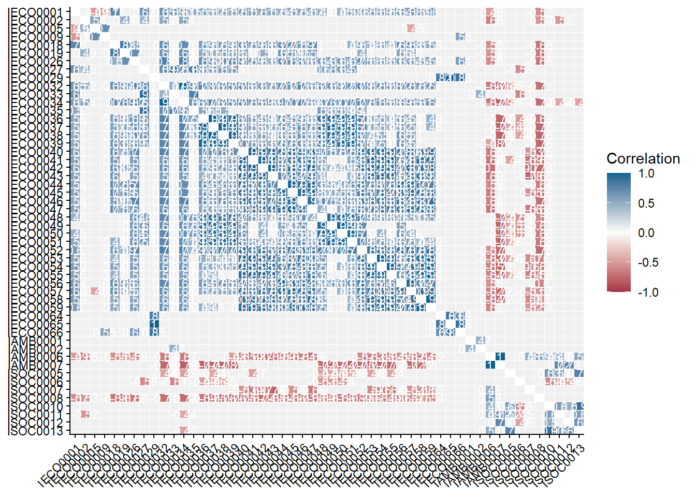
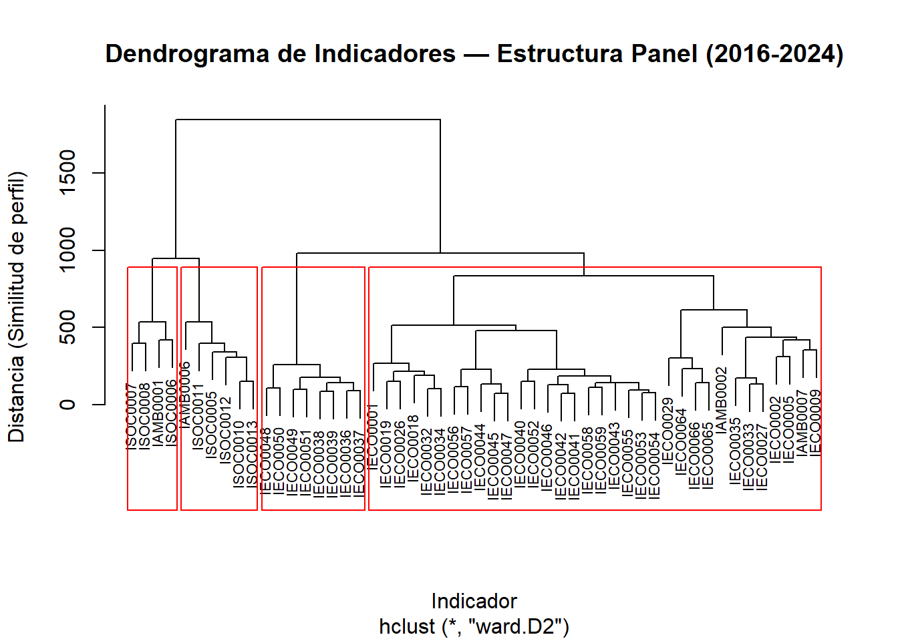
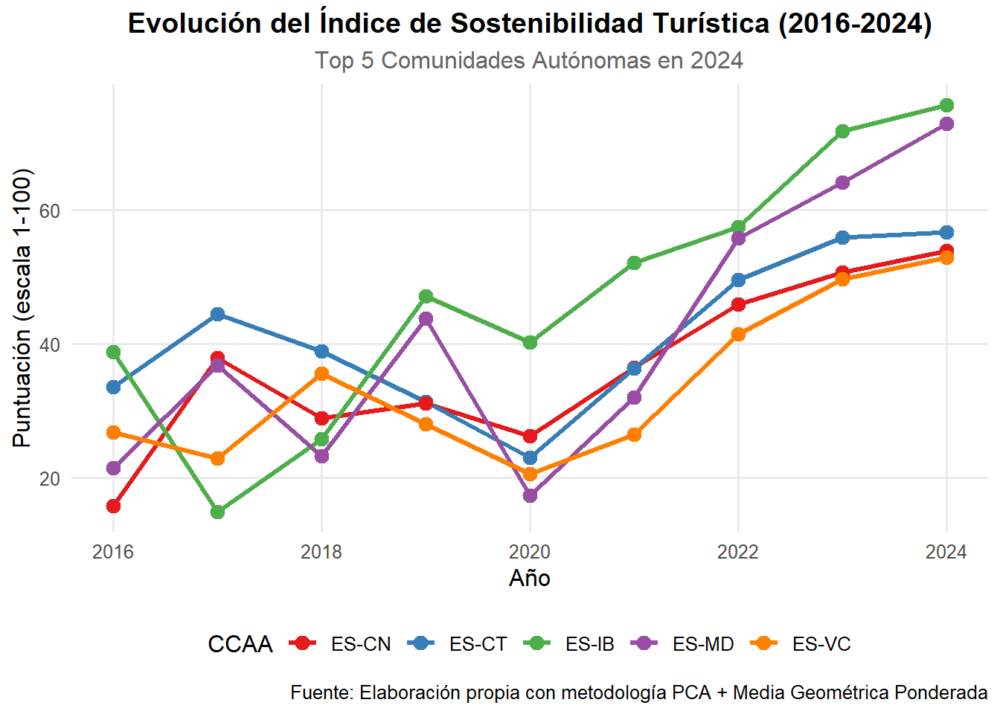
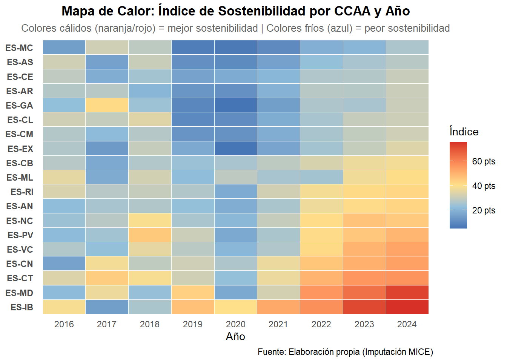
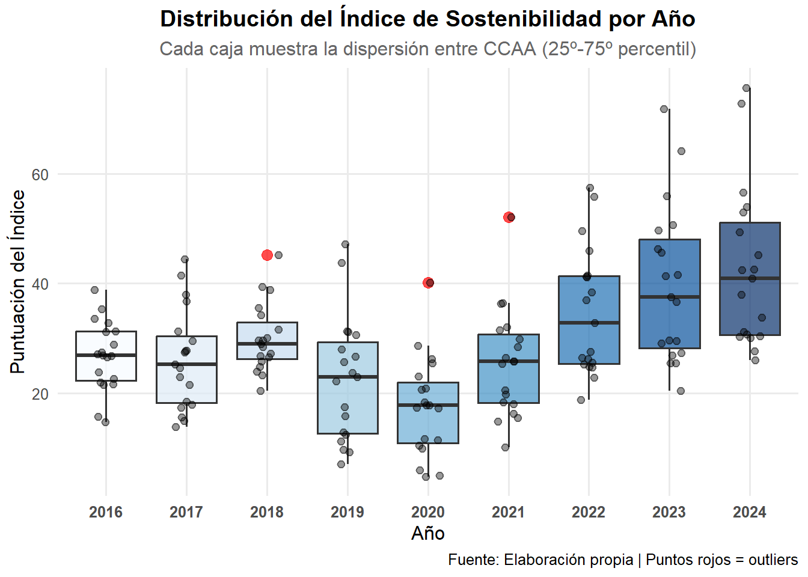
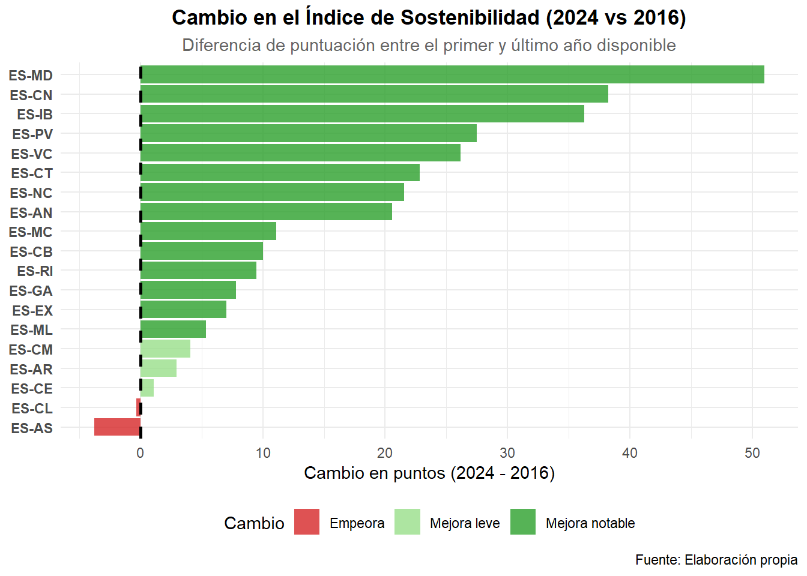
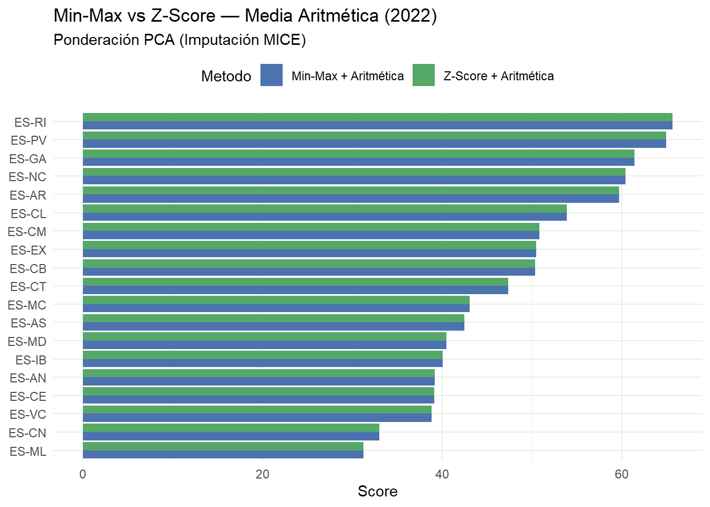
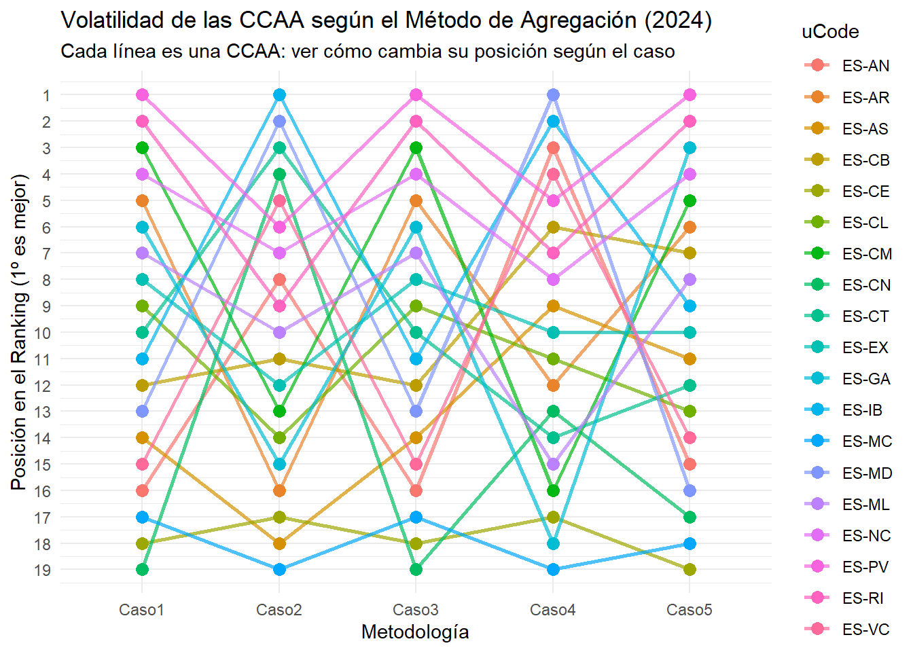

library(COINr)
library(dplyr)
library(tidyr)
library(lubridate)
library(ggplot2)
library(stringr)
library(Benchmarking)
library(mice)
library(scales)
library(knitr)
library(psych)
library(purrr)archivoFinal_tfg
Cargamos las librerías necesarias.
Cargamos los datos y los retocamos para que nos cuadre con la estructura que necesita COINr.
# Cargamos los 3 dfs: el de los valores, el de los metadatos y el df completo.
indicadores_calculados_final <- readRDS("~/MATEMÁTICAS URJC/CUARTO CURSO/TFG/tfg_composite_indicators/data/cindicators.rds")
indicators_meta_final <- readRDS("~/MATEMÁTICAS URJC/CUARTO CURSO/TFG/tfg_composite_indicators/data/indicators.rds")
df_indicadores_completo_final <- readRDS("~/MATEMÁTICAS URJC/CUARTO CURSO/TFG/tfg_composite_indicators/data/df_indicadores_completo.rds")
# Renombramos la columna valor, eliminamos la source_id que es la misma para todos y no aporta nada, quito 2025 (faltan datos de muchos indicadores)
indicadores_calculados_final <- indicadores_calculados_final |>
rename(value = indicator_value) |>
select(-source_id) |>
# Creamos el año y filtramos para quitar 2025
mutate(Year = year(as.Date(date))) |>
filter(Year != 2025)
# Verificamos cuántos indicadores tenemos en total
indicadores_activos <- indicadores_calculados_final %>%
pull(indicator_id) %>%
unique()
cat("Indicadores detectados:", length(indicadores_activos), "\n")Indicadores detectados: 58 iData
Es el df que tiene por columnas: uCode (que es nuestro código de cada región), Time (que son nuestros años) y todos los indicadores individuales. Por tanto, las filas son los valores que corresponden a cada región en cada año.
# Transformamos a formato ancho
iData <- indicadores_calculados_final %>%
mutate(Time = year(as.Date(date))) %>%
select(uCode = geo_id, Time, indicator_id, value) |>
pivot_wider(names_from = indicator_id, values_from = value)
# Paso los NaN a NA para tenerlo todo igual
iData[do.call(cbind, lapply(iData, is.nan))] <- NA
head(iData)# A tibble: 6 × 60
uCode Time IAMB0001 IAMB0002 IAMB0003 IAMB0004 IAMB0005 IAMB0006 IAMB0007
<chr> <dbl> <dbl> <dbl> <dbl> <dbl> <dbl> <dbl> <dbl>
1 ES-AN 2017 88.3 6.90 NA NA NA 79.7 20.3
2 ES-AR 2017 96.0 NA NA NA NA NA NA
3 ES-AS 2017 90.4 NA NA NA NA NA NA
4 ES-CB 2017 83.8 NA NA NA NA NA NA
5 ES-CE 2017 NA NA NA NA NA NA NA
6 ES-CL 2017 94.8 5.59 NA NA NA 18.5 81.5
# ℹ 51 more variables: IECO0001 <dbl>, IECO0002 <dbl>, IECO0005 <dbl>,
# IECO0009 <dbl>, IECO0012 <dbl>, IECO0013 <dbl>, IECO0018 <dbl>,
# IECO0019 <dbl>, IECO0026 <dbl>, IECO0027 <dbl>, IECO0029 <dbl>,
# IECO0032 <dbl>, IECO0033 <dbl>, IECO0034 <dbl>, IECO0035 <dbl>,
# IECO0036 <dbl>, IECO0037 <dbl>, IECO0038 <dbl>, IECO0039 <dbl>,
# IECO0040 <dbl>, IECO0041 <dbl>, IECO0042 <dbl>, IECO0043 <dbl>,
# IECO0044 <dbl>, IECO0045 <dbl>, IECO0046 <dbl>, IECO0047 <dbl>, …Ahora quiero ver de cuántos indicadores tengo datos por año y por región.
# Obtenemos los años únicos ordenados
anios <- sort(unique(iData$Time))
for(anio in anios){
cat("\n--- Indicadores que tienen datos en el año:", anio, "---\n")
res <- iData %>%
filter(Time == anio) %>%
rowwise() %>%
mutate(datos_reales = sum(!is.na(c_across(-c(uCode, Time))))) %>%
select(uCode, datos_reales)
print(res)
}
--- Indicadores que tienen datos en el año: 2016 ---
# A tibble: 20 × 2
# Rowwise:
uCode datos_reales
<chr> <int>
1 ES-AN 19
2 ES-AR 16
3 ES-AS 16
4 ES-CB 16
5 ES-CE 10
6 ES-CL 16
7 ES-CM 16
8 ES-CN 18
9 ES-CT 19
10 ES-EX 16
11 ES-GA 19
12 ES-IB 16
13 ES-MC 16
14 ES-MD 19
15 ES-ML 10
16 ES-NC 16
17 ES-PV 19
18 ES-RI 16
19 ES-VC 19
20 ESP 21
--- Indicadores que tienen datos en el año: 2017 ---
# A tibble: 20 × 2
# Rowwise:
uCode datos_reales
<chr> <int>
1 ES-AN 20
2 ES-AR 17
3 ES-AS 17
4 ES-CB 17
5 ES-CE 10
6 ES-CL 20
7 ES-CM 17
8 ES-CN 18
9 ES-CT 20
10 ES-EX 17
11 ES-GA 20
12 ES-IB 20
13 ES-MC 17
14 ES-MD 20
15 ES-ML 10
16 ES-NC 17
17 ES-PV 20
18 ES-RI 17
19 ES-VC 20
20 ESP 21
--- Indicadores que tienen datos en el año: 2018 ---
# A tibble: 20 × 2
# Rowwise:
uCode datos_reales
<chr> <int>
1 ES-AN 19
2 ES-AR 19
3 ES-AS 16
4 ES-CB 16
5 ES-CE 10
6 ES-CL 16
7 ES-CM 16
8 ES-CN 18
9 ES-CT 19
10 ES-EX 16
11 ES-GA 16
12 ES-IB 16
13 ES-MC 16
14 ES-MD 19
15 ES-ML 10
16 ES-NC 16
17 ES-PV 19
18 ES-RI 16
19 ES-VC 19
20 ESP 21
--- Indicadores que tienen datos en el año: 2019 ---
# A tibble: 20 × 2
# Rowwise:
uCode datos_reales
<chr> <int>
1 ES-AN 49
2 ES-AR 42
3 ES-AS 46
4 ES-CB 45
5 ES-CE 11
6 ES-CL 46
7 ES-CM 46
8 ES-CN 50
9 ES-CT 49
10 ES-EX 25
11 ES-GA 46
12 ES-IB 46
13 ES-MC 46
14 ES-MD 49
15 ES-ML 11
16 ES-NC 49
17 ES-PV 49
18 ES-RI 38
19 ES-VC 49
20 ESP 53
--- Indicadores que tienen datos en el año: 2020 ---
# A tibble: 20 × 2
# Rowwise:
uCode datos_reales
<chr> <int>
1 ES-AN 45
2 ES-AR 37
3 ES-AS 44
4 ES-CB 37
5 ES-CE 10
6 ES-CL 44
7 ES-CM 42
8 ES-CN 49
9 ES-CT 45
10 ES-EX 30
11 ES-GA 44
12 ES-IB 45
13 ES-MC 38
14 ES-MD 45
15 ES-ML 10
16 ES-NC 43
17 ES-PV 42
18 ES-RI 35
19 ES-VC 44
20 ESP 55
--- Indicadores que tienen datos en el año: 2021 ---
# A tibble: 20 × 2
# Rowwise:
uCode datos_reales
<chr> <int>
1 ES-AN 52
2 ES-AR 47
3 ES-AS 49
4 ES-CB 42
5 ES-CE 10
6 ES-CL 49
7 ES-CM 49
8 ES-CN 52
9 ES-CT 52
10 ES-EX 49
11 ES-GA 49
12 ES-IB 49
13 ES-MC 42
14 ES-MD 52
15 ES-ML 10
16 ES-NC 48
17 ES-PV 49
18 ES-RI 40
19 ES-VC 52
20 ESP 55
--- Indicadores que tienen datos en el año: 2022 ---
# A tibble: 20 × 2
# Rowwise:
uCode datos_reales
<chr> <int>
1 ES-AN 52
2 ES-AR 44
3 ES-AS 49
4 ES-CB 41
5 ES-CE 10
6 ES-CL 49
7 ES-CM 49
8 ES-CN 53
9 ES-CT 52
10 ES-EX 49
11 ES-GA 52
12 ES-IB 52
13 ES-MC 42
14 ES-MD 52
15 ES-ML 10
16 ES-NC 49
17 ES-PV 49
18 ES-RI 45
19 ES-VC 52
20 ESP 56
--- Indicadores que tienen datos en el año: 2023 ---
# A tibble: 20 × 2
# Rowwise:
uCode datos_reales
<chr> <int>
1 ES-AN 51
2 ES-AR 42
3 ES-AS 48
4 ES-CB 48
5 ES-CE 10
6 ES-CL 48
7 ES-CM 48
8 ES-CN 51
9 ES-CT 51
10 ES-EX 48
11 ES-GA 48
12 ES-IB 48
13 ES-MC 43
14 ES-MD 51
15 ES-ML 10
16 ES-NC 48
17 ES-PV 48
18 ES-RI 48
19 ES-VC 51
20 ESP 54
--- Indicadores que tienen datos en el año: 2024 ---
# A tibble: 20 × 2
# Rowwise:
uCode datos_reales
<chr> <int>
1 ES-AN 51
2 ES-AR 44
3 ES-AS 48
4 ES-CB 48
5 ES-CE 10
6 ES-CL 48
7 ES-CM 48
8 ES-CN 48
9 ES-CT 51
10 ES-EX 48
11 ES-GA 51
12 ES-IB 48
13 ES-MC 48
14 ES-MD 51
15 ES-ML 10
16 ES-NC 48
17 ES-PV 48
18 ES-RI 47
19 ES-VC 51
20 ESP 51resumen_disponibilidad <- iData %>%
pivot_longer(cols = -c(uCode, Time), names_to = "indicador", values_to = "valor") %>%
group_by(Time, uCode) %>%
summarise(total_datos = sum(!is.na(valor)), .groups = "drop") %>%
pivot_wider(names_from = Time, values_from = total_datos)
View(resumen_disponibilidad)Indicadores problemáticos
Estudiamos los indicadores que pueden darnos problemas, que son los que tengan varianza 0, es decir, los constantes. Para detectarlos podemos ver dónde min == max.
# Calculamos min y max por cada indicador y cada año
# Quitamos uCode porque al ser character nos puede dar error.
stats <- iData %>%
select(-uCode) %>%
group_by(Time) %>%
summarise(across(where(is.numeric), list(
min = ~min(.x, na.rm = TRUE),
max = ~max(.x, na.rm = TRUE)
), .names = "{.col}_{.fn}")) %>%
pivot_longer(
cols = -Time,
names_to = c("iCode", ".value"),
names_pattern = "(.*)_(.*)"
)
# Los que tienen min == max nos darán problemas (NaN) al normalizar
indicadores_con_problemas <- stats %>%
filter(min == max) %>%
select(Time, iCode, min, max)
print(indicadores_con_problemas, n=100)# A tibble: 29 × 4
Time iCode min max
<dbl> <chr> <dbl> <dbl>
1 2016 IAMB0003 1790688. 1790688.
2 2016 IAMB0005 19.9 19.9
3 2017 IAMB0003 1871010. 1871010.
4 2018 IAMB0003 1944853. 1944853.
5 2018 IAMB0005 21.8 21.8
6 2019 IAMB0003 1894067. 1894067.
7 2019 IECO0012 94.9 94.9
8 2019 IECO0013 4.72 4.72
9 2019 ISOC0004 88.6 88.6
10 2020 IAMB0002 1.66 1.66
11 2020 IAMB0005 23.7 23.7
12 2020 IAMB0006 74.2 74.2
13 2020 IAMB0007 25.8 25.8
14 2020 IECO0001 134. 134.
15 2020 IECO0002 1045. 1045.
16 2020 IECO0005 7.82 7.82
17 2020 IECO0012 94.2 94.2
18 2020 IECO0013 3.89 3.89
19 2020 ISOC0004 83.0 83.0
20 2021 IECO0012 97.7 97.7
21 2021 IECO0013 3.94 3.94
22 2021 ISOC0004 87.8 87.8
23 2022 IAMB0005 28.0 28.0
24 2022 IECO0012 112. 112.
25 2022 IECO0013 4.14 4.14
26 2022 ISOC0004 91.6 91.6
27 2023 IECO0012 121. 121.
28 2023 IECO0013 4.38 4.38
29 2023 ISOC0004 91.8 91.8 # Lista con los nombres únicos
nombres_problematicos <- indicadores_con_problemas %>%
pull(iCode) %>%
unique()
print("Indicadores a revisar:")[1] "Indicadores a revisar:"print(nombres_problematicos) [1] "IAMB0003" "IAMB0005" "IECO0012" "IECO0013" "ISOC0004" "IAMB0002"
[7] "IAMB0006" "IAMB0007" "IECO0001" "IECO0002" "IECO0005"INCLUYENDO 2020: nos dan problema 11 en total [1] “IAMB0003” “IAMB0005” “IECO0012” “IECO0013” “ISOC0004” “IAMB0002” “IAMB0006” [8] “IAMB0007” “IECO0001” “IECO0002” “IECO0005”
EXCLUYENDO 2020: [1] nos dan problema 5 en total (pero donde está IAMB0004? tambien habría que eliminarlo pq no tiene datos) [1] “IAMB0003” “IAMB0005” “IECO0012” “IECO0013” “ISOC0004”
Disponibilidad de datos por indicador
disponibilidad <- iData %>%
filter(uCode != "ESP") %>%
# Calculamos el % de datos no NA para cada columna (excepto uCode y Time)
summarise(across(-c(uCode, Time), ~ sum(!is.na(.x)) / n())) %>%
# Pasamos a formato largo para que sea una lista
pivot_longer(everything(), names_to = "iCode", values_to = "disponibilidad") %>%
# Lo multiplicamos por 100 para que sea porcentaje y redondeamos
mutate(disponibilidad_Pct = round(disponibilidad * 100, 2)) %>%
# Ordenamos para ver primero los que tienen menos datos
arrange(disponibilidad_Pct)
# Tabla completa
df_disponibilidad_datos <- as.data.frame(disponibilidad)
View(df_disponibilidad_datos)
# Indicadores que mantenemos: los que tengan más del 20% de datos disponibles
indicadores_a_mantener <- disponibilidad |> filter(disponibilidad_Pct>=20) |> pull(iCode)
# Vemos cuáles deberíamos eliminar:
eliminados <- disponibilidad |> filter(disponibilidad_Pct<20) |> pull(iCode)
print(paste("Indicadores eliminados por baja disponibilidad:", length(eliminados)))[1] "Indicadores eliminados por baja disponibilidad: 6"print(eliminados)[1] "IAMB0004" "IAMB0003" "IAMB0005" "IECO0012" "IECO0013" "ISOC0004"Con el filtro de eliminar los pct<20 [1] “Indicadores eliminados por baja disponibilidad incluyendo el año 2020 : 10” [1] “IAMB0004” “IECO0012” “IECO0013” “ISOC0004” “IAMB0005” “IAMB0003” “IAMB0002” [8] “IAMB0006” “IAMB0007” “IAMB0001”
[1] “Indicadores eliminados por baja disponibilidad excluyendo el año 2020 : 9. salvo a IAMB0002” [1] “IAMB0004” “IAMB0005” “IAMB0003” “IECO0012” “IECO0013” “ISOC0004” “IAMB0006” [8] “IAMB0007” “IAMB0001”
Eliminamos indicadores con baja disponibilidad
Eliminamos ahora los indicadores con baja disponibilidad
# Indicadores a eliminar (baja disponibilidad, pero mantengo 4 ambientales porque si no me quedo sin la dimensión ENV)
indicadores_eliminar <- c("IAMB0004", "IAMB0005", "IAMB0003", "IECO0012", "IECO0013", "ISOC0004")
# Filtramos iData eliminando esos indicadores
iData_clean <- iData %>%
select(-any_of(indicadores_eliminar))
# Verificación
print(paste("Indicadores restantes:", ncol(iData_clean) - 2)) # -2 por uCode y Time[1] "Indicadores restantes: 52"iMeta
Es el df de los metadatos, lo más importante es que contiene los códigos con los nombres completos y los pesos!! Como tenemos varios niveles para crear el IC, construimos el iMeta igual, en 3 niveles.
df <- indicators_meta_final %>%
select(-any_of("dimension_id")) %>%
left_join(
df_indicadores_completo_final %>%
select(indicator_id, dimension_id) %>%
distinct(),
by = "indicator_id"
)
# --- NIVEL 1: INDICADORES ---
iMeta_L1 <- df %>%
select(
iCode = indicator_id,
iName = indicator_original_name,
Parent = dimension_id,
Direction = indicator_direction,
Weight = indicator_weight
) %>%
distinct(iCode, .keep_all = TRUE) %>%
# Filtramos los que hemos decidido eliminar por baja disponibilidad
filter(!iCode %in% indicadores_eliminar) %>%
mutate(
Direction = ifelse(Direction == "+", 1, -1),
Level = 1,
Type = "Indicator"
)
# --- NIVEL 2: DIMENSIONES ---
iMeta_L2 <- iMeta_L1 %>%
select(iCode = Parent) %>%
distinct() %>%
mutate(
iName = paste("Dimensión:", iCode),
Level = 2,
Parent = "TotalIndex",
Direction = 1,
Weight = 1,
Type = "Aggregate"
)
# --- NIVEL 3: ÍNDICE FINAL ---
iMeta_L3 <- data.frame(
iCode = "TotalIndex",
iName = "Índice Sintético Regional",
Level = 3,
Parent = NA,
Direction = 1,
Weight = 1,
Type = "Aggregate"
)
# --- UNIÓN FINAL ---
iMeta <- bind_rows(iMeta_L1, iMeta_L2, iMeta_L3)
glimpse(iMeta)Rows: 56
Columns: 7
$ iCode <chr> "IECO0001", "IECO0002", "IAMB0001", "IECO0005", "IAMB0002", …
$ iName <chr> "Gasto medio por turista receptor y día", "Gasto medio por t…
$ Parent <chr> "ECO", "ECO", "ENV", "ECO", "ENV", "ENV", "ENV", "ECO", "SOC…
$ Direction <dbl> 1, 1, 1, 1, 1, -1, 1, 1, 1, 1, 1, 1, 1, 1, 1, 1, 1, 1, 1, 1,…
$ Weight <dbl> 1, 1, 1, 1, 1, 1, 1, 1, 1, 1, 1, 1, 1, 1, 1, 1, 1, 1, 1, 1, …
$ Level <dbl> 1, 1, 1, 1, 1, 1, 1, 1, 1, 1, 1, 1, 1, 1, 1, 1, 1, 1, 1, 1, …
$ Type <chr> "Indicator", "Indicator", "Indicator", "Indicator", "Indicat…Purse I
purse <- new_coin(
iData = iData_clean,
iMeta = iMeta,
split_to = "all",
quietly = TRUE
)
purse-----------------------------
A purse with... 9 coins
-----------------------------
Time n_Units n_Inds n_dsets
2016 20 52 1
2017 20 52 1
2018 20 52 1
2019 20 52 1
2020 20 52 1
2021 20 52 1
2022 20 52 1
2023 20 52 1
2024 20 52 1
-----------------------------------
Sample from first coin (2016):
-----------------------------------
Input:
Units: 20 (ES-AN, ES-AR, ES-AS, ...)
Indicators: 52 (IECO0001, IECO0002, IECO0005, ...)
Denominators: 0 ()
Groups: 0 (none)
Structure:
Level 1 : 52 indicators (IECO0001, IECO0002, IECO0005, ...)
Level 2 : 3 groups (ECO, ENV, SOC)
Level 3 : 1 groups (TotalIndex)
Data sets:
Raw (20 units)Imputacion MICE
Estuve trabajando con imputación por la mediana, pero me daba demasiados errores, no se cubría casi ningún NA porque no teníamos suficientes datos. Con MICE se nos cubren TODOS los NA excepto los del indicador individual IAMB0007.
# 1. Preparar datos numéricos
df_raw <- get_dset(purse, dset = "Raw") #Extraemos los datos originales (Raw)
df_ids <- df_raw %>% select(uCode, Time) #Guardamos aparte las oclumnas de identificación (región y año)
df_numeric <- df_raw %>% select(-uCode, -Time) #Nos quedamos solo con las columnas de los indicadores. Y estas son las que MICE va a analizar para encontrar patrones.
# 2. Diagnóstico Pre-MICE
na_pre <- sum(is.na(df_numeric)) #Celdas vacías en total
total_cells <- prod(dim(df_numeric)) #Tamaño total de nuestra tabla
cat("PRE-MICE: ", na_pre, " NAs (", round(100 * na_pre / total_cells, 2), "%)\n")PRE-MICE: 3161 NAs ( 33.77 %)# 3. Ejecutar MICE (PMM)
#df_numeric son los datos a procesar, m=1 creamos una sola versión de datos imputados, método PMM: Predictive Mean Matching, busca valores reales existentes que cuadren según el perfil de la regón. Con maxit = 5, el algoritmo itera 5 veces para refinar sus predicciones. Fijamos seed 42.
mice_out <- mice(df_numeric, m = 1, method = "pmm", maxit = 5, seed = 42, printFlag = FALSE)
df_imputed <- complete(mice_out)
# 4. Diagnóstico Post-MICE con porcentaje
na_post <- sum(is.na(df_imputed)) #volvemos a contar los NA
cat("POST-MICE:", na_post, " NAs (", round(100 * na_post / total_cells, 2), "%)\n")POST-MICE: 123 NAs ( 1.31 %)# 5. ¿Qué se ha quedado sin imputar?
if(na_post > 0){
cols_con_na <- colSums(is.na(df_imputed))
print("Indicadores que siguen teniendo NAs:")
print(cols_con_na[cols_con_na > 0])
}[1] "Indicadores que siguen teniendo NAs:"
IAMB0007
123 # 6. Reconstruimos iData e integramos en el purse
iData_imputed_mice <- bind_cols(df_ids, df_imputed)
purse <- new_coin(
iData = iData_imputed_mice,
iMeta = iMeta,
split_to = "all",
quietly = TRUE
)
# Marcar datos como ya imputados en cada coin del purse
# (Los datos MICE ya están imputados, así que Imputed = Raw)
for(i in seq_along(purse$coin)){
purse$coin[[i]]$Data$Imputed <- purse$coin[[i]]$Data$Raw
}Ejemplo gráfico distribución indicador IECO0033 por año.
# 1. Sacamos los datos limpios de todo el panel
df_imputed <- get_dset(purse, dset = "Imputed")
# 2. Elegimos el indicador que queremos "investigar" (ej. IECO0033)
df_imputed %>%
select(uCode, Time, IECO0033) %>%
# 3. Hacemos un diagrama de densidad (como un histograma suavizado) para ver la "cola"
ggplot(aes(x = IECO0033, fill = as.factor(Time))) +
geom_density(alpha = 0.4) + # Alpha le da transparencia para ver los años superpuestos
theme_minimal() +
labs(
title = "Distribución del indicador IECO0033 (Todos los años)",
subtitle = "Viendo la asimetría y los valores extremos",
x = "Valor del Indicador",
y = "Densidad",
fill = "Año"
)
Outliers
He visto dos formas de estudiarlos. P ej el ARII (https://publications.jrc.ec.europa.eu/repository/handle/JRC131063) que es el Índice de Integración Regional de África analiza los valores de asimetría y curtosis para detectarlos, y los que superen los umbrales de skew>2 y kurtosis>3.5 simultáneamente, son outliers. Pero esto lo hace teniendo solo datos de un año (2019 en su caso). No sé si nosotros podríamos hacerlo del panel completo de la forma siguiente:
# =================================
# ANÁLISIS DE ASIMETRÍA Y CURTOSIS
# =================================
# 1. Extraemos el dataset del purse
df_imputed <- get_dset(purse, dset = "Imputed")
# 2. Seleccionamos SOLO las columnas numéricas (los indicadores)
# Quitamos uCode y Time para que no dé error
df_numeric <- df_imputed %>% select(-uCode, -Time)
# 3. Calculamos las estadísticas sobre los números
stats_indicators <- get_stats(df_numeric, out2 = "df")
# 4. Filtramos los indicadores problemáticos (|Skew| > 2 o Kurtosis > 3.5)
indicadores_problematicos <- stats_indicators %>%
select(iCode, Skew, Kurt) %>%
filter(abs(Skew) > 2 | Kurt > 3.5) %>%
arrange(desc(abs(Skew)))
# 5. Resultado
if(nrow(indicadores_problematicos) > 0) {
message("Indicadores con outliers que 'rompen' la normalización:")
print(indicadores_problematicos)
} else {
message("Todos los indicadores están dentro de los umbrales normales.")
} iCode Skew Kurt
1 ISOC0008 -2.700 7.43
2 IECO0027 0.909 4.87
3 IECO0033 -0.171 4.30# Otra forma de ver outliers: zscore + ver quién se queda fuera del umbral
# Volvemos al dataset original con identificadores
df_long <- df_imputed %>%
pivot_longer(
cols = -c(uCode, Time),
names_to = "iCode",
values_to = "value"
)
# Calculamos z-score por indicador
df_outliers <- df_long %>%
group_by(iCode) %>%
mutate(
z = (value - mean(value, na.rm = TRUE)) / sd(value, na.rm = TRUE)
) %>%
ungroup() %>%
filter(abs(z) > 3) # umbral típico
# Resultado
print(df_outliers, n=74)# A tibble: 74 × 5
Time uCode iCode value z
<dbl> <chr> <chr> <dbl> <dbl>
1 2016 ES-CB IAMB0001 72.7 -3.02
2 2017 ES-RI ISOC0006 56.1 -3.15
3 2018 ES-AN IAMB0001 72.7 -3.02
4 2018 ES-AS ISOC0008 84.6 -3.60
5 2018 ES-CB ISOC0008 81.6 -4.38
6 2018 ES-IB ISOC0008 84.6 -3.60
7 2018 ESP ISOC0008 81.6 -4.38
8 2019 ES-CN ISOC0008 84.6 -3.60
9 2019 ES-IB ISOC0008 81.6 -4.38
10 2019 ES-MD IECO0001 271. 3.11
11 2020 ES-AN IAMB0001 72.7 -3.02
12 2020 ES-CB IAMB0001 72.7 -3.02
13 2020 ES-CN IAMB0001 72.7 -3.02
14 2020 ES-CT IECO0033 -22.4 -3.03
15 2020 ES-GA IECO0009 5.91 3.11
16 2020 ES-IB IAMB0001 72.7 -3.02
17 2020 ES-MD IAMB0001 72.2 -3.09
18 2020 ES-MD IECO0033 -28.8 -3.78
19 2020 ES-ML IECO0057 152. 3.16
20 2021 ES-MC IAMB0001 72.7 -3.02
21 2022 ES-CN IECO0019 3.94 3.09
22 2022 ES-CT IECO0033 31.3 3.25
23 2022 ES-CT IECO0035 118. 3.13
24 2022 ES-CT IECO0027 24.4 3.77
25 2022 ES-IB IECO0046 127. 3.02
26 2022 ES-IB IECO0066 7.11 3.06
27 2022 ES-MC IAMB0001 72.2 -3.09
28 2022 ES-MD IECO0001 281. 3.35
29 2022 ES-MD IECO0033 42.9 4.60
30 2022 ES-MD IECO0035 122. 3.26
31 2022 ES-MD IECO0027 31.5 5.10
32 2023 ES-IB IECO0019 4.10 3.37
33 2023 ES-IB IECO0042 184 3.42
34 2023 ES-IB IECO0043 186. 3.27
35 2023 ES-IB IECO0044 131. 3.14
36 2023 ES-IB IECO0045 136. 3.50
37 2023 ES-IB IECO0046 137. 3.66
38 2023 ES-IB IECO0047 136. 3.55
39 2023 ES-IB IECO0052 186. 3.26
40 2023 ES-IB IECO0053 192. 3.06
41 2023 ES-IB IECO0054 195. 3.18
42 2023 ES-IB IECO0058 146. 3.18
43 2023 ES-IB IECO0059 146. 3.23
44 2023 ES-IB IECO0041 182. 3.18
45 2023 ES-IB IECO0026 172. 3.52
46 2023 ES-MC ISOC0006 55.1 -3.42
47 2023 ES-MD IECO0001 293. 3.63
48 2024 ES-CN IECO0032 135. 3.18
49 2024 ES-CN IECO0034 114. 3.55
50 2024 ES-CN IECO0026 170. 3.41
51 2024 ES-IB ISOC0007 85.8 -4.48
52 2024 ES-IB IECO0018 0.996 3.22
53 2024 ES-IB IECO0019 4.62 4.21
54 2024 ES-IB IECO0040 186. 3.38
55 2024 ES-IB IECO0042 194. 3.84
56 2024 ES-IB IECO0043 195. 3.66
57 2024 ES-IB IECO0044 140. 3.68
58 2024 ES-IB IECO0045 143. 3.92
59 2024 ES-IB IECO0046 144. 4.16
60 2024 ES-IB IECO0047 144. 4.05
61 2024 ES-IB IECO0052 197. 3.74
62 2024 ES-IB IECO0053 204. 3.52
63 2024 ES-IB IECO0054 208 3.70
64 2024 ES-IB IECO0055 209. 3.38
65 2024 ES-IB IECO0057 152. 3.16
66 2024 ES-IB IECO0058 156. 3.82
67 2024 ES-IB IECO0059 157. 3.90
68 2024 ES-IB IECO0041 191. 3.57
69 2024 ES-IB IECO0026 185. 4.17
70 2024 ES-MD IECO0001 306. 3.94
71 2024 ES-MD IECO0002 1825. 3.09
72 2024 ES-MD IECO0018 0.978 3.10
73 2024 ES-MD IECO0032 135. 3.19
74 2024 ES-NC ISOC0006 56.1 -3.15O mejor los tratamos con la función Treat() del paquete COINr. (Como a continuación) La diferencia es que Treat trata año a año. Por tanto, los outliers haciendo un análisis del panel general y los que se tratan en Treat() no me cuadran.
Tratamos
Con Treat() Cómo funciona “winsorise”: no elimina los outliers, sino que mueve el valor atípico hacia el valor máximo “aceptable” permitido. Winmax=5 es el número máximo de putos a winsorizar. Treat trata cada año del purse de forma independiente: entra en 1 año, mira la columna del indicador X (las 19 regiones), calcula la asimetría sólo con esos 19 datos y winsoriza si hace falta. Luego sigue con el siguiente año y repite el proceso. Riesgo de esto: perdemos la perspectiva histórica. Un outlier en 2016 puede ser un valor normal en 2024 p ej.
purse<- Treat(
purse,
dset = "Imputed",
f_t = "winsorise",
f_t_para = list(na.rm = TRUE,
winmax = 5, #es el limite por indicador y por año
skew_thresh = 2,
kurt_thresh = 3.5,
force_win = TRUE),
disable = FALSE
)df_before <- get_dset(purse, "Imputed")
df_after <- get_dset(purse, "Treated")
library(dplyr)
comparacion <- df_outliers %>%
select(uCode, Time, iCode) %>%
left_join(
df_before %>%
pivot_longer(-c(uCode, Time), names_to = "iCode", values_to = "before"),
by = c("uCode", "Time", "iCode")
) %>%
left_join(
df_after %>%
pivot_longer(-c(uCode, Time), names_to = "iCode", values_to = "after"),
by = c("uCode", "Time", "iCode")
)
print(comparacion,n=75)# A tibble: 74 × 5
uCode Time iCode before after
<chr> <dbl> <chr> <dbl> <dbl>
1 ES-CB 2016 IAMB0001 72.7 72.7
2 ES-RI 2017 ISOC0006 56.1 56.1
3 ES-AN 2018 IAMB0001 72.7 72.7
4 ES-AS 2018 ISOC0008 84.6 84.6
5 ES-CB 2018 ISOC0008 81.6 81.6
6 ES-IB 2018 ISOC0008 84.6 84.6
7 ESP 2018 ISOC0008 81.6 81.6
8 ES-CN 2019 ISOC0008 84.6 84.6
9 ES-IB 2019 ISOC0008 81.6 81.6
10 ES-MD 2019 IECO0001 271. 271.
11 ES-AN 2020 IAMB0001 72.7 72.7
12 ES-CB 2020 IAMB0001 72.7 72.7
13 ES-CN 2020 IAMB0001 72.7 72.7
14 ES-CT 2020 IECO0033 -22.4 -22.4
15 ES-GA 2020 IECO0009 5.91 5.91
16 ES-IB 2020 IAMB0001 72.7 72.7
17 ES-MD 2020 IAMB0001 72.2 72.2
18 ES-MD 2020 IECO0033 -28.8 -28.8
19 ES-ML 2020 IECO0057 152. 152.
20 ES-MC 2021 IAMB0001 72.7 88.4
21 ES-CN 2022 IECO0019 3.94 3.94
22 ES-CT 2022 IECO0033 31.3 31.3
23 ES-CT 2022 IECO0035 118. 118.
24 ES-CT 2022 IECO0027 24.4 24.4
25 ES-IB 2022 IECO0046 127. 127.
26 ES-IB 2022 IECO0066 7.11 7.11
27 ES-MC 2022 IAMB0001 72.2 85.0
28 ES-MD 2022 IECO0001 281. 281.
29 ES-MD 2022 IECO0033 42.9 42.9
30 ES-MD 2022 IECO0035 122. 122.
31 ES-MD 2022 IECO0027 31.5 31.5
32 ES-IB 2023 IECO0019 4.10 4.10
33 ES-IB 2023 IECO0042 184 184
34 ES-IB 2023 IECO0043 186. 186.
35 ES-IB 2023 IECO0044 131. 131.
36 ES-IB 2023 IECO0045 136. 136.
37 ES-IB 2023 IECO0046 137. 137.
38 ES-IB 2023 IECO0047 136. 136.
39 ES-IB 2023 IECO0052 186. 186.
40 ES-IB 2023 IECO0053 192. 192.
41 ES-IB 2023 IECO0054 195. 195.
42 ES-IB 2023 IECO0058 146. 146.
43 ES-IB 2023 IECO0059 146. 146.
44 ES-IB 2023 IECO0041 182. 182.
45 ES-IB 2023 IECO0026 172. 172.
46 ES-MC 2023 ISOC0006 55.1 63.8
47 ES-MD 2023 IECO0001 293. 293.
48 ES-CN 2024 IECO0032 135. 135.
49 ES-CN 2024 IECO0034 114. 114.
50 ES-CN 2024 IECO0026 170. 170.
51 ES-IB 2024 ISOC0007 85.8 97.5
52 ES-IB 2024 IECO0018 0.996 0.996
53 ES-IB 2024 IECO0019 4.62 4.62
54 ES-IB 2024 IECO0040 186. 186.
55 ES-IB 2024 IECO0042 194. 194.
56 ES-IB 2024 IECO0043 195. 195.
57 ES-IB 2024 IECO0044 140. 140.
58 ES-IB 2024 IECO0045 143. 143.
59 ES-IB 2024 IECO0046 144. 144.
60 ES-IB 2024 IECO0047 144. 144.
61 ES-IB 2024 IECO0052 197. 197.
62 ES-IB 2024 IECO0053 204. 204.
63 ES-IB 2024 IECO0054 208 208
64 ES-IB 2024 IECO0055 209. 209.
65 ES-IB 2024 IECO0057 152. 152.
66 ES-IB 2024 IECO0058 156. 156.
67 ES-IB 2024 IECO0059 157. 157.
68 ES-IB 2024 IECO0041 191. 191.
69 ES-IB 2024 IECO0026 185. 185.
70 ES-MD 2024 IECO0001 306. 306.
71 ES-MD 2024 IECO0002 1825. 1825.
72 ES-MD 2024 IECO0018 0.978 0.978
73 ES-MD 2024 IECO0032 135. 135.
74 ES-NC 2024 ISOC0006 56.1 56.1 #estos son los que ha tratado la funcion Treat()
comparacion %>% filter(before != after)# A tibble: 4 × 5
uCode Time iCode before after
<chr> <dbl> <chr> <dbl> <dbl>
1 ES-MC 2021 IAMB0001 72.7 88.4
2 ES-MC 2022 IAMB0001 72.2 85.0
3 ES-MC 2023 ISOC0006 55.1 63.8
4 ES-IB 2024 ISOC0007 85.8 97.5Filtramos la tabla de comparación para ver solo donde hubo winsorizacion.
filas_cambiadas <- comparacion %>%
filter(before != after)
print(filas_cambiadas)# A tibble: 4 × 5
uCode Time iCode before after
<chr> <dbl> <chr> <dbl> <dbl>
1 ES-MC 2021 IAMB0001 72.7 88.4
2 ES-MC 2022 IAMB0001 72.2 85.0
3 ES-MC 2023 ISOC0006 55.1 63.8
4 ES-IB 2024 ISOC0007 85.8 97.5# Contamos cuántos indicadores diferentes han sido afectados
resumen_cambios <- filas_cambiadas %>%
group_by(iCode) %>%
summarise(Num_Veces_Winsorizado = n())
print(resumen_cambios)# A tibble: 3 × 2
iCode Num_Veces_Winsorizado
<chr> <int>
1 IAMB0001 2
2 ISOC0006 1
3 ISOC0007 1Normalización min-max [1,100]
Ponemos el 1 aposta porque si ponemos de 0-100, el 0 nos puede dar problema en la media geométrica.
purse <- Normalise(
purse,
dset = "Treated",
normalise_by = "all",
f_n = "n_minmax",
f_n_para = list(l_u = c(1, 100))
)ANÁLISIS MULTIVARIANTE
Correlaciones entre indicadores individuales año 2022 como ejemplo
Elijo el año 2022 como ejemplo porque es el año del que más datos tenemos.
coin_2022 <- purse$coin[[which(purse$Time == 2022)]]
plot_corr(
coin_2022,
dset = "Normalised",
grouplev = 3, #ojo, sale diferente cn 2 que con 3, mirar bien que significa
flagging = TRUE,
cortype = "pearson"
)
Conclusiones viendo el gráfico:
Cohesión en la dimensión ECO: se observa un bloque densamente correlacionado en los indicadores IECO… (valores de r>0.80). Esto indica que el desarrollo económico en las CCAA tiende a ser multidimensional y sinérgico; sin embargo, la presencia de correlaciones cercanas a 1 entre ciertos indicadores sugiere una alta redundancia informativa que debe ser considerada en la ponderación final.
Independencia de las dimensiones SOC y ENV: a diferencia del bloque económico, los indicadores ISOC… e IAMB… presentan una baja correlación inter-dimensional y entre ellos mismos. Esto valida su inclusión en el modelo, ya que aportan información única y no redundante que los indicadores económicos no son capaces de capturar por sí solos.
Trade-offs y conflictos de sostenibilidad: la aparición de correlaciones negativas (tonos rojizos) en cruces específicos entre indicadores de crecimiento económico y sostenibilidad social/ambiental sugiere la existencia de “conflictos de objetivos”. Estos puntos son críticos para el análisis, ya que identifican áreas donde el progreso económico podría estar comprometiendo otros pilares del bienestar.
Validez del enfoque multidimensional: la heterogeneidad de colores y la presencia de amplias zonas de baja correlación confirman que el fenómeno analizado es complejo y que un ranking basado únicamente en variables económicas sería insuficiente para captar la realidad de la sostenibilidad regional en España.
PCA y clustering para todo el panel
Análisis exploratorio. Hacemos PCA sobre el panel completo apilado (todas las CCAA x tods los años) para entender la estructura de los datos y ver cuánta varianza explica la PC1. También hacemos clustering jerárquico (dendrograma) para ver cómo se agrupan los indicadores. (Aquí todavía no guardamos los pesos en los metadatos del índice, sólo es exploratorio).
## PCA — PANEL COMPLETO CON DIAGNÓSTICO DE ELIMINACIÓN
# 1. Extraer datos iniciales
df_norm_panel <- get_dset(purse, dset = "Normalised") %>%
filter(uCode != "ESP")
# Guardamos los nombres iniciales para comparar
nombres_iniciales <- names(df_norm_panel %>% select(where(is.numeric)) %>% select(-any_of("Time")))
# --- PASO A: Identificar indicadores TODO NA ---
indicadores_todo_na <- nombres_iniciales[sapply(df_norm_panel[nombres_iniciales], function(x) all(is.na(x)))]
# --- PASO D: Identificar indicadores CONSTANTES (Sin varianza) ---
# Primero imputamos temporalmente para poder calcular la varianza sin que los NAs molesten
df_temp <- df_norm_panel %>%
mutate(across(everything(), ~ ifelse(is.na(.x), median(.x, na.rm = TRUE), .x)))
indicadores_constantes <- nombres_iniciales[sapply(df_temp[nombres_iniciales], function(x) var(x, na.rm = TRUE) <= 1e-10)]
# --- INFORME DE ELIMINACIÓN ---
cat("════ REPORT DE LIMPIEZA PCA ════\n")════ REPORT DE LIMPIEZA PCA ════cat("Indicadores iniciales: ", length(nombres_iniciales), "\n")Indicadores iniciales: 52 if(length(indicadores_todo_na) > 0) {
cat("\n ELIMINADOS POR SER TODO NA:\n", paste(indicadores_todo_na, collapse = ", "), "\n")
} else {
cat("\n Ningún indicador es totalmente NA.\n")
}
Ningún indicador es totalmente NA.if(length(indicadores_constantes) > 0) {
cat("\n ELIMINADOS POR VARIANZA CERO (Constantes):\n", paste(indicadores_constantes, collapse = ", "), "\n")
} else {
cat("\n Ningún indicador es constante.\n")
}
Ningún indicador es constante.# 2. Preparación final de la matriz (ya sabiendo qué quitamos)
df_pca_panel <- df_norm_panel %>%
select(all_of(nombres_iniciales)) %>%
select(-any_of(c(indicadores_todo_na, indicadores_constantes))) %>%
# Imputación de rescate para los 136 NAs residuales de MICE
mutate(across(everything(), ~ ifelse(is.na(.x), median(.x, na.rm = TRUE), .x)))
cat("\n✓ Indicadores finales para PCA: ", ncol(df_pca_panel), "\n")
✓ Indicadores finales para PCA: 52 cat("════════════════════════════════\n")════════════════════════════════# 3. Ejecución del PCA
pca_result_panel <- prcomp(df_pca_panel, center = TRUE, scale. = TRUE)
print(pca_result_panel)Standard deviations (1, .., p=52):
[1] 4.40226553 2.63410660 2.17878622 1.84347754 1.67147255 1.46615696
[7] 1.28722529 1.14350747 1.09145503 1.03494834 1.00821221 0.89454818
[13] 0.87290638 0.81725352 0.73763122 0.73738905 0.65106585 0.59576816
[19] 0.55358373 0.52867703 0.46042820 0.42961204 0.41132408 0.40701241
[25] 0.35380591 0.32919055 0.31086316 0.30645005 0.27535942 0.25828942
[31] 0.23932878 0.21835554 0.19770882 0.18772218 0.17658859 0.14734278
[37] 0.14422757 0.13577761 0.12364432 0.11506839 0.10907028 0.09953151
[43] 0.09439159 0.08517894 0.08416712 0.07946697 0.06434020 0.06184627
[49] 0.05690699 0.05266938 0.04115374 0.03762100
Rotation (n x k) = (52 x 52):
PC1 PC2 PC3 PC4 PC5
IECO0001 0.135185220 -0.034271823 0.05217369 -0.0070258702 0.186964121
IECO0002 0.113520626 -0.036454363 0.05672306 -0.2669395404 0.023796394
IAMB0001 0.040129194 -0.091008586 0.15240282 -0.0539857111 -0.066212286
IECO0005 -0.035697306 0.007202833 -0.01785946 -0.2327491313 -0.163592937
IAMB0002 -0.005220975 -0.092802988 -0.01543073 0.0642416217 -0.261676190
IAMB0006 -0.096161317 -0.093410036 0.02122906 0.2923774170 -0.150654423
IAMB0007 -0.047565370 -0.026228915 0.02774323 0.1292725676 -0.132392020
IECO0009 -0.041255889 -0.018191436 -0.04028482 -0.1417894567 0.100634342
ISOC0005 -0.042691993 -0.233219783 0.05677306 0.1471165349 0.148766784
ISOC0006 -0.048440010 -0.021226617 -0.09774763 -0.2306175083 0.219592187
ISOC0007 -0.071578795 -0.110008157 0.17798346 -0.0049743249 0.213837661
ISOC0008 -0.039030149 -0.138793156 0.05790149 0.1462484117 -0.128138068
IECO0018 0.176796331 -0.066999418 0.06572344 -0.0613503866 0.211832542
IECO0019 0.145817578 -0.069158008 0.04237125 -0.1366283157 0.233847501
ISOC0010 0.002498141 -0.207808873 0.07475260 0.3154269638 0.076489803
IECO0032 0.189107122 -0.041289603 0.07513748 -0.1296069647 0.114567088
IECO0033 0.104126083 -0.100120260 0.25474462 -0.1762034017 -0.096565747
IECO0034 0.179940226 -0.028333284 0.04055965 -0.1502507041 0.149199481
IECO0035 0.058434880 -0.087085589 0.24952333 -0.2058999730 -0.103414548
ISOC0011 0.006531733 -0.225338370 0.01710568 0.2028765001 0.226338498
ISOC0012 -0.009553559 -0.121077371 0.14476723 0.2508490512 -0.133294011
IECO0036 0.143785934 0.223719604 0.10923965 0.1558545278 0.117058039
IECO0037 0.152565415 0.230474885 0.11153518 0.1207574991 0.094544315
IECO0038 0.140469083 0.242859741 0.13592911 0.1239171688 0.098095117
IECO0039 0.134597569 0.243958264 0.13360608 0.1006111174 0.142327432
IECO0040 0.185319851 0.048530770 -0.09260105 0.0720186485 -0.135185835
IECO0042 0.201441195 0.055093749 -0.09298228 -0.0164297991 -0.156756917
IECO0043 0.193221982 -0.019868317 -0.19681668 -0.0185210070 -0.041941718
IECO0044 0.165929499 -0.091211531 -0.15780884 0.0642676018 0.170095305
IECO0045 0.172970206 -0.125978089 -0.16141335 0.0075946633 0.125209942
IECO0046 0.197553929 0.001336336 -0.06586412 -0.0052121190 -0.147015129
IECO0047 0.180965480 -0.107924942 -0.16827233 -0.0089312430 0.079296617
IECO0048 0.148297023 0.205261425 0.12246969 0.1167691342 -0.039954133
IECO0049 0.143377352 0.212089611 0.15127158 0.1485030753 0.070974687
IECO0050 0.138160591 0.229303739 0.15999251 0.0876881059 0.003837889
IECO0051 0.143433750 0.225864372 0.11758965 0.1247539434 0.073503076
IECO0052 0.196313114 -0.004144202 -0.11403253 0.1190068215 -0.049264086
IECO0053 0.194853795 0.009361451 -0.10199790 0.0257102307 -0.225446222
IECO0054 0.200391983 -0.037510016 -0.11317181 0.0134040649 -0.163039145
IECO0055 0.198441084 -0.026127202 -0.12459905 0.0313695589 -0.148500281
IECO0056 0.120941855 -0.170568080 -0.20072687 0.0712872887 0.210555035
IECO0057 0.148875593 -0.171461265 -0.20174734 0.0293005800 0.123723040
IECO0058 0.194895690 -0.078826173 -0.10862293 0.0388056047 -0.110378875
IECO0059 0.194950280 -0.110471385 -0.12192991 -0.0062355046 -0.061006859
IECO0041 0.193608978 0.039925784 -0.12002317 -0.0004043814 -0.202162208
IECO0026 0.180798099 -0.066635007 0.10002905 -0.1273957452 0.070776520
IECO0027 0.114926358 -0.122001295 0.24504246 -0.1583370404 -0.085081544
ISOC0013 0.001102312 -0.263307645 0.08476201 0.3056560021 0.082152393
IECO0066 0.117939639 -0.183504479 0.24554320 -0.0476003333 -0.079248942
IECO0065 0.112492034 -0.179742862 0.23072882 0.0051899356 -0.103090667
IECO0064 0.104106612 -0.174413547 0.27901606 -0.0895560768 -0.123018233
IECO0029 0.108355793 -0.163810725 0.17952753 0.0906407533 -0.034127723
PC6 PC7 PC8 PC9 PC10
IECO0001 -0.133037732 0.363657676 -0.179718832 0.043099754 -0.316124922
IECO0002 0.188518868 0.188337067 -0.311177986 0.211190443 0.085978625
IAMB0001 -0.292386053 -0.017213229 -0.081847061 0.114595330 0.209135642
IECO0005 0.351071030 -0.165667528 -0.176010080 0.245297358 0.371158217
IAMB0002 -0.120094319 0.267468690 -0.365616612 -0.033232608 0.361452100
IAMB0006 -0.046469654 -0.163841647 0.012802234 -0.112238309 -0.086167470
IAMB0007 -0.106181107 0.038203387 0.310292426 0.149585023 0.214093276
IECO0009 0.463844973 -0.257681727 0.164552647 0.052791837 -0.046558930
ISOC0005 0.090771198 0.232220117 0.296311237 -0.106386842 0.030405043
ISOC0006 -0.156410344 0.144336875 0.324059653 -0.206279318 0.077262468
ISOC0007 -0.056555722 -0.038649833 -0.162973449 -0.372188529 0.133425716
ISOC0008 -0.023921335 -0.165522746 -0.282819584 0.084323514 -0.506691866
IECO0018 0.026531402 0.175145334 -0.024727254 0.075281520 -0.139978069
IECO0019 0.282533786 0.012303231 0.114654105 0.082541142 -0.113723699
ISOC0010 0.113386833 0.138382711 0.091399710 0.284591634 0.101527391
IECO0032 -0.026601867 0.184516854 -0.075569691 -0.018550956 0.016831680
IECO0033 -0.231591117 -0.029052511 0.099544360 0.228557344 0.025568946
IECO0034 -0.016409623 0.207014282 -0.064895528 0.021813857 0.041926736
IECO0035 -0.227550156 -0.152028697 0.177971670 0.211724033 -0.066528935
ISOC0011 -0.173160475 -0.200948644 -0.024001927 0.047318023 0.173894274
ISOC0012 0.233280944 0.284620108 0.115121092 0.128684837 0.045694640
IECO0036 0.016652740 -0.038410855 -0.042574147 0.157721051 0.034221150
IECO0037 0.017474578 -0.090373943 0.006215721 0.082599422 -0.019055274
IECO0038 0.001617754 -0.045305954 -0.030775565 0.075182475 -0.001123978
IECO0039 -0.026895558 -0.029166318 -0.006948462 0.018309572 -0.017130625
IECO0040 0.073251419 0.013211328 0.011725749 0.170557328 -0.108120203
IECO0042 0.043025702 0.074586622 0.101612543 -0.010402221 -0.068265374
IECO0043 -0.051338225 -0.065802677 0.083350570 0.025877880 -0.094113381
IECO0044 -0.017611967 -0.175106395 -0.063532130 0.039006377 0.103460501
IECO0045 -0.021157626 -0.149322453 0.010947850 -0.007805822 0.085415168
IECO0046 0.077242046 0.069458783 0.102451594 -0.128767134 0.070742022
IECO0047 -0.033565131 -0.134027483 0.049566298 -0.050407397 0.066560244
IECO0048 0.048554158 0.009608542 0.060735987 -0.158709850 0.161937584
IECO0049 -0.010735978 -0.098054283 -0.023902453 -0.021492008 0.067803544
IECO0050 0.012873466 0.019671563 0.065552554 -0.155098560 0.145974111
IECO0051 -0.071103818 -0.082695829 -0.042409789 0.007361926 0.044307378
IECO0052 0.037666776 -0.079299794 -0.026579479 0.026001859 0.074393263
IECO0053 0.011524984 0.061262604 0.051512924 -0.111370087 0.001540468
IECO0054 -0.016515762 0.013076385 0.040577724 -0.107430117 -0.027890365
IECO0055 -0.041716323 0.008241507 0.071364460 -0.023495338 -0.006945344
IECO0056 -0.088630535 -0.185714522 -0.141000092 0.137369044 0.072771846
IECO0057 -0.111381445 -0.121763368 -0.087551136 0.028910549 0.071700992
IECO0058 -0.069098871 0.039306863 -0.003782071 -0.036272391 -0.027641281
IECO0059 -0.022039865 0.073233600 0.015495579 -0.124008113 0.011973970
IECO0041 0.032320386 0.050898852 0.084952339 0.042875904 -0.125597050
IECO0026 0.123533478 0.002033403 0.054741472 -0.126066310 0.101140862
IECO0027 -0.147560938 -0.103054246 0.119869229 0.165296008 -0.030614336
ISOC0013 0.132527255 0.101879330 0.078793665 0.161593298 0.037545187
IECO0066 0.075683101 -0.131430077 0.058826057 -0.170918681 -0.005949240
IECO0065 0.121494552 -0.109210340 -0.066104032 -0.200369263 -0.035724234
IECO0064 0.002159677 -0.161905509 0.068770343 -0.112983127 -0.065175579
IECO0029 0.205981483 -0.040187830 -0.245383547 -0.280764913 -0.034689563
PC11 PC12 PC13 PC14 PC15
IECO0001 0.067426126 -0.015860039 0.077808311 -0.1161320658 0.018378239
IECO0002 -0.045965221 0.238045216 0.250921075 0.0516228622 -0.024974468
IAMB0001 0.283408464 0.463658168 -0.489286738 0.0115749908 -0.141656257
IECO0005 -0.138924103 0.214713959 0.194890244 0.1343335170 -0.102690577
IAMB0002 0.074857687 -0.462568730 0.069800246 0.0830256650 -0.034213017
IAMB0006 0.207353816 -0.025451852 0.284459278 -0.0372867107 -0.441109003
IAMB0007 0.650342417 -0.017338685 0.186974100 0.1788702610 0.286009047
IECO0009 0.162759265 -0.198299820 -0.182702014 0.1666461598 -0.162976386
ISOC0005 -0.138410525 0.058012431 0.123122783 0.0358716926 -0.169527545
ISOC0006 -0.143539021 0.062085197 0.260425556 0.4541552639 0.025447692
ISOC0007 -0.069384613 -0.120615342 -0.270888120 0.1535042856 -0.274948716
ISOC0008 0.030423022 0.036380273 -0.057819104 0.5687756872 0.057432534
IECO0018 0.129367196 0.031805210 0.089139651 -0.2023868558 -0.067680790
IECO0019 0.223626956 -0.070031853 -0.028505365 -0.0773321239 -0.152669750
ISOC0010 -0.122890012 0.035145046 -0.032864404 -0.1148664069 -0.018550074
IECO0032 0.121289991 -0.119841600 0.009074613 0.1488074042 -0.086467413
IECO0033 -0.121205538 -0.127670273 -0.065317304 -0.0357487596 -0.060075206
IECO0034 0.148062069 -0.058751080 0.021835464 0.1177071868 -0.019160208
IECO0035 -0.148462645 -0.172250029 -0.050521882 0.0184967727 -0.222547807
ISOC0011 0.006512306 0.129858178 0.213982140 0.0290933739 -0.233223697
ISOC0012 -0.204783571 -0.003570604 -0.259684701 0.2866887551 0.179541731
IECO0036 0.019705596 -0.072345401 0.022244002 0.0019792235 -0.024611910
IECO0037 0.014639695 0.027182280 0.036089683 0.0199439587 -0.023804108
IECO0038 -0.008596022 0.015330257 0.010433780 0.0395060764 0.009125521
IECO0039 -0.009877281 0.079264798 -0.021040712 0.0820214334 0.055104071
IECO0040 0.079307438 -0.206241365 -0.010063717 -0.0171728519 -0.115600674
IECO0042 -0.012441392 0.061099497 -0.094172750 -0.0005353215 -0.086941377
IECO0043 -0.005394778 0.116309117 0.003241986 0.0125454922 -0.005334085
IECO0044 -0.015952938 -0.242370925 -0.068010056 0.0210549625 0.146628609
IECO0045 -0.017290508 -0.052086404 -0.147525130 0.0056223005 0.169092595
IECO0046 -0.036526659 0.016396666 -0.169858200 -0.0396724095 0.043912141
IECO0047 -0.002465588 0.037777508 -0.129787682 -0.0837017149 0.136460453
IECO0048 -0.072926028 -0.039600721 -0.044845260 -0.0667783068 -0.046787102
IECO0049 -0.052583727 -0.016274162 0.114556373 0.1306481357 0.038122270
IECO0050 -0.074200695 0.041260098 -0.036648194 0.0037681926 -0.013203678
IECO0051 -0.072364378 0.077425240 0.118624962 0.2008182784 0.052035260
IECO0052 -0.020853422 -0.199824182 0.060001435 -0.0333457608 -0.154831385
IECO0053 -0.069746773 0.019397139 0.024380931 0.0387077231 -0.110700650
IECO0054 -0.056402437 0.132559064 0.057946206 0.0442391377 -0.139934511
IECO0055 -0.029182760 0.109575006 0.111977920 0.0277137883 -0.143048737
IECO0056 -0.054570718 -0.056458494 0.024753832 0.0299817134 0.100048739
IECO0057 -0.074475778 0.066451455 0.038708746 0.0217829579 0.099495264
IECO0058 -0.020684543 0.180487990 0.038533399 0.0399409392 -0.038334614
IECO0059 -0.052326051 -0.048647430 -0.066231402 0.0905406798 0.065517260
IECO0041 0.020111061 0.013827569 -0.032027732 0.0373372513 -0.100932707
IECO0026 0.218024962 -0.016899476 -0.072249827 0.1663718368 -0.084771991
IECO0027 -0.148927622 -0.196825122 0.069806671 0.0195213560 0.042871435
ISOC0013 -0.111369385 0.075003088 -0.043976076 -0.0084479587 -0.019487104
IECO0066 0.020359408 -0.026432933 0.112581797 -0.0775072251 0.232424968
IECO0065 0.014930171 0.043742384 0.165614251 -0.1286819391 0.297380698
IECO0064 -0.040475681 0.048862909 0.118879941 -0.1080652443 0.117430161
IECO0029 0.138586722 0.098063045 -0.001157026 -0.0433140032 0.001468097
PC16 PC17 PC18 PC19 PC20
IECO0001 -0.068815978 -0.2321349337 0.2369554284 -0.2266953606 0.3105712600
IECO0002 -0.210337616 -0.0334503816 0.1820430968 -0.0951014400 0.1773449678
IAMB0001 0.261798571 -0.0485265881 0.2385371720 0.1587693086 0.0689175000
IECO0005 -0.200028478 0.0441335182 -0.0609718057 0.1603225968 -0.0383102506
IAMB0002 0.206994931 -0.1337556942 0.1261155606 0.2575824523 0.0882129623
IAMB0006 -0.149605984 -0.2909457046 -0.1548049653 0.1840264746 0.2514694663
IAMB0007 -0.366826759 0.0624163913 0.0698511898 -0.1801326357 0.0008281295
IECO0009 0.228374570 -0.3518251914 0.1546625929 -0.2452368168 0.2027622765
ISOC0005 -0.064931177 -0.1388306760 0.3071061999 0.2342101252 -0.4535997014
ISOC0006 0.191977748 0.1181156138 0.1562676825 0.1962230638 0.3246868782
ISOC0007 -0.418560859 0.2922019831 -0.1011882295 -0.1635266163 0.1918150823
ISOC0008 -0.078155493 0.0004117006 -0.0164504728 0.2419917858 -0.1532173585
IECO0018 -0.160627752 0.1467654686 0.0009632298 0.2618055154 -0.0424842941
IECO0019 -0.012746220 0.0204053161 0.0667103136 0.1923546114 -0.0025634625
ISOC0010 0.111532035 0.0187867008 -0.2705945323 0.0889421453 0.2671815271
IECO0032 0.014101420 -0.0456670019 -0.2708176245 -0.0706664609 -0.2003852733
IECO0033 -0.013114234 -0.0642187363 -0.0525357271 -0.1197411566 -0.0244442464
IECO0034 0.130358876 -0.0348078971 -0.4253666083 -0.0617514442 -0.1546927550
IECO0035 -0.186835798 -0.0489207649 0.1951903228 0.0319295786 -0.0160607123
ISOC0011 0.182775127 0.2407132375 -0.0337573867 -0.2238192986 -0.0101122719
ISOC0012 -0.057972568 0.0759039872 0.0666542303 -0.2092895357 0.0419168084
IECO0036 0.056482651 0.1220747863 0.0819298908 0.0471468683 -0.0663582819
IECO0037 0.004161688 -0.0152772430 0.0072867231 0.0197784279 -0.0393682228
IECO0038 0.023721303 0.0462111883 0.0052261912 0.1039414136 0.0489960793
IECO0039 -0.023627442 -0.0156279214 -0.0291917529 0.1271451981 0.1209260276
IECO0040 0.105497397 0.3516495786 0.1563275646 0.0319130119 -0.0166131239
IECO0042 -0.052987345 0.1269384004 -0.0447482014 0.0693912143 0.1448725365
IECO0043 -0.051774272 0.1028304177 -0.0165259124 0.0005472068 0.0995949625
IECO0044 -0.061489176 0.1435389046 0.1599951531 0.1724479537 0.1336262857
IECO0045 -0.144997452 -0.1314183093 -0.0731571763 0.1341847793 0.1488349133
IECO0046 -0.148528503 -0.1413986068 -0.1632318076 0.1757748081 0.1289151518
IECO0047 -0.164837736 -0.1150381998 -0.0401109098 0.1557307878 -0.0290501969
IECO0048 -0.134333869 -0.0734094110 0.1403067403 -0.0180901377 -0.1257048504
IECO0049 0.052454015 -0.1385583599 0.0001668642 -0.0419872843 0.0626659423
IECO0050 -0.103943084 -0.1838911184 0.0616490954 0.0194093957 -0.0465508193
IECO0051 0.072597214 -0.1155485425 -0.0203991335 -0.0367383292 0.0385505953
IECO0052 0.067441010 0.1396856085 0.1843571024 -0.0966751977 -0.0709899792
IECO0053 0.026684594 0.0788999386 0.0520140485 -0.1251884056 -0.0108658129
IECO0054 0.001075669 -0.0619192046 -0.0342580738 -0.1385117079 0.0054007176
IECO0055 0.104129150 0.0073262968 -0.0497923798 -0.1817872437 0.0221646023
IECO0056 -0.025739539 -0.0719680731 0.1084011454 -0.1398581783 -0.1322735618
IECO0057 -0.045351387 -0.1933505074 0.0404902208 -0.0869059972 -0.0982081781
IECO0058 0.018033170 -0.1753011384 -0.0170098251 -0.0240832913 -0.1000367959
IECO0059 -0.058176923 -0.0778447010 0.0441128296 -0.0542489962 -0.0261795410
IECO0041 -0.004259793 0.1869697436 -0.0319868457 0.0334517065 0.0863471431
IECO0026 0.178201245 0.0439086080 -0.1623708191 0.0147004302 -0.1588647386
IECO0027 -0.049241250 -0.1239768450 -0.1359760934 -0.0387760990 -0.0257379441
ISOC0013 0.011807637 -0.0383184817 -0.0894776491 0.0071796549 0.0722376042
IECO0066 0.138098318 0.0403820756 0.0428648093 0.1283693989 0.1012189786
IECO0065 0.175176288 0.0597642372 -0.0469211485 0.0159718693 0.0538566623
IECO0064 0.041094271 0.1246710182 0.0586369214 -0.0227758120 0.0789954579
IECO0029 -0.023193364 0.0432952096 0.1974623474 -0.1245832760 -0.0762932214
PC21 PC22 PC23 PC24 PC25
IECO0001 -0.051554408 0.0693028650 0.112292890 0.055921576 -0.093787467
IECO0002 -0.082774071 0.0047291040 0.049661600 0.108978193 -0.130687180
IAMB0001 0.030014060 0.0686089337 0.155478436 -0.089023689 -0.020610652
IECO0005 0.036243173 0.0756952287 0.074411672 -0.083803919 0.023971373
IAMB0002 0.041813332 -0.2797890370 -0.035122995 0.091828544 -0.022477429
IAMB0006 0.119819559 0.1062102113 -0.011373976 -0.331312765 -0.165283906
IAMB0007 -0.031581055 0.0006247942 0.059208888 0.096690588 0.110311364
IECO0009 -0.027034492 -0.0881290847 0.167394479 0.056693117 0.001474665
ISOC0005 -0.018403578 0.0537045585 0.335940185 0.022785222 -0.057582803
ISOC0006 -0.101934128 0.1590820507 -0.080629854 -0.154511624 0.036238656
ISOC0007 0.165306453 -0.0009293757 0.295761757 0.063979087 0.114268775
ISOC0008 -0.176104001 -0.0718133080 0.057638025 0.190728973 0.053318535
IECO0018 0.065934341 -0.2131044508 -0.142416451 -0.113264427 0.139348594
IECO0019 0.099708735 -0.3122412073 -0.138501737 -0.013153718 0.174688078
ISOC0010 -0.247557449 0.2246609871 0.125793711 0.324651783 0.303481078
IECO0032 0.054183360 0.1675726435 -0.060450397 0.060434217 -0.149074301
IECO0033 -0.219649421 -0.0135152118 -0.054710277 -0.274762035 0.122532508
IECO0034 0.086031961 0.1318621720 0.127566389 -0.069900720 -0.151508996
IECO0035 0.169123824 0.1247145238 -0.311500949 0.286848851 -0.102076587
ISOC0011 -0.203803985 -0.3620686095 -0.097620127 0.080855492 -0.228041444
ISOC0012 0.282135318 -0.1572067961 -0.183204911 -0.344465450 -0.194243656
IECO0036 0.054213437 0.0091680449 0.124879379 -0.039135833 -0.043327717
IECO0037 -0.014436366 0.0014630542 0.114053361 -0.060912346 -0.181427501
IECO0038 0.092957308 0.0238105834 0.049793948 -0.080441726 0.135249165
IECO0039 0.107507269 -0.1955032012 0.014216995 -0.073580219 0.190878823
IECO0040 0.019732127 0.3011556810 0.157015693 -0.097730671 -0.150801739
IECO0042 -0.015638978 -0.0904234915 0.043857760 0.074761147 -0.038037607
IECO0043 -0.065271000 -0.1791904222 0.044534322 -0.056984491 -0.200090171
IECO0044 0.005759749 0.0593136416 -0.068135643 -0.097164135 0.140151217
IECO0045 -0.107307207 0.0828062593 -0.031670781 0.016588366 -0.217744646
IECO0046 -0.102580134 0.0614299769 -0.060706767 0.028958679 -0.020224069
IECO0047 -0.070732380 0.0077634566 -0.072750497 -0.024437996 -0.217670968
IECO0048 -0.252428386 -0.0801340010 0.018689928 0.144517321 -0.200018878
IECO0049 0.077992789 0.1664487442 -0.107217078 0.088257045 0.016061283
IECO0050 -0.096764346 -0.0613783291 0.028972273 0.059922124 0.039376180
IECO0051 -0.002359272 -0.0277706966 -0.098077380 0.044250916 -0.027128865
IECO0052 -0.010806054 0.2069604755 -0.002188923 -0.017332682 0.142415501
IECO0053 -0.131524217 -0.1527830038 0.046872455 0.075601837 0.194201043
IECO0054 0.035684775 -0.1582543610 -0.053389657 0.084089782 0.131274528
IECO0055 0.209929719 0.0050996880 -0.005645071 0.011895906 0.138572043
IECO0056 0.170796640 0.0941933221 0.085496315 -0.051288218 -0.009938833
IECO0057 0.104559002 -0.1070671732 0.051845570 -0.015789950 0.114806003
IECO0058 0.324966562 0.1030472086 -0.004557043 0.014384422 0.275552434
IECO0059 -0.083462913 -0.0096942816 0.059338404 -0.022828925 0.061218479
IECO0041 -0.083263794 -0.0213176047 0.136978192 0.008826414 -0.190825728
IECO0026 -0.089101477 0.0351088424 -0.203999485 0.109608591 -0.004386352
IECO0027 -0.219397005 -0.1399873383 0.268292987 -0.294713474 0.152629865
ISOC0013 0.041347388 0.0086159679 -0.198072147 0.051397082 -0.091947323
IECO0066 0.253671002 0.0039781778 0.101196712 0.198200558 -0.091766283
IECO0065 0.013019875 -0.0726516475 0.278285882 -0.137521537 -0.056152811
IECO0064 0.169712105 0.0470604088 -0.037493574 0.182028517 -0.080677993
IECO0029 -0.330941433 0.2641518308 -0.343155093 -0.271781135 0.159453851
PC26 PC27 PC28 PC29 PC30
IECO0001 -0.030922423 0.013904327 0.116091860 0.068513462 -0.160081087
IECO0002 -0.025550458 -0.152936854 -0.033631609 0.014454526 -0.080689910
IAMB0001 -0.024241396 0.041907347 0.016032899 -0.010256112 -0.080825309
IECO0005 -0.014018647 0.096440693 0.094770735 -0.035960905 -0.036163065
IAMB0002 0.128884149 -0.031531260 -0.149008188 -0.010432565 0.165089276
IAMB0006 -0.213671397 0.032235705 0.107363932 -0.080280713 -0.085345319
IAMB0007 0.035283537 -0.013710015 -0.045298672 0.018501384 0.028403646
IECO0009 0.057117506 0.054598953 -0.044415349 0.050385702 0.115295106
ISOC0005 0.120171690 -0.278086902 0.021000414 -0.069408162 0.043596640
ISOC0006 -0.063060034 0.192408107 -0.128679893 0.069283289 0.043412737
ISOC0007 0.171581095 -0.002810936 -0.085566470 -0.021358464 -0.030499934
ISOC0008 -0.035451568 0.064325301 -0.050720597 0.062285493 -0.099259195
IECO0018 0.079687591 0.116120543 0.042316697 0.007698808 -0.002052945
IECO0019 0.107142045 0.077529703 0.016753958 0.016416183 -0.034067877
ISOC0010 -0.106577948 0.111909925 0.003136814 -0.046728628 0.116627233
IECO0032 -0.146950626 0.023408573 -0.100030125 -0.010057223 0.025211063
IECO0033 0.087148592 -0.094714480 -0.064855138 -0.203438570 -0.190971545
IECO0034 -0.099593694 0.143979875 0.013797794 0.060988660 0.128977966
IECO0035 -0.141688838 0.012371386 0.002418436 0.045728239 0.237370603
ISOC0011 0.051191257 -0.020719620 0.287594426 0.260581604 0.100938125
ISOC0012 -0.126694931 0.025791468 0.126242474 0.078805179 -0.035241917
IECO0036 0.001804100 0.275040050 -0.060048848 -0.132047027 0.027486915
IECO0037 0.059615636 0.055018073 -0.059771550 -0.231905878 0.141900391
IECO0038 -0.066219655 -0.224841675 -0.016380030 0.064029239 0.182656616
IECO0039 -0.242623993 -0.209973578 -0.040603900 -0.002073413 0.115505154
IECO0040 0.096584961 -0.023145892 0.081619897 0.166216033 0.084238340
IECO0042 -0.066926827 -0.148428067 -0.029912190 0.081196729 0.178604785
IECO0043 -0.009299744 0.052001974 -0.242193926 -0.219385608 -0.039335909
IECO0044 -0.093381869 0.080300196 0.115943893 -0.087249098 -0.184605157
IECO0045 0.078848118 -0.268278444 -0.064620669 -0.129870848 0.133008863
IECO0046 0.120869631 -0.061164413 0.299842551 0.308735964 -0.019215750
IECO0047 0.152978202 0.043991173 -0.204915911 0.251795770 -0.109631946
IECO0048 -0.078778757 0.516641736 -0.088490308 -0.019018563 -0.163489011
IECO0049 0.333472564 -0.050758219 0.066551141 -0.033282376 -0.118606856
IECO0050 -0.325605967 -0.069094507 -0.094614132 0.226041879 0.077409086
IECO0051 0.341631270 -0.130511815 0.169442288 -0.022390200 -0.079988711
IECO0052 -0.160753417 -0.166707611 -0.080046058 0.187307472 -0.408605985
IECO0053 -0.174465946 0.023133979 0.117998347 -0.069281801 -0.046210817
IECO0054 -0.059973220 -0.041716244 -0.215128391 0.018919714 -0.033909980
IECO0055 0.187896880 -0.081073475 -0.264140876 -0.196436246 -0.007573314
IECO0056 -0.166187390 0.002429211 -0.036453654 0.088466056 0.121589618
IECO0057 -0.202371136 0.062310143 0.015298068 -0.092502399 0.123818846
IECO0058 0.251660011 0.303159014 0.070739641 0.265888105 0.042317191
IECO0059 -0.004117105 0.080520063 0.467947720 -0.443076976 0.119056358
IECO0041 0.111910842 -0.018135756 0.006683231 -0.026670500 0.140746416
IECO0026 -0.140519784 -0.227890586 0.100541489 -0.109413382 -0.290582734
IECO0027 0.121911652 0.052056497 -0.012085888 0.191571238 0.010147384
ISOC0013 0.109937330 0.031615851 -0.319537855 -0.091794353 -0.138732428
IECO0066 -0.072917939 0.060273375 0.109520384 -0.115538282 -0.174445591
IECO0065 -0.062549144 -0.057760573 -0.138265522 0.127578833 -0.039546922
IECO0064 -0.014396122 0.030623859 0.039761008 -0.043963310 0.149580322
IECO0029 0.071561960 0.036867780 -0.120827908 -0.029300442 0.375100112
PC31 PC32 PC33 PC34 PC35
IECO0001 -0.024147327 -0.028050545 -0.0553808280 -0.080895102 0.060647024
IECO0002 0.018005987 -0.132104121 -0.0230463816 0.003096582 -0.124966115
IAMB0001 -0.044945856 0.127659389 -0.0144292481 0.040253584 -0.079608509
IECO0005 -0.063405768 0.061294038 0.0050219919 -0.023417277 0.140690241
IAMB0002 0.019684234 -0.044292732 -0.0194764279 0.004779020 0.006637274
IAMB0006 0.061278915 -0.041815531 0.0147067589 -0.002111665 -0.028964352
IAMB0007 -0.031813157 0.027529688 0.0043395801 -0.008134242 0.035353835
IECO0009 -0.144573338 -0.034852422 0.0300823852 0.027219695 0.080955390
ISOC0005 -0.120573726 -0.096823424 0.0572628173 0.016361709 -0.084430999
ISOC0006 0.080613462 0.090200089 -0.0284770958 0.014001330 0.086265838
ISOC0007 0.075532338 -0.003093735 0.0073970994 -0.039186637 0.025617843
ISOC0008 -0.033076851 0.081325582 0.0126007156 0.091380880 0.044337675
IECO0018 0.070839770 0.239321340 0.0229421498 0.075125802 0.055985209
IECO0019 0.122397847 0.150660745 0.0975847202 0.064497316 -0.017855446
ISOC0010 0.121409538 -0.044603986 0.0618791757 -0.044191550 -0.030264315
IECO0032 -0.201380271 -0.075027799 0.1432563735 0.083991575 0.093013370
IECO0033 0.030358316 -0.119634094 0.3669318874 0.206546927 0.363887429
IECO0034 -0.229358104 0.136457389 -0.0176046315 0.093746330 -0.075698138
IECO0035 -0.051413627 0.136725684 0.0145058515 -0.380699409 -0.069699453
ISOC0011 -0.111018118 -0.052910490 0.0168600604 0.017922147 0.099351717
ISOC0012 0.081955395 0.002754987 -0.0058854022 0.002614955 -0.049192939
IECO0036 0.019630574 -0.051127126 -0.2508601017 -0.113871941 0.043139402
IECO0037 0.033829629 -0.001242251 -0.0246307973 -0.043932310 0.038612823
IECO0038 -0.141315356 -0.052837383 -0.1910892511 -0.078674757 0.181032345
IECO0039 -0.173197941 -0.169616897 -0.0147516178 -0.018794474 0.031590327
IECO0040 0.190363890 -0.016104645 0.0732843682 0.055980868 0.074610851
IECO0042 0.118248504 -0.103829119 -0.0443629172 0.014278346 0.107796446
IECO0043 -0.106245089 -0.174615687 0.0021239112 -0.020927663 -0.277861453
IECO0044 -0.355372592 -0.233677907 0.2781702149 -0.024623807 -0.300876160
IECO0045 0.141468615 0.236630001 -0.0684418579 0.065907156 0.127231313
IECO0046 -0.134498061 0.196240652 -0.0451217351 0.137495743 -0.199212489
IECO0047 -0.114158208 -0.276491837 -0.1386115215 -0.167005847 0.279029839
IECO0048 0.083791029 0.120928317 0.0177962752 0.035307007 -0.028304420
IECO0049 0.058326690 0.067862790 0.2345589015 0.019096275 -0.223858853
IECO0050 0.096652353 -0.028494192 0.2234791083 0.199984983 0.015787940
IECO0051 0.053870147 0.106153372 0.0187869078 -0.001572144 0.025718376
IECO0052 -0.145869134 0.245238441 -0.2527627843 0.070989771 0.139438256
IECO0053 -0.127618015 0.020199549 0.0435864470 -0.064884265 -0.020102500
IECO0054 0.049122782 0.101498553 0.0008769172 0.066727381 0.107624619
IECO0055 -0.080730722 0.166691491 -0.0908842961 0.050903469 -0.176638688
IECO0056 0.306198337 0.108955891 0.1122070572 0.162132834 -0.109420694
IECO0057 0.216863001 0.040168337 -0.0068161120 -0.003268405 -0.049231052
IECO0058 0.041550766 -0.331171785 0.0939969646 -0.157691841 0.146095868
IECO0059 -0.124496765 0.120448352 -0.1411264855 -0.152630906 0.250633424
IECO0041 0.123227673 -0.102400852 0.2582405309 -0.001662254 -0.057133550
IECO0026 0.367624639 -0.239120837 -0.1269960909 -0.299072570 -0.175727159
IECO0027 0.100671468 -0.066067338 -0.3959925183 -0.003557116 -0.319338919
ISOC0013 -0.145747232 0.060496782 -0.0965888646 -0.026326955 0.065346403
IECO0066 0.185949593 -0.194608146 -0.1528438555 0.274223968 0.186225403
IECO0065 -0.050464597 0.311400430 0.3226359498 -0.513062448 0.050307816
IECO0064 -0.228333187 -0.043015457 -0.0747718398 0.354065263 -0.104922424
IECO0029 0.008906798 -0.092749343 -0.0804402887 0.036082207 -0.054611624
PC36 PC37 PC38 PC39 PC40
IECO0001 0.068950991 0.038260771 0.114405133 0.128201041 0.0848964629
IECO0002 -0.113943163 0.094223847 -0.175886291 -0.169494973 -0.0777812107
IAMB0001 -0.010399384 -0.128614408 -0.023855602 -0.002576278 0.0227204094
IECO0005 0.078009140 -0.069157482 0.125311502 0.123493310 0.0713661170
IAMB0002 0.056655477 0.060274651 0.068748245 -0.029992352 -0.0140963113
IAMB0006 0.074121333 0.005442647 -0.080101614 -0.018982024 -0.0058401060
IAMB0007 -0.009348233 0.009545071 0.042258746 0.028853318 0.0005474384
IECO0009 0.032584530 0.013467589 -0.009375981 0.039971966 -0.0123114945
ISOC0005 0.032580641 0.013137680 -0.035688455 0.098037097 -0.0347628047
ISOC0006 -0.030457274 0.063726474 0.033574679 -0.019407024 0.0369520531
ISOC0007 0.021098580 0.027943407 0.082215424 -0.023168206 -0.0190315207
ISOC0008 0.002976273 0.106958455 -0.055865390 -0.001133244 -0.0479153077
IECO0018 0.094287541 -0.096525504 -0.061404206 -0.012488816 -0.0216206602
IECO0019 0.001211461 -0.014379237 0.012149494 -0.104193913 -0.0374343134
ISOC0010 0.113193557 -0.034523548 -0.096664548 -0.087878280 -0.1212144375
IECO0032 -0.232846369 -0.245387055 -0.192803817 0.107720324 0.2776838787
IECO0033 0.024766295 0.295431791 0.023812686 0.091742710 -0.0942211451
IECO0034 0.196079454 -0.013455247 0.128060219 -0.005335444 -0.2924878087
IECO0035 -0.048798625 -0.064169933 0.058216573 -0.005381008 -0.1221135146
ISOC0011 -0.136561426 0.054158003 -0.108182336 0.020113348 -0.0393279458
ISOC0012 0.058614923 -0.018241692 -0.164879293 -0.033242570 -0.0756060768
IECO0036 -0.009913435 0.281473072 -0.253433753 0.144667272 -0.0167935648
IECO0037 -0.243421476 0.136195967 0.242365716 -0.135655725 0.2338624426
IECO0038 -0.088485089 0.151864824 0.078899905 0.122240440 -0.2954295113
IECO0039 -0.074853247 -0.063958679 0.005120906 -0.201703195 0.2193606631
IECO0040 -0.001728856 -0.003749051 0.025478765 -0.133929870 0.0142527870
IECO0042 0.208826437 -0.106455887 -0.089344631 0.650684177 0.1051007596
IECO0043 0.150468232 -0.017703629 0.194284421 -0.011408249 -0.3643336842
IECO0044 -0.044073876 -0.038190147 -0.080989309 0.159752284 0.0827942892
IECO0045 0.008458486 -0.016536164 -0.388673725 -0.100899070 0.1735318863
IECO0046 -0.312721532 0.412712549 0.192787462 0.105443310 -0.0129436060
IECO0047 0.167352900 -0.079127723 -0.049903884 -0.180190861 -0.1624534996
IECO0048 0.029766961 0.048125615 -0.103153663 0.092925234 0.0702810095
IECO0049 -0.101230046 -0.223791518 -0.141905674 0.091770571 -0.2429367048
IECO0050 0.126381507 -0.008078516 0.023498029 -0.239079979 -0.1141655082
IECO0051 0.394971056 -0.215893793 0.200674435 0.059248396 0.1132564372
IECO0052 0.075279923 -0.081419088 0.084348106 -0.068829119 -0.0014311797
IECO0053 0.028557167 -0.158692428 -0.003036768 -0.118700324 0.1139315166
IECO0054 -0.179721141 -0.089653705 -0.016071300 0.049011472 -0.0957610733
IECO0055 -0.055210328 0.208515178 -0.294349878 -0.048605771 -0.0307546238
IECO0056 0.054465591 0.070948289 0.132984668 -0.047268867 0.0024929304
IECO0057 -0.042075256 0.054133475 0.203733529 0.247247901 0.0468970605
IECO0058 0.014304486 0.116137514 -0.070784793 -0.107820387 0.1380134157
IECO0059 0.022303908 -0.062322854 0.008583674 -0.196561794 -0.1158748842
IECO0041 -0.115500935 -0.131252892 0.199565855 -0.166813879 0.1140501007
IECO0026 0.121943533 0.243910008 0.061355799 -0.030013913 0.0979443194
IECO0027 -0.069885415 -0.250496874 -0.045770107 -0.040404716 0.1352678917
ISOC0013 -0.116948185 -0.039586797 0.383010289 0.017095480 0.2339230515
IECO0066 -0.323981744 -0.223018217 0.066164466 0.066135837 -0.2258724518
IECO0065 0.009950410 0.072118034 -0.037456373 0.051562171 0.0252113018
IECO0064 0.416110560 0.234342206 -0.009805696 -0.105447211 0.2580737123
IECO0029 -0.045953144 -0.092869790 0.060684221 0.074741423 -0.0767301331
PC41 PC42 PC43 PC44 PC45
IECO0001 -0.085025751 -0.091884706 -0.312695719 -0.0008572054 -2.207123e-01
IECO0002 0.070223377 0.084243947 0.386860076 0.0382787512 1.996577e-01
IAMB0001 0.020476898 0.055714557 0.025308016 -0.0026185593 -1.951708e-02
IECO0005 -0.060296305 -0.119127504 -0.330992045 -0.0341916508 -2.038682e-01
IAMB0002 0.016426037 0.014492480 -0.060697588 -0.0676322035 1.226623e-02
IAMB0006 0.037938044 0.064129284 0.084297577 0.0532791529 5.392240e-02
IAMB0007 -0.006084910 -0.010380566 -0.010124143 -0.0035900520 6.723903e-03
IECO0009 0.029335112 -0.051979070 -0.077444691 -0.0129566558 7.584954e-05
ISOC0005 -0.015534214 -0.016183195 -0.088479585 0.0184421410 7.547161e-02
ISOC0006 0.030341576 0.031849317 0.026493424 -0.0177117070 4.301893e-03
ISOC0007 0.013329374 0.011900901 0.003024980 0.0171721350 1.857562e-02
ISOC0008 -0.015990391 -0.041537915 0.019763383 -0.0256265556 -4.593796e-02
IECO0018 0.015499579 -0.062427976 -0.195034068 -0.1201366624 -1.260031e-01
IECO0019 0.012696119 0.170707740 0.205703872 0.0843401094 8.461829e-02
ISOC0010 -0.042987710 0.133851823 -0.111156768 -0.0055079314 1.028118e-01
IECO0032 0.073710227 0.286265109 -0.113706092 0.0883662740 2.463597e-02
IECO0033 0.040162859 -0.058314877 0.007299374 0.0148737311 1.188145e-01
IECO0034 -0.067515618 -0.224282495 0.141862983 0.0027675106 7.170285e-02
IECO0035 -0.099071305 -0.071102611 -0.032639862 0.0493639459 7.510735e-02
ISOC0011 -0.035982177 -0.087535855 -0.041275583 -0.0528098912 -6.044923e-02
ISOC0012 -0.015897376 0.112239834 -0.093184826 -0.0178817718 1.566724e-02
IECO0036 -0.166789806 -0.074585175 0.064770551 0.1944953032 5.311071e-02
IECO0037 -0.265969094 0.269162284 0.054076769 -0.3972540516 -1.145548e-02
IECO0038 0.295396780 0.381936450 -0.071699227 0.1614038879 -2.182248e-01
IECO0039 0.159700706 -0.470409431 -0.177674682 -0.0395249656 3.513455e-01
IECO0040 0.178075457 -0.153303153 -0.013355703 0.1013650292 -1.007597e-01
IECO0042 -0.097528893 -0.084522371 0.300407128 -0.2701244331 6.868344e-02
IECO0043 0.043496316 0.063587509 -0.259125662 -0.1534762333 1.658840e-01
IECO0044 -0.239050121 0.048904622 0.081878299 0.0634022748 -1.653828e-01
IECO0045 0.019599745 -0.042118814 -0.141086142 0.0069232539 -3.063512e-03
IECO0046 -0.039439320 -0.001048704 -0.072638820 0.0594575937 1.643026e-01
IECO0047 0.036762610 0.050120563 0.047349141 0.0825037119 -6.100770e-02
IECO0048 0.237005013 -0.053219840 -0.084386100 0.0535380425 1.341225e-01
IECO0049 0.352939962 -0.106277253 0.046266102 -0.3395086287 -1.315003e-01
IECO0050 -0.284018273 -0.108015900 0.181962192 0.0047245587 -4.241999e-01
IECO0051 -0.244910991 0.148675103 -0.002179018 0.3854164115 2.270138e-01
IECO0052 0.002791310 0.014274300 0.062691029 -0.1997198920 1.773400e-01
IECO0053 0.135585784 0.139244972 0.003580334 0.1769960871 6.703829e-02
IECO0054 -0.139651633 0.208066526 -0.189510190 -0.0871198072 -6.293320e-02
IECO0055 -0.194166850 -0.217728988 -0.031659897 0.2187168912 -1.848543e-01
IECO0056 -0.102063582 0.086727047 -0.074535189 -0.1059068462 2.112698e-01
IECO0057 0.366327394 -0.058126504 0.131158416 0.2487448154 -1.237164e-01
IECO0058 -0.013599375 -0.001262384 0.008198161 -0.1667790875 9.852518e-02
IECO0059 0.008176407 -0.058720259 0.209962548 -0.1698382539 -8.885411e-02
IECO0041 0.045425243 -0.050744377 -0.005841775 0.2176494609 -9.296067e-02
IECO0026 0.030225354 -0.041299824 -0.118070285 -0.0663900014 -1.395019e-01
IECO0027 -0.003784643 0.030787242 0.043403007 -0.0424486811 -1.176397e-01
ISOC0013 0.097108948 -0.187163766 0.266101563 0.0252628434 -1.658860e-01
IECO0066 -0.172154408 -0.110616311 -0.045600551 0.1285699623 8.936662e-02
IECO0065 -0.010003396 0.022859861 0.036797048 -0.0120333314 5.473667e-02
IECO0064 0.219289807 0.165883046 -0.016150845 -0.1084938715 -1.086310e-01
IECO0029 -0.086031699 -0.073170339 -0.056938679 0.0527406997 1.004342e-01
PC46 PC47 PC48 PC49 PC50
IECO0001 -0.0351741492 0.0872060713 0.2498007209 0.055989788 0.0170815915
IECO0002 -0.0019477063 -0.1284991468 -0.1676114903 -0.082635095 -0.0158052224
IAMB0001 -0.0024215239 0.0265658343 -0.0102708569 -0.023880914 -0.0057552433
IECO0005 0.0072892204 0.1063622892 0.1796806249 0.053450889 -0.0008931814
IAMB0002 -0.0092965800 0.0332479039 -0.0033330042 0.020049358 0.0211815946
IAMB0006 -0.0106170548 0.0004591543 -0.0118729564 -0.054421959 0.0023287284
IAMB0007 -0.0061507463 -0.0050620351 0.0002947201 -0.001787517 -0.0047228031
IECO0009 0.0262105410 -0.0768475486 -0.2662247709 -0.052726466 0.0488431776
ISOC0005 -0.0722557329 -0.0232021371 0.0217676202 -0.009790619 -0.0068312999
ISOC0006 -0.0018964558 0.0436905745 -0.0055911890 -0.001232253 0.0224339964
ISOC0007 -0.0213071246 0.0117162311 -0.0250367605 0.034548050 -0.0193818907
ISOC0008 -0.0011135044 0.0046231361 0.0117814194 0.021601040 0.0498301479
IECO0018 0.0285278707 -0.1449510174 -0.5206316560 -0.093060880 0.1587644162
IECO0019 -0.0005627183 0.2021688237 0.4747720454 0.149506575 -0.0898005599
ISOC0010 -0.0873877959 0.0916432146 -0.0643023929 0.046363899 0.0710000102
IECO0032 0.2324337320 0.2886096185 -0.1494284410 0.094351577 -0.0680894475
IECO0033 -0.0265162270 -0.0088439665 0.0144236197 0.007451847 0.0238135669
IECO0034 -0.2361871021 -0.2898421327 0.1742124020 -0.025784356 0.0462763926
IECO0035 -0.0310559535 -0.0382623323 -0.0078432587 0.035230252 0.0193511230
ISOC0011 0.0427738580 -0.0097017133 0.0378491095 0.064107437 0.0179926861
ISOC0012 -0.1096934012 0.0081088599 -0.0200264502 0.081485904 0.0938124995
IECO0036 -0.0467305451 0.2457922324 -0.0570877702 0.043686287 -0.2587545399
IECO0037 -0.2910200054 -0.0655905657 -0.0168063643 0.172044608 0.1925442419
IECO0038 0.2407853472 -0.2343202935 0.1197281322 -0.138495925 0.1524701585
IECO0039 -0.0782925152 0.0995738018 0.0323690908 -0.121463665 -0.0295971525
IECO0040 -0.0672324251 -0.0414831584 -0.0584739677 -0.053648790 -0.3762461958
IECO0042 0.0645841228 0.0462636658 0.0553142196 -0.054777685 0.0967204782
IECO0043 0.2973577004 0.0340292107 -0.0709367885 0.284420245 -0.2309894441
IECO0044 -0.0895726639 -0.2092695760 0.0068492155 -0.122451518 -0.0058190291
IECO0045 0.0424325162 -0.3547860334 0.1820885243 0.222648280 -0.1108855716
IECO0046 0.0214022152 0.1561880620 -0.1053172799 0.011684467 -0.0643894292
IECO0047 -0.2779595980 0.3092976498 -0.0078770736 -0.140009302 0.1852029607
IECO0048 0.0971208483 -0.2107121748 0.0920050723 -0.183796443 0.1469370976
IECO0049 -0.1085574827 0.1830955029 0.0727409868 0.003722636 0.0040473474
IECO0050 0.1912349639 0.0571179240 -0.0775968087 0.178302909 -0.1334436419
IECO0051 0.0240471706 -0.0504068435 -0.1560725710 -0.016931525 -0.0836297222
IECO0052 0.0069050652 0.0201360446 -0.0878011348 0.263081730 0.1731966002
IECO0053 -0.0983957486 -0.0940716182 0.2060184635 0.075614901 0.0455126818
IECO0054 -0.3867008745 -0.0979177524 -0.0178410177 -0.379885032 -0.4164459115
IECO0055 0.0812760486 0.1223782061 0.0289693880 -0.022259123 0.3170856861
IECO0056 0.2578363454 0.1600845312 0.1342726154 -0.419360299 0.1197526619
IECO0057 -0.2932673461 0.0531931362 -0.2216612514 0.336130237 0.0040450058
IECO0058 0.1926068839 -0.2827212971 0.0266947557 0.183664211 -0.0521872216
IECO0059 0.1990530346 0.1754335769 -0.0655515945 -0.179879360 -0.0894312568
IECO0041 0.0036861356 0.0393092605 -0.0081408940 -0.064647576 0.3628425836
IECO0026 0.0046703684 -0.0547491810 -0.0265197121 -0.102282851 0.0175743475
IECO0027 0.0724584754 -0.0089647087 0.0257419447 -0.047860294 -0.0399164061
ISOC0013 0.2159460678 -0.1004493346 0.0397598455 -0.139366163 -0.1763699803
IECO0066 0.0400799573 -0.0848481405 0.0105210618 0.063022231 0.0855689221
IECO0065 0.0599802894 0.0513199373 -0.0402981955 0.003317442 -0.0438549464
IECO0064 -0.1060296761 0.0952944237 0.0006312300 -0.055397708 -0.0470255242
IECO0029 -0.0292812503 0.0177032503 0.0477026109 0.058770195 0.0339870676
PC51 PC52
IECO0001 0.0090141125 0.0053912777
IECO0002 0.0203336412 -0.0081971023
IAMB0001 -0.0017725523 -0.0021861901
IECO0005 0.0037918632 -0.0060923329
IAMB0002 -0.0009163427 -0.0083172947
IAMB0006 -0.0107852080 -0.0116663156
IAMB0007 -0.0087118892 0.0005731743
IECO0009 -0.0801102691 -0.0439806259
ISOC0005 -0.0164917570 0.0261166443
ISOC0006 -0.0272755394 -0.0185846752
ISOC0007 -0.0094948815 -0.0267266689
ISOC0008 0.0231916371 -0.0344739728
IECO0018 -0.1843951750 -0.1170849070
IECO0019 0.1740971863 0.0720220895
ISOC0010 0.1179383925 0.0029241759
IECO0032 0.0837426636 -0.0351369660
IECO0033 -0.0417311889 -0.0207321830
IECO0034 -0.0530428550 0.0339965880
IECO0035 -0.0023686472 -0.0129115640
ISOC0011 0.0455576141 0.0100829000
ISOC0012 0.0394475689 0.0201710524
IECO0036 -0.4378280930 0.2047978628
IECO0037 0.0932033964 -0.2215039947
IECO0038 0.0459646350 0.0278824399
IECO0039 0.1333743718 0.0185011534
IECO0040 0.2523965259 -0.3153155572
IECO0042 0.0318792918 -0.0826249130
IECO0043 0.0334455526 -0.0299356631
IECO0044 0.1009540554 0.0422521766
IECO0045 -0.1249918916 0.0874000494
IECO0046 -0.0572168194 -0.0640678760
IECO0047 -0.0031084586 -0.1634294998
IECO0048 0.2785192155 0.0148884233
IECO0049 -0.1936081707 -0.0033506801
IECO0050 -0.0321591571 -0.0120914212
IECO0051 0.1151150527 -0.0257187491
IECO0052 0.0188995425 0.2701378189
IECO0053 -0.5085798326 -0.4697616376
IECO0054 0.0514524387 0.2386997139
IECO0055 0.2497445781 -0.1994641667
IECO0056 -0.1805181829 -0.1073406620
IECO0057 0.1347431293 0.0369593048
IECO0058 -0.0143698282 0.0964497164
IECO0059 0.1467027541 0.0909274595
IECO0041 -0.1802748732 0.5346444098
IECO0026 -0.0212175328 0.0066851079
IECO0027 0.0424553333 0.0236210039
ISOC0013 -0.1398814188 -0.0582058367
IECO0066 -0.0264098123 -0.0906381570
IECO0065 0.0319292829 0.0055127166
IECO0064 -0.0226703215 0.1106255753
IECO0029 -0.0139693872 0.0254788690summary(pca_result_panel)Importance of components:
PC1 PC2 PC3 PC4 PC5 PC6 PC7
Standard deviation 4.4023 2.6341 2.17879 1.84348 1.67147 1.46616 1.28723
Proportion of Variance 0.3727 0.1334 0.09129 0.06535 0.05373 0.04134 0.03186
Cumulative Proportion 0.3727 0.5061 0.59741 0.66277 0.71650 0.75783 0.78970
PC8 PC9 PC10 PC11 PC12 PC13 PC14
Standard deviation 1.14351 1.09146 1.0349 1.00821 0.89455 0.87291 0.81725
Proportion of Variance 0.02515 0.02291 0.0206 0.01955 0.01539 0.01465 0.01284
Cumulative Proportion 0.81485 0.83775 0.8583 0.87790 0.89329 0.90794 0.92079
PC15 PC16 PC17 PC18 PC19 PC20 PC21
Standard deviation 0.73763 0.73739 0.65107 0.59577 0.55358 0.52868 0.46043
Proportion of Variance 0.01046 0.01046 0.00815 0.00683 0.00589 0.00537 0.00408
Cumulative Proportion 0.93125 0.94171 0.94986 0.95668 0.96258 0.96795 0.97203
PC22 PC23 PC24 PC25 PC26 PC27 PC28
Standard deviation 0.42961 0.41132 0.40701 0.35381 0.32919 0.31086 0.30645
Proportion of Variance 0.00355 0.00325 0.00319 0.00241 0.00208 0.00186 0.00181
Cumulative Proportion 0.97558 0.97883 0.98202 0.98443 0.98651 0.98837 0.99017
PC29 PC30 PC31 PC32 PC33 PC34 PC35
Standard deviation 0.27536 0.25829 0.2393 0.21836 0.19771 0.18772 0.1766
Proportion of Variance 0.00146 0.00128 0.0011 0.00092 0.00075 0.00068 0.0006
Cumulative Proportion 0.99163 0.99292 0.9940 0.99493 0.99569 0.99636 0.9970
PC36 PC37 PC38 PC39 PC40 PC41 PC42
Standard deviation 0.14734 0.1442 0.13578 0.12364 0.11507 0.10907 0.09953
Proportion of Variance 0.00042 0.0004 0.00035 0.00029 0.00025 0.00023 0.00019
Cumulative Proportion 0.99738 0.9978 0.99813 0.99843 0.99868 0.99891 0.99910
PC43 PC44 PC45 PC46 PC47 PC48 PC49
Standard deviation 0.09439 0.08518 0.08417 0.07947 0.06434 0.06185 0.05691
Proportion of Variance 0.00017 0.00014 0.00014 0.00012 0.00008 0.00007 0.00006
Cumulative Proportion 0.99927 0.99941 0.99955 0.99967 0.99975 0.99982 0.99989
PC50 PC51 PC52
Standard deviation 0.05267 0.04115 0.03762
Proportion of Variance 0.00005 0.00003 0.00003
Cumulative Proportion 0.99994 0.99997 1.00000# Biplot
biplot(pca_result_panel, scale = 0, cex = 0.5,
main = "PCA — Estructura del Panel Completo (2016-2024)")
varianza_explicada <- summary(pca_result_panel)$importance[2, ]
tibble(
PC = factor(paste0("PC", seq_along(varianza_explicada)),
levels = paste0("PC", seq_along(varianza_explicada))),
Var = varianza_explicada * 100
) %>%
slice_head(n = 10) %>%
ggplot(aes(x = PC, y = Var)) +
geom_col(fill = "#4C72B0") +
geom_line(aes(group = 1), color = "red", linewidth = 0.8) +
geom_point(color = "red", size = 2) +
labs(title = "Scree plot — Varianza explicada (Panel Completo)",
x = "Componente principal", y = "Varianza explicada (%)") +
theme_minimal()
# 1. Trasponemos: Filas = Indicadores | Columnas = Observaciones (CCAA-Año)
df_pca_t_panel <- t(df_pca_panel)
# 2. Calculamos distancias euclídeas
dist_matrix_panel <- dist(df_pca_t_panel, method = "euclidean")
# 3. Clustering (Método Ward)
hclust_panel <- hclust(dist_matrix_panel, method = "ward.D2")
# 4. Dendrograma
plot(hclust_panel,
main = "Dendrograma de Indicadores — Estructura Panel (2016-2024)",
xlab = "Indicador", ylab = "Distancia (Similitud de perfil)",
cex = 0.7)
# Cortamos en 4 grupos (puedes ajustarlo según veas las ramas)
k_ind <- 4
rect.hclust(hclust_panel, k = k_ind, border = "red")
# Extraer la lista de indicadores por cluster
clusters_panel <- cutree(hclust_panel, k = k_ind)
df_clusters_panel <- tibble(
iCode = names(clusters_panel),
Cluster = factor(clusters_panel)
) %>%
# Unimos con iMeta para ver a qué dimensión pertenecen originalmente
left_join(iMeta %>% select(iCode, Parent), by = "iCode")
# Ver el resultado ordenado por Cluster
print(df_clusters_panel %>% arrange(Cluster), n = 100)# A tibble: 52 × 3
iCode Cluster Parent
<chr> <fct> <chr>
1 IECO0001 1 ECO
2 IECO0002 1 ECO
3 IECO0005 1 ECO
4 IAMB0002 1 ENV
5 IAMB0007 1 ENV
6 IECO0009 1 ECO
7 IECO0018 1 ECO
8 IECO0019 1 ECO
9 IECO0032 1 ECO
10 IECO0033 1 ECO
11 IECO0034 1 ECO
12 IECO0035 1 ECO
13 IECO0040 1 ECO
14 IECO0042 1 ECO
15 IECO0043 1 ECO
16 IECO0044 1 ECO
17 IECO0045 1 ECO
18 IECO0046 1 ECO
19 IECO0047 1 ECO
20 IECO0052 1 ECO
21 IECO0053 1 ECO
22 IECO0054 1 ECO
23 IECO0055 1 ECO
24 IECO0056 1 ECO
25 IECO0057 1 ECO
26 IECO0058 1 ECO
27 IECO0059 1 ECO
28 IECO0041 1 ECO
29 IECO0026 1 ECO
30 IECO0027 1 ECO
31 IECO0066 1 ECO
32 IECO0065 1 ECO
33 IECO0064 1 ECO
34 IECO0029 1 ECO
35 IAMB0001 2 ENV
36 ISOC0006 2 SOC
37 ISOC0007 2 SOC
38 ISOC0008 2 SOC
39 IAMB0006 3 ENV
40 ISOC0005 3 SOC
41 ISOC0010 3 SOC
42 ISOC0011 3 SOC
43 ISOC0012 3 SOC
44 ISOC0013 3 SOC
45 IECO0036 4 ECO
46 IECO0037 4 ECO
47 IECO0038 4 ECO
48 IECO0039 4 ECO
49 IECO0048 4 ECO
50 IECO0049 4 ECO
51 IECO0050 4 ECO
52 IECO0051 4 ECO Reducimos indicadores ALTAMENTE correlacionados
Hemos visto en el ejemplo de 2022 que había un bloque de IECO…s MUY correlacionados (no sé si queremos mantenerlos o preferimos reducir, de momento, reduzco)
library(caret)
# Extraemos indicadores de ECO con todos los años apilados
df_norm_todos <- get_dset(purse, dset = "Normalised") %>%
filter(uCode != "ESP") %>%
select(-uCode, -Time) %>%
select(where(is.numeric)) %>%
mutate(across(everything(), ~ ifelse(is.na(.x), mean(.x, na.rm = TRUE), .x)))
df_eco <- df_norm_todos %>%
select(any_of(iMeta %>% filter(Parent == "ECO") %>% pull(iCode)))
# Matriz de correlaciones
cor_eco <- cor(df_eco, use = "pairwise.complete.obs")
print(paste("Pares con correlación > 0.95:", sum(abs(cor_eco[upper.tri(cor_eco)]) > 0.95)))[1] "Pares con correlación > 0.95: 10"# Detectamos y eliminamos redundantes
redundantes_eco <- findCorrelation(cor_eco, cutoff = 0.9, names = TRUE)
print(paste("Indicadores redundantes en ECO (cutoff 0.9):", length(redundantes_eco)))[1] "Indicadores redundantes en ECO (cutoff 0.9): 15"print(redundantes_eco) [1] "IECO0054" "IECO0042" "IECO0055" "IECO0032" "IECO0053" "IECO0041"
[7] "IECO0047" "IECO0037" "IECO0048" "IECO0049" "IECO0057" "IECO0038"
[13] "IECO0039" "IECO0066" "IECO0033"df_eco_reducido <- df_eco %>% select(-any_of(redundantes_eco))
indicadores_eco_finales <- names(df_eco_reducido)
print(paste("Indicadores ECO tras limpieza:", length(indicadores_eco_finales)))[1] "Indicadores ECO tras limpieza: 25"print(indicadores_eco_finales) [1] "IECO0001" "IECO0002" "IECO0005" "IECO0009" "IECO0018" "IECO0019"
[7] "IECO0034" "IECO0035" "IECO0036" "IECO0040" "IECO0043" "IECO0044"
[13] "IECO0045" "IECO0046" "IECO0050" "IECO0051" "IECO0052" "IECO0056"
[19] "IECO0058" "IECO0059" "IECO0026" "IECO0027" "IECO0065" "IECO0064"
[25] "IECO0029"PCA
Ahora hacemos el PCA ya sin esos indicadores ECO redundantes. Lo hacemos por niveles. Los pesos que obtengamos para cada indicador los guardamos en los metadatos (en iMeta$Weights).
library(purrr)
dimensiones <- iMeta %>%
filter(Level == 1) %>%
pull(Parent) %>%
unique()
pesos_pca_L1 <- map_df(dimensiones, function(dim) {
inds_dim <- iMeta %>%
filter(Level == 1, Parent == dim) %>%
pull(iCode)
df_dim <- df_norm_todos %>%
select(any_of(inds_dim)) %>%
{ if (dim == "ECO") select(., any_of(indicadores_eco_finales)) else . } %>%
select(where(~ var(.x, na.rm = TRUE) > 1e-10))
if (ncol(df_dim) < 2) return(NULL)
pca_dim <- prcomp(df_dim, center = TRUE, scale. = TRUE)
# Usamos solo PC1: los loadings absolutos del primer componente
loadings_pc1 <- abs(pca_dim$rotation[, 1])
pesos_norm <- loadings_pc1 / sum(loadings_pc1)
# Diagnóstico: varianza explicada por PC1
var_pc1 <- pca_dim$sdev[1]^2 / sum(pca_dim$sdev^2)
message("Dimensión ", dim, " — Varianza explicada PC1: ", round(var_pc1 * 100, 1), "%")
tibble(
iCode = colnames(df_dim),
Parent = dim,
Weight_PCA = round(pesos_norm, 4)
)
})
print(pesos_pca_L1 %>% arrange(Parent, desc(Weight_PCA)), n = 60)# A tibble: 37 × 3
iCode Parent Weight_PCA
<chr> <chr> <dbl>
1 IECO0059 ECO 0.0552
2 IECO0058 ECO 0.0534
3 IECO0052 ECO 0.0529
4 IECO0018 ECO 0.0525
5 IECO0046 ECO 0.0525
6 IECO0026 ECO 0.0523
7 IECO0043 ECO 0.0518
8 IECO0034 ECO 0.0516
9 IECO0045 ECO 0.0507
10 IECO0044 ECO 0.0487
11 IECO0040 ECO 0.0486
12 IECO0019 ECO 0.0446
13 IECO0001 ECO 0.0401
14 IECO0056 ECO 0.038
15 IECO0065 ECO 0.0354
16 IECO0029 ECO 0.0348
17 IECO0027 ECO 0.0344
18 IECO0036 ECO 0.0343
19 IECO0002 ECO 0.0337
20 IECO0051 ECO 0.0333
21 IECO0064 ECO 0.0327
22 IECO0050 ECO 0.0314
23 IECO0035 ECO 0.0179
24 IECO0005 ECO 0.0102
25 IECO0009 ECO 0.009
26 IAMB0006 ENV 0.362
27 IAMB0007 ENV 0.351
28 IAMB0002 ENV 0.206
29 IAMB0001 ENV 0.0808
30 ISOC0013 SOC 0.199
31 ISOC0010 SOC 0.182
32 ISOC0005 SOC 0.156
33 ISOC0012 SOC 0.145
34 ISOC0011 SOC 0.133
35 ISOC0008 SOC 0.082
36 ISOC0007 SOC 0.0703
37 ISOC0006 SOC 0.0327# Score de cada dimensión = media ponderada de sus indicadores con pesos PCA L1
df_scores_dim <- map_df(dimensiones, function(dim) {
inds_dim <- pesos_pca_L1 %>%
filter(Parent == dim) %>%
pull(iCode)
pesos_dim <- pesos_pca_L1 %>%
filter(Parent == dim) %>%
pull(Weight_PCA)
df_dim <- df_norm_todos %>%
select(any_of(inds_dim))
score <- as.vector(as.matrix(df_dim) %*% pesos_dim)
tibble(dimension = dim, score = score, obs = seq_len(nrow(df_dim)))
}) %>%
pivot_wider(names_from = dimension, values_from = score, id_cols = obs) %>%
select(-obs)
# PCA sobre los scores de las 3 dimensiones — solo PC1
pca_L2 <- prcomp(df_scores_dim, center = TRUE, scale. = TRUE)
var_pc1_L2 <- pca_L2$sdev[1]^2 / sum(pca_L2$sdev^2)
message("Varianza explicada PC1 nivel dimensiones: ", round(var_pc1_L2 * 100, 1), "%")
loadings_L2 <- abs(pca_L2$rotation[, 1])
pesos_L2_norm <- loadings_L2 / sum(loadings_L2)
df_pesos_L2 <- tibble(
iCode = dimensiones,
Weight_PCA = round(pesos_L2_norm, 4)
)
print(df_pesos_L2)# A tibble: 3 × 2
iCode Weight_PCA
<chr> <dbl>
1 ECO 0.286
2 ENV 0.417
3 SOC 0.297Actualizamos los pesos como hemos dicho antes.
# Nivel 1: Pesos PCA para cada indicador individual dentro de su dimensión
# Nivel 2: Pesos PCA para las 3 dimensiones (ENV, ECO, SOC) del índice final
# 1.Unimos los pesos de Nivel 1 (indicadores) y Nivel 2 (dimensiones)
iMeta_PCA <- iMeta %>%
# Pesos PCA para indicadores individuales (Nivel 1)
left_join(
pesos_pca_L1%>% select(iCode, Weight_PCA),
by = "iCode"
) %>%
rename(Weight_PCA_L1 = Weight_PCA) %>%
# Pesos PCA para las 3 dimensiones (Nivel 2)
left_join(
df_pesos_L2%>% select(iCode, Weight_PCA),
by = "iCode"
) %>%
rename(Weight_PCA_L2 = Weight_PCA) %>%
# 2.Asignamos los pesos definitivos
mutate(
Weight = case_when(
Level == 1 & !is.na(Weight_PCA_L1) ~ Weight_PCA_L1, # Pesos PCA para indicadores
Level == 2 & !is.na(Weight_PCA_L2) ~ Weight_PCA_L2, # Pesos PCA para dimensiones
TRUE ~ Weight # Mantener peso original si no hay PCA
)
) %>%
# 3.Limpiamos columnas temporales
select(-Weight_PCA_L1, -Weight_PCA_L2)
# Verificamos pesos que han salido de las dimensiones
message("=== PESOS DE LAS DIMENSIONES (Nivel 2) ===")
print(iMeta_PCA %>%
filter(Level == 2) %>%
select(iCode, Weight) %>%
arrange(desc(Weight)))# A tibble: 3 × 2
iCode Weight
<chr> <dbl>
1 ENV 0.417
2 SOC 0.297
3 ECO 0.286message("\n=== RESUMEN DE PESOS ===")
message("Suma de pesos dimensiones (debería ser 1): ",
round(sum(iMeta_PCA %>% filter(Level == 2) %>% pull(Weight)), 4))
# Reconstruimos el purse con los pesos obtenidos y VOLVEMOS A PONER LOS DATOS IMPUTADOS CON MICE EN iDATA !!
purse_PCA <- new_coin(
iData = iData_imputed_mice,
iMeta = iMeta_PCA,
split_to = "all",
quietly = TRUE
)
# Marcamos datos como ya imputados en cada coin del purse_PCA (igual que antes)
for(i in seq_along(purse_PCA$coin)){
purse_PCA$coin[[i]]$Data$Imputed <- purse_PCA$coin[[i]]$Data$Raw
}
# Continuamos como antes con Treat() y con Normalise()
purse_PCA <- Treat(
purse_PCA,
dset = "Imputed",
f_t = "winsorise",
f_t_para = list(
winmax = 5,
skew_thresh = 2,
kurt_thresh = 3.5,
force_win = TRUE
),
disable = FALSE
)
purse_PCA <- Normalise(
purse_PCA,
dset = "Treated",
normalise_by = "all",
f_n = "n_minmax",
f_n_para = list(l_u = c(1, 100))
)
# Verificamos finalmente
dset_norm <- get_dset(purse_PCA, dset = "Normalised")
message("\n=== ESTADÍSTICAS DEL DATASET NORMALIZADO ===")
message("Mínimo: ", round(min(dset_norm[, -c(1, 2)], na.rm = TRUE), 2))
message("Máximo: ", round(max(dset_norm[, -c(1, 2)], na.rm = TRUE), 2))
message("NAs totales: ", sum(is.na(dset_norm[, -c(1, 2)])))
# Guardamos el purse procesado para usarlo después
print(purse_PCA)-----------------------------
A purse with... 9 coins
-----------------------------
Time n_Units n_Inds n_dsets
2016 20 52 4
2017 20 52 4
2018 20 52 4
2019 20 52 4
2020 20 52 4
2021 20 52 4
2022 20 52 4
2023 20 52 4
2024 20 52 4
-----------------------------------
Sample from first coin (2016):
-----------------------------------
Input:
Units: 20 (ES-AN, ES-AR, ES-AS, ...)
Indicators: 52 (IECO0001, IECO0002, IECO0005, ...)
Denominators: 0 ()
Groups: 0 (none)
Structure:
Level 1 : 52 indicators (IECO0001, IECO0002, IECO0005, ...)
Level 2 : 3 groups (ECO, ENV, SOC)
Level 3 : 1 groups (TotalIndex)
Data sets:
Raw (20 units)
Imputed (20 units)
Treated (20 units)
Normalised (20 units)RESULTADOS
Idea: presentar X¿? casos de resultados y compararlos. PAra 3 de estos: cambiamos normalización y forma de agregación, y como pesos usamos los del PCA. Para el último: BoD (Benefit of the Doubt), es un caso particular del DEA, estoy revisando qué pone en el manual de la OCDE y buscando ejemplos pero de momento no he encontrado un código de algún estudio que lo aplique y las IAs no me están dando gran resultado. Porque sí que existe la función dea() en la librería Benchmarking, pero en este caso al ser BoD, no tenemos inputs, sólo outputs… (sigo investigando, pero si tenéis alguna aportación decidme porfi!)
CASO 1: MIN MAX + PCA + MEDIA ARITMÉTICA
# Agregación con media aritmética
purse_PCA_amean <- Aggregate(
purse_PCA,
dset = "Normalised",
f_ag = "a_amean"
)
df_scores_amean <- get_dset(purse_PCA_amean, dset = "Aggregated") %>%
select(uCode, Time, TotalIndex) %>%
filter(uCode != "ESP") %>%
arrange(Time, desc(TotalIndex)) %>%
rename(Score_Amean = TotalIndex)
print(df_scores_amean) uCode Time Score_Amean
1 ES-PV 2016 60.31794
2 ES-MC 2016 58.73569
3 ES-CT 2016 46.96890
4 ES-IB 2016 43.89141
5 ES-NC 2016 43.62908
6 ES-RI 2016 43.60092
7 ES-AN 2016 43.40393
8 ES-GA 2016 42.46802
9 ES-CM 2016 41.56033
10 ES-AS 2016 41.17709
11 ES-EX 2016 37.34527
12 ES-CN 2016 36.32847
13 ES-AR 2016 35.50632
14 ES-VC 2016 35.50590
15 ES-CB 2016 35.22595
16 ES-MD 2016 33.57702
17 ES-ML 2016 33.14035
18 ES-CE 2016 28.86152
19 ES-CL 2016 25.59116
20 ES-CL 2017 68.52971
21 ES-AR 2017 62.45276
22 ES-PV 2017 59.65416
23 ES-RI 2017 58.67594
24 ES-NC 2017 56.59960
25 ES-CE 2017 55.31130
26 ES-GA 2017 52.45503
27 ES-MC 2017 48.36267
28 ES-EX 2017 46.97283
29 ES-AN 2017 46.92104
30 ES-VC 2017 45.77640
31 ES-CM 2017 41.25303
32 ES-CT 2017 39.63002
33 ES-ML 2017 37.05091
34 ES-CB 2017 35.14869
35 ES-MD 2017 32.75537
36 ES-IB 2017 29.77325
37 ES-CN 2017 28.52918
38 ES-AS 2017 26.32914
39 ES-PV 2018 56.50346
40 ES-AR 2018 55.02619
41 ES-NC 2018 53.00331
42 ES-CE 2018 51.89834
43 ES-CM 2018 49.43721
44 ES-CT 2018 45.79184
45 ES-RI 2018 44.06786
46 ES-AN 2018 43.05517
47 ES-CL 2018 42.46187
48 ES-MD 2018 38.51096
49 ES-ML 2018 36.92345
50 ES-VC 2018 35.32179
51 ES-MC 2018 34.57526
52 ES-AS 2018 32.54749
53 ES-IB 2018 31.93602
54 ES-EX 2018 31.92654
55 ES-GA 2018 30.90604
56 ES-CB 2018 30.89117
57 ES-CN 2018 26.51360
58 ES-NC 2019 57.06833
59 ES-RI 2019 56.50347
60 ES-CL 2019 55.20245
61 ES-PV 2019 54.41452
62 ES-AR 2019 50.69970
63 ES-CM 2019 47.99970
64 ES-CE 2019 47.77819
65 ES-GA 2019 46.46498
66 ES-EX 2019 45.32857
67 ES-CT 2019 40.03672
68 ES-AS 2019 39.33539
69 ES-CB 2019 37.61837
70 ES-AN 2019 35.98921
71 ES-MD 2019 35.68302
72 ES-IB 2019 35.35698
73 ES-VC 2019 28.93577
74 ES-ML 2019 27.33380
75 ES-CN 2019 22.32022
76 ES-MC 2019 18.93907
77 ES-PV 2020 62.21659
78 ES-RI 2020 58.71438
79 ES-AR 2020 57.58036
80 ES-NC 2020 56.13034
81 ES-CL 2020 53.77188
82 ES-GA 2020 52.25600
83 ES-ML 2020 50.98615
84 ES-CB 2020 49.77611
85 ES-IB 2020 48.12886
86 ES-MD 2020 45.26793
87 ES-CM 2020 44.20763
88 ES-MC 2020 44.05719
89 ES-VC 2020 43.07449
90 ES-AN 2020 39.35896
91 ES-CN 2020 37.11241
92 ES-CT 2020 36.31699
93 ES-AS 2020 33.76815
94 ES-CE 2020 27.37144
95 ES-EX 2020 25.82978
96 ES-CB 2021 62.97856
97 ES-AR 2021 60.09623
98 ES-RI 2021 59.07869
99 ES-PV 2021 58.62335
100 ES-NC 2021 53.55340
101 ES-CL 2021 50.54873
102 ES-EX 2021 50.22562
103 ES-GA 2021 47.62275
104 ES-CM 2021 47.28034
105 ES-CT 2021 45.76723
106 ES-ML 2021 42.45262
107 ES-IB 2021 39.45815
108 ES-MC 2021 39.30771
109 ES-AS 2021 33.69087
110 ES-MD 2021 32.89678
111 ES-VC 2021 32.69115
112 ES-AN 2021 31.81837
113 ES-CN 2021 30.25886
114 ES-CE 2021 29.90384
115 ES-RI 2022 65.64345
116 ES-PV 2022 64.91633
117 ES-GA 2022 61.37961
118 ES-NC 2022 60.40815
119 ES-AR 2022 59.71631
120 ES-CL 2022 53.89149
121 ES-CM 2022 50.80020
122 ES-EX 2022 50.43926
123 ES-CB 2022 50.36521
124 ES-CT 2022 47.34263
125 ES-MC 2022 43.05333
126 ES-AS 2022 42.47730
127 ES-MD 2022 40.48765
128 ES-IB 2022 40.06179
129 ES-AN 2022 39.18926
130 ES-CE 2022 39.09279
131 ES-VC 2022 38.81688
132 ES-CN 2022 33.02086
133 ES-ML 2022 31.24287
134 ES-RI 2023 74.01386
135 ES-NC 2023 70.01749
136 ES-AR 2023 67.63766
137 ES-PV 2023 67.62025
138 ES-CB 2023 62.81082
139 ES-CM 2023 62.02585
140 ES-EX 2023 58.16836
141 ES-AS 2023 57.08368
142 ES-CE 2023 56.71051
143 ES-CL 2023 55.55948
144 ES-MC 2023 54.38371
145 ES-CT 2023 54.29559
146 ES-GA 2023 48.69525
147 ES-IB 2023 47.83991
148 ES-AN 2023 47.16814
149 ES-ML 2023 46.46516
150 ES-VC 2023 45.37550
151 ES-MD 2023 43.93503
152 ES-CN 2023 35.70267
153 ES-PV 2024 73.15172
154 ES-RI 2024 72.91344
155 ES-CM 2024 68.49468
156 ES-NC 2024 66.42638
157 ES-AR 2024 63.67385
158 ES-GA 2024 63.06750
159 ES-ML 2024 56.90309
160 ES-EX 2024 56.90107
161 ES-CL 2024 54.95145
162 ES-CT 2024 54.69103
163 ES-IB 2024 51.76338
164 ES-CB 2024 50.79125
165 ES-MD 2024 47.20031
166 ES-AS 2024 47.10481
167 ES-VC 2024 46.94540
168 ES-AN 2024 45.60847
169 ES-MC 2024 39.72649
170 ES-CE 2024 39.18596
171 ES-CN 2024 36.76435Ranking usando media aritmetica
library(dplyr)
# 1. Extraemos y calculamos los rankings
df_rankings <- get_dset(purse_PCA_amean, dset = "Aggregated") %>%
# Seleccionamos columnas clave (uCode suele ser el geo_id de la CCAA)
select(uCode, Time, TotalIndex) %>%
# Quitamos el total nacional para que no altere el ranking
filter(uCode != "ESP") %>%
# Agrupamos por año para que el ranking se reinicie cada vez
group_by(Time) %>%
# Ordenamos por puntuación descendente
arrange(Time, desc(TotalIndex)) %>%
# Creamos la columna de posición (1, 2, 3...)
mutate(Rank = row_number()) %>%
# Renombramos para que quede profesional
rename(CCAA = uCode, Year = Time, Score = TotalIndex) %>%
ungroup()
# 2. Ver el resultado (puedes filtrar por un año específico para chequear)
print(df_rankings)# A tibble: 171 × 4
CCAA Year Score Rank
<chr> <dbl> <dbl> <int>
1 ES-PV 2016 60.3 1
2 ES-MC 2016 58.7 2
3 ES-CT 2016 47.0 3
4 ES-IB 2016 43.9 4
5 ES-NC 2016 43.6 5
6 ES-RI 2016 43.6 6
7 ES-AN 2016 43.4 7
8 ES-GA 2016 42.5 8
9 ES-CM 2016 41.6 9
10 ES-AS 2016 41.2 10
# ℹ 161 more rows# Opcional: Ver solo el Top 3 de cada año
df_rankings %>% filter(Rank <= 3)# A tibble: 27 × 4
CCAA Year Score Rank
<chr> <dbl> <dbl> <int>
1 ES-PV 2016 60.3 1
2 ES-MC 2016 58.7 2
3 ES-CT 2016 47.0 3
4 ES-CL 2017 68.5 1
5 ES-AR 2017 62.5 2
6 ES-PV 2017 59.7 3
7 ES-PV 2018 56.5 1
8 ES-AR 2018 55.0 2
9 ES-NC 2018 53.0 3
10 ES-NC 2019 57.1 1
# ℹ 17 more rowsCASO 2: MIN MAX + PCA + MEDIA GEOMÉTRICA
(Ayuda Perplexity porque usando el paquete COINr con Aggregate () y f_ag=“a_gmean” me daba errores. Así que al final la hago manualmente)
# Hacemos media geométrica ponderada con PCA
# Paso 1: Obtener datos normalizados y pesos
df_norm <- get_dset(purse_PCA, dset = "Normalised") %>%
filter(uCode != "ESP")
# Paso 2: Extraer pesos del PCA (Nivel 1) y ordenar
pesos_pca <- iMeta_PCA %>%
filter(Level == 1) %>%
arrange(iCode)
indicadores_ordenados <- pesos_pca$iCode
pesos_vector <- pesos_pca$Weight
# Paso 3: Función para media geométrica ponderada
media_geometrica_ponderada <- function(row, w) {
# Convertimos 0/NAs a 1 para asegurar que no nos dará problema la fórmula
row_segura <- ifelse(is.na(row) | row <= 0, 1, row)
# Media geométrica ponderada = exp(sum(w * log(x)) / sum(w))
exp(sum(w * log(row_segura)) / sum(w))
}
# Paso 4: Aplicar por fila
matriz_indicadores <- df_norm %>%
select(all_of(indicadores_ordenados)) %>%
as.matrix()
scores_mg_ponderada <- apply(
matriz_indicadores,
MARGIN = 1,
FUN = media_geometrica_ponderada,
w = pesos_vector
)
# Paso 5: Resultados y ranking
df_ranking_ponderado <- df_norm %>%
select(uCode, Time) %>%
mutate(ScoreGeometrico = scores_mg_ponderada) %>%
group_by(Time) %>%
arrange(Time, desc(ScoreGeometrico)) %>%
mutate(
Posicion = row_number(),
Pct_Inferior = round(Posicion / n() * 100, 1)
) %>%
rename(CCAA = uCode, Año = Time, Score = ScoreGeometrico) %>%
select(CCAA, Año, Score, Posicion, Pct_Inferior) %>%
ungroup()
print(df_ranking_ponderado, n=171)# A tibble: 171 × 5
CCAA Año Score Posicion Pct_Inferior
<chr> <dbl> <dbl> <int> <dbl>
1 ES-IB 2016 38.6 1 5.3
2 ES-ML 2016 35.1 2 10.5
3 ES-CT 2016 33.6 3 15.8
4 ES-RI 2016 32.8 4 21.1
5 ES-AS 2016 31.3 5 26.3
6 ES-CL 2016 31.0 6 31.6
7 ES-CE 2016 28.6 7 36.8
8 ES-CB 2016 27.6 8 42.1
9 ES-AR 2016 27.2 9 47.4
10 ES-CM 2016 26.9 10 52.6
11 ES-VC 2016 26.7 11 57.9
12 ES-EX 2016 26.7 12 63.2
13 ES-NC 2016 23.7 13 68.4
14 ES-GA 2016 22.7 14 73.7
15 ES-AN 2016 21.8 15 78.9
16 ES-PV 2016 21.7 16 84.2
17 ES-MD 2016 21.4 17 89.5
18 ES-CN 2016 15.6 18 94.7
19 ES-MC 2016 14.7 19 100
20 ES-CT 2017 44.3 1 5.3
21 ES-GA 2017 41.5 2 10.5
22 ES-CN 2017 37.4 3 15.8
23 ES-MD 2017 36.6 4 21.1
24 ES-MC 2017 31.2 5 26.3
25 ES-CL 2017 29.6 6 31.6
26 ES-NC 2017 27.6 7 36.8
27 ES-AR 2017 27.5 8 42.1
28 ES-RI 2017 27.3 9 47.4
29 ES-AN 2017 25.1 10 52.6
30 ES-PV 2017 24.6 11 57.9
31 ES-VC 2017 22.9 12 63.2
32 ES-CM 2017 21.4 13 68.4
33 ES-CE 2017 18.3 14 73.7
34 ES-ML 2017 17.9 15 78.9
35 ES-CB 2017 17.3 16 84.2
36 ES-AS 2017 15.3 17 89.5
37 ES-IB 2017 14.8 18 94.7
38 ES-EX 2017 13.8 19 100
39 ES-PV 2018 45.3 1 5.3
40 ES-NC 2018 39.2 2 10.5
41 ES-CT 2018 38.8 3 15.8
42 ES-VC 2018 35.4 4 21.1
43 ES-CL 2018 34.3 5 26.3
44 ES-ML 2018 31.4 6 31.6
45 ES-AS 2018 29.7 7 36.8
46 ES-EX 2018 29.6 8 42.1
47 ES-RI 2018 29.5 9 47.4
48 ES-CN 2018 28.5 10 52.6
49 ES-MC 2018 28.5 11 57.9
50 ES-CM 2018 27.1 12 63.2
51 ES-AN 2018 26.7 13 68.4
52 ES-CB 2018 26.3 14 73.7
53 ES-IB 2018 25.3 15 78.9
54 ES-CE 2018 24.7 16 84.2
55 ES-GA 2018 23.7 17 89.5
56 ES-MD 2018 23.1 18 94.7
57 ES-AR 2018 20.5 19 100
58 ES-IB 2019 46.5 1 5.3
59 ES-MD 2019 43.5 2 10.5
60 ES-CT 2019 31.2 3 15.8
61 ES-CN 2019 30.9 4 21.1
62 ES-PV 2019 30.7 5 26.3
63 ES-VC 2019 27.9 6 31.6
64 ES-RI 2019 26.5 7 36.8
65 ES-NC 2019 25.8 8 42.1
66 ES-CB 2019 23.5 9 47.4
67 ES-AN 2019 22.9 10 52.6
68 ES-ML 2019 22.1 11 57.9
69 ES-EX 2019 17.4 12 63.2
70 ES-CE 2019 15.8 13 68.4
71 ES-AR 2019 12.8 14 73.7
72 ES-CM 2019 12.3 15 78.9
73 ES-AS 2019 11.2 16 84.2
74 ES-CL 2019 9.59 17 89.5
75 ES-GA 2019 9.23 18 94.7
76 ES-MC 2019 7.00 19 100
77 ES-IB 2020 40.8 1 5.3
78 ES-ML 2020 28.6 2 10.5
79 ES-CN 2020 26.5 3 15.8
80 ES-CB 2020 25.6 4 21.1
81 ES-CT 2020 22.9 5 26.3
82 ES-NC 2020 20.8 6 31.6
83 ES-VC 2020 20.6 7 36.8
84 ES-AN 2020 18.5 8 42.1
85 ES-CE 2020 17.8 9 47.4
86 ES-RI 2020 17.7 10 52.6
87 ES-MD 2020 17.5 11 57.9
88 ES-PV 2020 17.2 12 63.2
89 ES-CM 2020 11.6 13 68.4
90 ES-AR 2020 11.3 14 73.7
91 ES-CL 2020 10.4 15 78.9
92 ES-AS 2020 9.83 16 84.2
93 ES-MC 2020 5.88 17 89.5
94 ES-EX 2020 4.92 18 94.7
95 ES-GA 2020 4.73 19 100
96 ES-IB 2021 51.6 1 5.3
97 ES-CT 2021 36.3 2 10.5
98 ES-CN 2021 36.1 3 15.8
99 ES-MD 2021 31.9 4 21.1
100 ES-RI 2021 31.3 5 26.3
101 ES-NC 2021 29.9 6 31.6
102 ES-CB 2021 28.2 7 36.8
103 ES-VC 2021 26.5 8 42.1
104 ES-AN 2021 25.8 9 47.4
105 ES-PV 2021 25.7 10 52.6
106 ES-ML 2021 25.5 11 57.9
107 ES-CE 2021 20.3 12 63.2
108 ES-AR 2021 19.8 13 68.4
109 ES-CM 2021 18.3 14 73.7
110 ES-CL 2021 17.9 15 78.9
111 ES-EX 2021 16.2 16 84.2
112 ES-AS 2021 15.5 17 89.5
113 ES-GA 2021 14.8 18 94.7
114 ES-MC 2021 10.1 19 100
115 ES-IB 2022 56.6 1 5.3
116 ES-MD 2022 55.4 2 10.5
117 ES-CT 2022 49.5 3 15.8
118 ES-CN 2022 46.0 4 21.1
119 ES-VC 2022 41.4 5 26.3
120 ES-NC 2022 41.1 6 31.6
121 ES-PV 2022 41.0 7 36.8
122 ES-RI 2022 38.1 8 42.1
123 ES-AN 2022 36.8 9 47.4
124 ES-CB 2022 32.7 10 52.6
125 ES-AR 2022 27.6 11 57.9
126 ES-GA 2022 26.3 12 63.2
127 ES-CE 2022 26.3 13 68.4
128 ES-CM 2022 25.4 14 73.7
129 ES-CL 2022 25.3 15 78.9
130 ES-ML 2022 24.7 16 84.2
131 ES-EX 2022 24.7 17 89.5
132 ES-AS 2022 22.8 18 94.7
133 ES-MC 2022 18.8 19 100
134 ES-IB 2023 71.2 1 5.3
135 ES-MD 2023 63.8 2 10.5
136 ES-CT 2023 55.7 3 15.8
137 ES-CN 2023 50.6 4 21.1
138 ES-VC 2023 49.6 5 26.3
139 ES-NC 2023 46.2 6 31.6
140 ES-PV 2023 45.4 7 36.8
141 ES-RI 2023 41.3 8 42.1
142 ES-AN 2023 41.2 9 47.4
143 ES-ML 2023 37.3 10 52.6
144 ES-CB 2023 36.5 11 57.9
145 ES-EX 2023 29.6 12 63.2
146 ES-CL 2023 29.5 13 68.4
147 ES-CM 2023 28.9 14 73.7
148 ES-AR 2023 27.2 15 78.9
149 ES-CE 2023 26.9 16 84.2
150 ES-AS 2023 25.4 17 89.5
151 ES-GA 2023 25.3 18 94.7
152 ES-MC 2023 20.3 19 100
153 ES-IB 2024 74.9 1 5.3
154 ES-MD 2024 72.3 2 10.5
155 ES-CT 2024 56.4 3 15.8
156 ES-CN 2024 53.8 4 21.1
157 ES-VC 2024 52.9 5 26.3
158 ES-PV 2024 49.2 6 31.6
159 ES-NC 2024 45.3 7 36.8
160 ES-AN 2024 42.4 8 42.1
161 ES-RI 2024 42.3 9 47.4
162 ES-ML 2024 40.5 10 52.6
163 ES-CB 2024 37.7 11 57.9
164 ES-EX 2024 33.7 12 63.2
165 ES-CM 2024 31.0 13 68.4
166 ES-CL 2024 30.7 14 73.7
167 ES-GA 2024 30.5 15 78.9
168 ES-AR 2024 30.1 16 84.2
169 ES-CE 2024 29.6 17 89.5
170 ES-AS 2024 27.5 18 94.7
171 ES-MC 2024 25.8 19 100 # ============================================================
# GRÁFICOS PARA TFG - ÍNDICE DE SOSTENIBILIDAD TURÍSTICA
# ============================================================
# ============================================================
# PREPARACIÓN DE DATOS PARA GRÁFICOS
# ============================================================
# Creamos df_final_mg a partir del resultado del cálculo anterior
df_final_mg <- df_ranking_ponderado %>%
rename(uCode = CCAA, Time = Año, TotalIndex = Score)
# Usamos tu dataframe df_final_mg
df_graficos <- df_final_mg %>%
rename(CCAA = uCode, Año = Time)
# ============================================================
# GRÁFICO 1: Evolución del Top 5 (ya lo tenías, lo mejoramos)
# ============================================================
top_5_ultimo_anio <- df_graficos %>%
filter(Año == max(Año)) %>%
arrange(desc(TotalIndex)) %>%
slice_head(n = 5) %>%
pull(CCAA)
grafico_evolucion_top5 <- df_graficos %>%
filter(CCAA %in% top_5_ultimo_anio) %>%
ggplot(aes(x = Año, y = TotalIndex, color = CCAA, group = CCAA)) +
geom_line(linewidth = 1.2) +
geom_point(size = 3) +
scale_color_brewer(palette = "Set1") +
labs(
title = "Evolución del Índice de Sostenibilidad Turística (2016-2024)",
subtitle = "Top 5 Comunidades Autónomas en 2024",
x = "Año",
y = "Puntuación (escala 1-100)",
caption = "Fuente: Elaboración propia con metodología PCA + Media Geométrica Ponderada (Imputación MICE)"
) +
theme_minimal(base_size = 12) +
theme(
plot.title = element_text(face = "bold", hjust = 0.5),
plot.subtitle = element_text(hjust = 0.5, color = "gray40"),
legend.position = "bottom",
panel.grid.minor = element_blank()
)
# ============================================================
# GRÁFICO 2: Heatmap de todas las CCAA por año
# ============================================================
grafico_heatmap <- df_graficos %>%
mutate(
CCAA = factor(CCAA, levels = df_graficos %>%
filter(Año == max(Año)) %>%
arrange(desc(TotalIndex)) %>%
pull(CCAA)),
Categoria = case_when(
TotalIndex >= 60 ~ "Muy Alto",
TotalIndex >= 40 ~ "Alto",
TotalIndex >= 25 ~ "Medio",
TotalIndex >= 15 ~ "Bajo",
TRUE ~ "Muy Bajo"
)
) %>%
ggplot(aes(x = factor(Año), y = CCAA, fill = TotalIndex)) +
geom_tile(color = "white", linewidth = 0.3) +
scale_fill_gradientn(
colors = c("#4575b4", "#91bfdb", "#fee08b", "#fc8d59", "#d73027"),
name = "Índice",
labels = scales::label_number(suffix = " pts")
) +
labs(
title = "Mapa de Calor: Índice de Sostenibilidad por CCAA y Año",
subtitle = "Colores cálidos (naranja/rojo) = mejor sostenibilidad | Colores fríos (azul) = peor sostenibilidad",
x = "Año",
y = NULL,
caption = "Fuente: Elaboración propia (Imputación MICE)"
) +
theme_minimal(base_size = 11) +
theme(
plot.title = element_text(face = "bold", hjust = 0.5),
plot.subtitle = element_text(hjust = 0.5, color = "gray40", size = 10),
axis.text.y = element_text(face = "bold"),
panel.grid = element_blank(),
legend.position = "right"
)
# ============================================================
# GRÁFICO 3: Boxplot de distribución por año
# ============================================================
grafico_boxplot <- df_graficos %>%
ggplot(aes(x = factor(Año), y = TotalIndex, fill = factor(Año))) +
geom_boxplot(alpha = 0.7, outlier.color = "red", outlier.size = 3) +
geom_jitter(width = 0.15, alpha = 0.4, size = 2, color = "black") +
scale_fill_brewer(palette = "Blues", guide = "none") +
labs(
title = "Distribución del Índice de Sostenibilidad por Año",
subtitle = "Cada caja muestra la dispersión entre CCAA (25º-75º percentil)",
x = "Año",
y = "Puntuación del Índice",
caption = "Fuente: Elaboración propia | Puntos rojos = outliers"
) +
theme_minimal(base_size = 12) +
theme(
plot.title = element_text(face = "bold", hjust = 0.5),
plot.subtitle = element_text(hjust = 0.5, color = "gray40"),
axis.text.x = element_text(face = "bold"),
panel.grid.minor = element_blank()
)
# ============================================================
# GRÁFICO 4: Comparación 2016 vs 2024 (mejoras y empeoramientos)
# ============================================================
df_comparacion <- df_graficos %>%
filter(Año %in% c(2016, 2024)) %>%
select(CCAA, Año, TotalIndex) %>%
pivot_wider(names_from = Año, values_from = TotalIndex, names_prefix = "Y_") %>%
mutate(
Cambio = Y_2024 - Y_2016,
Mejora = case_when(
Cambio > 5 ~ "Mejora notable",
Cambio > 0 ~ "Mejora leve",
Cambio == 0 ~ "Estable",
TRUE ~ "Empeora"
)
)
grafico_comparacion <- df_comparacion %>%
ggplot(aes(x = reorder(CCAA, Cambio), y = Cambio, fill = Mejora)) +
geom_col(alpha = 0.8) +
geom_hline(yintercept = 0, linetype = "dashed", color = "black", linewidth = 1) +
scale_fill_manual(
values = c("Mejora notable" = "#2ca02c", "Mejora leve" = "#98df8a",
"Estable" = "#7f7f7f", "Empeora" = "#d62728"),
name = "Cambio"
) +
coord_flip() +
labs(
title = "Cambio en el Índice de Sostenibilidad (2024 vs 2016)",
subtitle = "Diferencia de puntuación entre el primer y último año disponible",
x = NULL,
y = "Cambio en puntos (2024 - 2016)",
caption = "Fuente: Elaboración propia"
) +
theme_minimal(base_size = 11) +
theme(
plot.title = element_text(face = "bold", hjust = 0.5),
plot.subtitle = element_text(hjust = 0.5, color = "gray40"),
legend.position = "bottom",
axis.text.y = element_text(face = "bold")
)
# ============================================================
# MOSTRAR GRÁFICOS EN EL REPORTE
# ============================================================
print("=== GRÁFICO 1: Evolución Top 5 ===")[1] "=== GRÁFICO 1: Evolución Top 5 ==="print(grafico_evolucion_top5)
print("\n=== GRÁFICO 2: Heatmap ===")[1] "\n=== GRÁFICO 2: Heatmap ==="print(grafico_heatmap)
print("\n=== GRÁFICO 3: Boxplot ===")[1] "\n=== GRÁFICO 3: Boxplot ==="print(grafico_boxplot)
print("\n=== GRÁFICO 4: Comparación 2016-2024 ===")[1] "\n=== GRÁFICO 4: Comparación 2016-2024 ==="print(grafico_comparacion)
# ============================================================
# TABLA RESUMEN PARA EL TFG
# ============================================================
tabla_resumen <- df_comparacion %>%
arrange(desc(Cambio)) %>%
select(CCAA, `2016` = Y_2016, `2024` = Y_2024, Cambio, Mejora) %>%
mutate(
`2016` = round(`2016`, 2),
`2024` = round(`2024`, 2),
Cambio = round(Cambio, 2)
)
print("\n=== TABLA RESUMEN: CAMBIO 2016-2024 ===")[1] "\n=== TABLA RESUMEN: CAMBIO 2016-2024 ==="print(tabla_resumen, n = 19)# A tibble: 19 × 5
CCAA `2016` `2024` Cambio Mejora
<chr> <dbl> <dbl> <dbl> <chr>
1 ES-MD 21.4 72.4 51.0 Mejora notable
2 ES-CN 15.6 53.8 38.2 Mejora notable
3 ES-IB 38.6 74.9 36.3 Mejora notable
4 ES-PV 21.7 49.2 27.5 Mejora notable
5 ES-VC 26.7 52.9 26.2 Mejora notable
6 ES-CT 33.6 56.4 22.8 Mejora notable
7 ES-NC 23.7 45.3 21.6 Mejora notable
8 ES-AN 21.8 42.4 20.6 Mejora notable
9 ES-MC 14.7 25.8 11.1 Mejora notable
10 ES-CB 27.6 37.7 10.0 Mejora notable
11 ES-RI 32.8 42.3 9.48 Mejora notable
12 ES-GA 22.7 30.4 7.79 Mejora notable
13 ES-EX 26.7 33.7 7.01 Mejora notable
14 ES-ML 35.1 40.5 5.38 Mejora notable
15 ES-CM 26.9 31.0 4.08 Mejora leve
16 ES-AR 27.2 30.1 2.95 Mejora leve
17 ES-CE 28.6 29.6 1.08 Mejora leve
18 ES-CL 31.0 30.7 -0.34 Empeora
19 ES-AS 31.3 27.5 -3.77 Empeora CASO 3: Z-SCORE + PCA + MEDIA ARITMÉTICA
Como el purse lo teníamos construido con normalización min-max, hacemos uno nuevo para normalizar con zscore.
# Reconstruimos el purse con los pesos PCA y con los datos ya imputados con MICE, pero normalizando con zscore
purse_zscore <- new_coin(
iData = iData_imputed_mice,
iMeta = iMeta_PCA,
split_to = "all",
quietly = TRUE
)
# Marcamos datos como ya imputados en cada coin del purse_zscore (como hice antes en min-max)
for(i in seq_along(purse_zscore$coin)){
purse_zscore$coin[[i]]$Data$Imputed <- purse_zscore$coin[[i]]$Data$Raw
}
# Tratamos outliers
purse_zscore <- Treat(
purse_zscore,
dset = "Imputed",
f_t = "winsorise",
f_t_para = list(winmax = 5),
disable = FALSE
)
# Normalizamos
purse_zscore <- Normalise(
purse_zscore,
dset = "Treated",
normalise_by = "all",
f_n = "n_zscore"
)# Agregación con media aritmética sobre datos zscore
purse_zscore_amean <- Aggregate(
purse_zscore,
dset = "Normalised",
f_ag = "a_amean"
)
df_scores_zscore_amean <- get_dset(purse_zscore_amean, dset = "Aggregated") %>%
select(uCode, Time, TotalIndex) %>%
filter(uCode != "ESP") %>%
arrange(Time, desc(TotalIndex)) %>%
rename(Score_Zscore_Amean = TotalIndex)
print(df_scores_zscore_amean) uCode Time Score_Zscore_Amean
1 ES-PV 2016 60.31794
2 ES-MC 2016 58.73569
3 ES-CT 2016 46.96890
4 ES-IB 2016 43.89141
5 ES-NC 2016 43.62908
6 ES-RI 2016 43.60092
7 ES-AN 2016 43.40393
8 ES-GA 2016 42.46802
9 ES-CM 2016 41.56033
10 ES-AS 2016 41.17709
11 ES-EX 2016 37.34527
12 ES-CN 2016 36.32847
13 ES-AR 2016 35.50632
14 ES-VC 2016 35.50590
15 ES-CB 2016 35.22595
16 ES-MD 2016 33.57702
17 ES-ML 2016 33.14035
18 ES-CE 2016 28.86152
19 ES-CL 2016 25.59116
20 ES-CL 2017 68.52971
21 ES-AR 2017 62.45276
22 ES-PV 2017 59.65416
23 ES-RI 2017 58.67594
24 ES-NC 2017 56.59960
25 ES-CE 2017 55.31130
26 ES-GA 2017 52.45503
27 ES-MC 2017 48.36267
28 ES-EX 2017 46.97283
29 ES-AN 2017 46.92104
30 ES-VC 2017 45.77640
31 ES-CM 2017 41.25303
32 ES-CT 2017 39.63002
33 ES-ML 2017 37.05091
34 ES-CB 2017 35.14869
35 ES-MD 2017 32.75537
36 ES-IB 2017 29.77325
37 ES-CN 2017 28.52918
38 ES-AS 2017 26.32914
39 ES-PV 2018 56.50346
40 ES-AR 2018 55.02619
41 ES-NC 2018 53.00331
42 ES-CE 2018 51.89834
43 ES-CM 2018 49.43721
44 ES-CT 2018 45.79184
45 ES-RI 2018 44.06786
46 ES-AN 2018 43.05517
47 ES-CL 2018 42.46187
48 ES-MD 2018 38.51096
49 ES-ML 2018 36.92345
50 ES-VC 2018 35.32179
51 ES-MC 2018 34.57526
52 ES-AS 2018 32.54749
53 ES-IB 2018 31.93602
54 ES-EX 2018 31.92654
55 ES-GA 2018 30.90604
56 ES-CB 2018 30.89117
57 ES-CN 2018 26.51360
58 ES-NC 2019 57.06833
59 ES-RI 2019 56.50347
60 ES-CL 2019 55.20245
61 ES-PV 2019 54.41452
62 ES-AR 2019 50.69970
63 ES-CM 2019 47.99970
64 ES-CE 2019 47.77819
65 ES-GA 2019 46.46498
66 ES-EX 2019 45.32857
67 ES-CT 2019 40.03672
68 ES-AS 2019 39.33539
69 ES-CB 2019 37.61837
70 ES-AN 2019 35.98921
71 ES-MD 2019 35.68302
72 ES-IB 2019 35.35698
73 ES-VC 2019 28.93577
74 ES-ML 2019 27.33380
75 ES-CN 2019 22.32022
76 ES-MC 2019 18.93907
77 ES-PV 2020 62.21659
78 ES-RI 2020 58.71438
79 ES-AR 2020 57.58036
80 ES-NC 2020 56.13034
81 ES-CL 2020 53.77188
82 ES-GA 2020 52.25600
83 ES-ML 2020 50.98615
84 ES-CB 2020 49.77611
85 ES-IB 2020 48.12886
86 ES-MD 2020 45.26793
87 ES-CM 2020 44.20763
88 ES-MC 2020 44.05719
89 ES-VC 2020 43.07449
90 ES-AN 2020 39.35896
91 ES-CN 2020 37.11241
92 ES-CT 2020 36.31699
93 ES-AS 2020 33.76815
94 ES-CE 2020 27.37144
95 ES-EX 2020 25.82978
96 ES-CB 2021 62.97856
97 ES-AR 2021 60.09623
98 ES-RI 2021 59.07869
99 ES-PV 2021 58.62335
100 ES-NC 2021 53.55340
101 ES-CL 2021 50.54873
102 ES-EX 2021 50.22562
103 ES-GA 2021 47.62275
104 ES-CM 2021 47.28034
105 ES-CT 2021 45.76723
106 ES-ML 2021 42.45262
107 ES-IB 2021 39.45815
108 ES-MC 2021 39.30771
109 ES-AS 2021 33.69087
110 ES-MD 2021 32.89678
111 ES-VC 2021 32.69115
112 ES-AN 2021 31.81837
113 ES-CN 2021 30.25886
114 ES-CE 2021 29.90384
115 ES-RI 2022 65.64345
116 ES-PV 2022 64.91633
117 ES-GA 2022 61.37961
118 ES-NC 2022 60.40815
119 ES-AR 2022 59.71631
120 ES-CL 2022 53.89149
121 ES-CM 2022 50.80020
122 ES-EX 2022 50.43926
123 ES-CB 2022 50.36521
124 ES-CT 2022 47.34263
125 ES-MC 2022 43.05333
126 ES-AS 2022 42.47730
127 ES-MD 2022 40.48765
128 ES-IB 2022 40.06179
129 ES-AN 2022 39.18926
130 ES-CE 2022 39.09279
131 ES-VC 2022 38.81688
132 ES-CN 2022 33.02086
133 ES-ML 2022 31.24287
134 ES-RI 2023 74.01386
135 ES-NC 2023 70.01749
136 ES-AR 2023 67.63766
137 ES-PV 2023 67.62025
138 ES-CB 2023 62.81082
139 ES-CM 2023 62.02585
140 ES-EX 2023 58.16836
141 ES-AS 2023 57.08368
142 ES-CE 2023 56.71051
143 ES-CL 2023 55.55948
144 ES-MC 2023 54.38371
145 ES-CT 2023 54.29559
146 ES-GA 2023 48.69525
147 ES-IB 2023 47.83991
148 ES-AN 2023 47.16814
149 ES-ML 2023 46.46516
150 ES-VC 2023 45.37550
151 ES-MD 2023 43.93503
152 ES-CN 2023 35.70267
153 ES-PV 2024 73.15172
154 ES-RI 2024 72.91344
155 ES-CM 2024 68.49468
156 ES-NC 2024 66.42638
157 ES-AR 2024 63.67385
158 ES-GA 2024 63.06750
159 ES-ML 2024 56.90309
160 ES-EX 2024 56.90107
161 ES-CL 2024 54.95145
162 ES-CT 2024 54.69103
163 ES-IB 2024 51.76338
164 ES-CB 2024 50.79125
165 ES-MD 2024 47.20031
166 ES-AS 2024 47.10481
167 ES-VC 2024 46.94540
168 ES-AN 2024 45.60847
169 ES-MC 2024 39.72649
170 ES-CE 2024 39.18596
171 ES-CN 2024 36.76435df_ranking_zscore <- df_scores_zscore_amean %>%
group_by(Time) %>%
arrange(Time, desc(Score_Zscore_Amean)) %>%
mutate(Rank = row_number()) %>%
rename(CCAA = uCode, Year = Time, Score = Score_Zscore_Amean) %>%
ungroup()
print(df_ranking_zscore)# A tibble: 171 × 4
CCAA Year Score Rank
<chr> <dbl> <dbl> <int>
1 ES-PV 2016 60.3 1
2 ES-MC 2016 58.7 2
3 ES-CT 2016 47.0 3
4 ES-IB 2016 43.9 4
5 ES-NC 2016 43.6 5
6 ES-RI 2016 43.6 6
7 ES-AN 2016 43.4 7
8 ES-GA 2016 42.5 8
9 ES-CM 2016 41.6 9
10 ES-AS 2016 41.2 10
# ℹ 161 more rowsdf_ranking_zscore %>% filter(Rank <= 3)# A tibble: 27 × 4
CCAA Year Score Rank
<chr> <dbl> <dbl> <int>
1 ES-PV 2016 60.3 1
2 ES-MC 2016 58.7 2
3 ES-CT 2016 47.0 3
4 ES-CL 2017 68.5 1
5 ES-AR 2017 62.5 2
6 ES-PV 2017 59.7 3
7 ES-PV 2018 56.5 1
8 ES-AR 2018 55.0 2
9 ES-NC 2018 53.0 3
10 ES-NC 2019 57.1 1
# ℹ 17 more rows# Comparamos los rankings de ambos métodos de normalización para un año
anio_comparar <- 2022
df_comparacion_norm <- df_scores_amean %>%
filter(Time == anio_comparar) %>%
left_join(
df_scores_zscore_amean %>% filter(Time == anio_comparar),
by = c("uCode", "Time")
) %>%
mutate(
Rank_Minmax = rank(-Score_Amean, ties.method = "min"),
Rank_Zscore = rank(-Score_Zscore_Amean, ties.method = "min"),
Diff_Rank = Rank_Minmax - Rank_Zscore
) %>%
arrange(Rank_Minmax)
print(df_comparacion_norm) uCode Time Score_Amean Score_Zscore_Amean Rank_Minmax Rank_Zscore Diff_Rank
1 ES-RI 2022 65.64345 65.64345 1 1 0
2 ES-PV 2022 64.91633 64.91633 2 2 0
3 ES-GA 2022 61.37961 61.37961 3 3 0
4 ES-NC 2022 60.40815 60.40815 4 4 0
5 ES-AR 2022 59.71631 59.71631 5 5 0
6 ES-CL 2022 53.89149 53.89149 6 6 0
7 ES-CM 2022 50.80020 50.80020 7 7 0
8 ES-EX 2022 50.43926 50.43926 8 8 0
9 ES-CB 2022 50.36521 50.36521 9 9 0
10 ES-CT 2022 47.34263 47.34263 10 10 0
11 ES-MC 2022 43.05333 43.05333 11 11 0
12 ES-AS 2022 42.47730 42.47730 12 12 0
13 ES-MD 2022 40.48765 40.48765 13 13 0
14 ES-IB 2022 40.06179 40.06179 14 14 0
15 ES-AN 2022 39.18926 39.18926 15 15 0
16 ES-CE 2022 39.09279 39.09279 16 16 0
17 ES-VC 2022 38.81688 38.81688 17 17 0
18 ES-CN 2022 33.02086 33.02086 18 18 0
19 ES-ML 2022 31.24287 31.24287 19 19 0df_comparacion_norm %>%
pivot_longer(
cols = c(Score_Amean, Score_Zscore_Amean),
names_to = "Metodo",
values_to = "Score"
) %>%
mutate(Metodo = recode(Metodo,
"Score_Amean" = "Min-Max + Aritmética",
"Score_Zscore_Amean" = "Z-Score + Aritmética"
)) %>%
ggplot(aes(x = reorder(uCode, Score), y = Score, fill = Metodo)) +
geom_col(position = "dodge") +
coord_flip() +
scale_fill_manual(values = c("#4C72B0", "#55A868")) +
labs(
title = paste0("Min-Max vs Z-Score — Media Aritmética (", anio_comparar, ")"),
subtitle = "Ponderación PCA (Imputación MICE)",
x = NULL,
y = "Score"
) +
theme_minimal(base_size = 11) +
theme(legend.position = "top")
CASO 4: MIN MAX + PCA usando TODAS las componentes principales + media geométrica ponderada por varianza
Como lo hacen en el artículo que me pasó Emilio. (https://www.tandfonline.com/doi/full/10.1080/13683500.2019.1579174)
## Metodología: fórmula STI = (EcI^α · SI^β · EI^δ)^(1/(α+β+δ))
# 1. Calculamos el índice dimensional para cada dimensión
# usando todos los PCs ponderados por varianza explicada
calcular_indice_dimensional <- function(dim, df_datos, iMeta_ref,
indicadores_eco = NULL) {
# Seleccionar indicadores de la dimensión
inds_dim <- iMeta_ref %>%
filter(Level == 1, Parent == dim) %>%
pull(iCode)
df_dim <- df_datos %>%
select(any_of(inds_dim))
# Para ECO, usamos solo los no redundantes (igual que antes)
if (dim == "ECO" && !is.null(indicadores_eco)) {
df_dim <- df_dim %>% select(any_of(indicadores_eco))
}
# Eliminamos columnas con varianza cero
df_dim <- df_dim %>%
select(where(~ var(.x, na.rm = TRUE) > 1e-10))
if (ncol(df_dim) < 2) return(rep(NA, nrow(df_dim)))
# PCA completo
pca_dim <- prcomp(df_dim, center = TRUE, scale. = TRUE)
# Varianza explicada por cada componente (w_i en la fórmula)
varianzas <- pca_dim$sdev^2 / sum(pca_dim$sdev^2)
k <- ncol(df_dim) # número de indicadores = número de PCs
# Scores de cada observación en cada PC
# pca_dim$x tiene dimensiones: [n_obs x k]
scores_pc <- pca_dim$x # matriz de scores
# Como los scores pueden ser negativos, necesitamos escalarlos a [1, 100]
# para que la media geométrica esté definida
scores_pc_scaled <- apply(scores_pc, 2, function(col) {
min_col <- min(col, na.rm = TRUE)
max_col <- max(col, na.rm = TRUE)
if (max_col == min_col) return(rep(50, length(col)))
1 + (col - min_col) * 99 / (max_col - min_col)
})
# Fórmula (2): C = prod(PC_ic^w_i)^(1/sum(w_i))
# Como sum(w_i) = 1 siempre en PCA, es simplemente prod(PC_ic^w_i)
# Calculamos exp(sum(w_i * log(PC_ic))) por fila
log_scores <- log(scores_pc_scaled) # [n_obs x k]
# Producto ponderado por varianza
indice_dim <- exp(as.vector(log_scores %*% varianzas))
return(indice_dim)
}
# 2. Se lo aplicamos a las tres dimensiones sobre el panel completo
# df_norm_todos (ya definido del chunk anterior)
dimensiones_stl <- c("ECO", "SOC", "ENV")
df_indices_dim <- map_dfc(dimensiones_stl, function(dim) {
idx <- calcular_indice_dimensional(
dim = dim,
df_datos = df_norm_todos,
iMeta_ref = iMeta,
indicadores_eco = indicadores_eco_finales
)
tibble(!!dim := idx)
})
# Añadimos uCode y Time (mismo orden que df_norm_todos)
df_ids_panel <- get_dset(purse_PCA, dset = "Normalised") %>%
filter(uCode != "ESP") %>%
select(uCode, Time)
df_indices_dim <- bind_cols(df_ids_panel, df_indices_dim)
# 3. Calculamos la varianza explicada por PC1 de cada dimensión
# Estos son α, β, δ de la fórmula (4) del paper
calcular_var_pc1 <- function(dim, df_datos, iMeta_ref,
indicadores_eco = NULL) {
inds_dim <- iMeta_ref %>%
filter(Level == 1, Parent == dim) %>%
pull(iCode)
df_dim <- df_datos %>% select(any_of(inds_dim))
if (dim == "ECO" && !is.null(indicadores_eco)) {
df_dim <- df_dim %>% select(any_of(indicadores_eco))
}
df_dim <- df_dim %>%
select(where(~ var(.x, na.rm = TRUE) > 1e-10))
if (ncol(df_dim) < 2) return(NA)
pca_dim <- prcomp(df_dim, center = TRUE, scale. = TRUE)
pca_dim$sdev[1]^2 / sum(pca_dim$sdev^2)
}
alpha <- calcular_var_pc1("ECO", df_norm_todos, iMeta, indicadores_eco_finales)
beta <- calcular_var_pc1("SOC", df_norm_todos, iMeta)
delta <- calcular_var_pc1("ENV", df_norm_todos, iMeta)
cat("α (ECO):", round(alpha, 4), "\n")α (ECO): 0.448 cat("β (SOC):", round(beta, 4), "\n")β (SOC): 0.4407 cat("δ (ENV):", round(delta, 4), "\n")δ (ENV): 0.3808 cat("α + β + δ:", round(alpha + beta + delta, 4), "\n")α + β + δ: 1.2694 # 4. Índice final
# STI_c = (EcI^α · SI^β · EI^δ)^(1/(α+β+δ))
df_STI <- df_indices_dim %>%
mutate(
STI = (ECO^alpha * SOC^beta * ENV^delta)^(1 / (alpha + beta + delta))
) %>%
group_by(Time) %>%
arrange(Time, desc(STI)) %>%
mutate(Rank = row_number()) %>%
ungroup()
# 5. Resultados
cat("\n=== TOP 3 POR AÑO — STI (PCA Completo + Media Geométrica) ===\n")
=== TOP 3 POR AÑO — STI (PCA Completo + Media Geométrica) ===df_STI %>%
filter(Rank <= 3) %>%
select(Time, uCode, STI, Rank) %>%
print(n = 30)# A tibble: 27 × 4
Time uCode STI Rank
<dbl> <chr> <dbl> <int>
1 2016 ES-NC 55.1 1
2 2016 ES-MD 52.6 2
3 2016 ES-CT 50.5 3
4 2017 ES-MD 51.9 1
5 2017 ES-IB 51.8 2
6 2017 ES-VC 50.2 3
7 2018 ES-MD 53.3 1
8 2018 ES-CL 52.4 2
9 2018 ES-EX 51.1 3
10 2019 ES-MD 57.1 1
11 2019 ES-PV 55.2 2
12 2019 ES-RI 52.5 3
13 2020 ES-ML 46.1 1
14 2020 ES-CT 45.1 2
15 2020 ES-NC 44.9 3
16 2021 ES-MD 54.4 1
17 2021 ES-NC 53.8 2
18 2021 ES-RI 53.6 3
19 2022 ES-IB 62.7 1
20 2022 ES-PV 55.9 2
21 2022 ES-RI 54.5 3
22 2023 ES-PV 60.5 1
23 2023 ES-IB 59.3 2
24 2023 ES-MD 59.0 3
25 2024 ES-MD 61.9 1
26 2024 ES-IB 60.7 2
27 2024 ES-AN 59.8 3cat("\n=== RANKING COMPLETO 2024 ===\n")
=== RANKING COMPLETO 2024 ===df_STI %>%
filter(Time == 2024) %>%
select(uCode, ECO, SOC, ENV, STI, Rank) %>%
mutate(across(where(is.numeric), ~ round(.x, 3))) %>%
print(n = 19)# A tibble: 19 × 6
uCode ECO SOC ENV STI Rank
<chr> <dbl> <dbl> <dbl> <dbl> <dbl>
1 ES-MD 67.6 51.5 69.0 61.9 1
2 ES-IB 65.3 53.1 65.2 60.7 2
3 ES-AN 45.3 68.4 71.1 59.8 3
4 ES-VC 48.9 63.6 68.6 59.3 4
5 ES-PV 57.9 71.7 48.2 59.0 5
6 ES-CB 44.8 70.8 65.5 58.9 6
7 ES-RI 52.8 77.8 47.5 58.5 7
8 ES-NC 53.6 59.9 61.7 58.1 8
9 ES-AS 37.2 75.3 65.5 56.3 9
10 ES-EX 42.4 65.2 63.6 55.6 10
11 ES-CL 41.5 70.5 58.8 55.4 11
12 ES-AR 44.7 70.6 53.4 55.3 12
13 ES-CN 55.6 43.9 70.8 55.1 13
14 ES-CT 57.7 55.3 51.6 55.0 14
15 ES-ML 49.3 53.3 53.2 51.8 15
16 ES-CM 40.0 66.8 47.7 50.4 16
17 ES-CE 47.2 44.2 54.9 48.2 17
18 ES-GA 35.7 69.5 38.3 46.0 18
19 ES-MC 33.0 46.3 63.0 45.0 19Diferencia con PCA simple (quedándonos solo con PC1): este procedimiento no descarta información, sino que utiliza todas las componentes principales de cada dimensión para construir los índices parciales (ECO, SOC y ENV), ponderando cada score por su varianza explicada. Luego, para la agregación finalç, se utiliza una media geométrica ponderada cuyos exponentes (α, β y δ) corresponden a la proporción de varianza explicada por la primera componente principal (PC1) de cada dimensión respectiva. Los resultados obtenidos muestran coeficientes de α=0.4711, β=0.3950 y δ=0.4065. Tras normalizar estos valores (cuya suma es 1.2726), se obtiene una estructura de pesos finales donde la dimensión Económica (37%) ejerce una influencia ligeramente superior a la Ambiental (32%) y la Social (31%). Este enfoque garantiza que las dimensiones cuyos indicadores presentan una mayor cohesión estadística (menor dispersión informativa) tengan una mayor relevancia en el índice compuesto, dotando al ranking final de una mayor robustez matemática al capturar la totalidad de la varianza de los datos.
CASO 5: PCA/FA manual OCDE
# Agrupación por factores rotados (Varimax)
calcular_pesos_ocde <- function(dim, df_datos, iMeta_ref, indicadores_eco = NULL) {
# 1. Seleccionamos indicadores de la dimensión
inds_dim <- iMeta_ref %>% filter(Level == 1, Parent == dim) %>% pull(iCode)
df_dim <- df_datos %>% select(any_of(inds_dim))
if (dim == "ECO" && !is.null(indicadores_eco)) {
df_dim <- df_dim %>% select(any_of(indicadores_eco))
}
df_dim <- df_dim %>% select(where(~ var(.x, na.rm = TRUE) > 1e-10))
# 2. Determinamos cuántos componentes retener (Criterio OCDE: Eigenvalue > 1)
pca_previo <- prcomp(df_dim, center = TRUE, scale. = TRUE)
n_factores <- sum(pca_previo$sdev^2 > 1)
# Si solo sale 1 factor, no se puede rotar, usamos el PCA simple
if (n_factores < 2) {
loadings_pc1 <- abs(pca_previo$rotation[, 1])
pesos <- loadings_pc1^2 / sum(loadings_pc1^2) # OCDE usa cuadrados de cargas
return(tibble(iCode = names(pesos), Weight_OCDE = pesos, Factor = "F1", Var_Factor = 1))
}
# 3. Rotación Varimax (Paso 3 del manual)
# Usamos la función principal del paquete psych
rotacion <- psych::principal(df_dim, nfactors = n_factores, rotate = "varimax")
# 4. Agrupamos indicadores por su carga máxima (Paso 4 del manual)
loadings_mat <- as.data.frame(unclass(rotacion$loadings))
cargas_maximas <- loadings_mat %>%
mutate(iCode = rownames(.),
Factor_Asignado = colnames(loadings_mat)[apply(loadings_mat, 1, which.max)])
# 5. Calculamos pesos intermedios y finales
# cuadrado de la carga / suma de cuadrados del grupo
pesos_finales <- cargas_maximas %>%
pivot_longer(cols = starts_with("RC"), names_to = "Factor", values_to = "Carga") %>%
filter(Factor == Factor_Asignado) %>%
group_by(Factor) %>%
mutate(Weight_in_Factor = Carga^2 / sum(Carga^2)) %>%
ungroup()
# Ponderación por varianza explicada de cada factor (alpha, beta, delta)
var_explicada <- rotacion$Vaccounted["Proportion Var", ]
var_relativa <- var_explicada / sum(var_explicada)
pesos_finales <- pesos_finales %>%
mutate(Var_Factor = as.numeric(var_relativa[Factor]),
Weight_OCDE = Weight_in_Factor * Var_Factor)
return(pesos_finales %>% select(iCode, Weight_OCDE, Factor, Var_Factor))
}
# Aplicamos a todas las dimensiones
pesos_ocde_L1 <- map_df(c("ECO", "SOC", "ENV"), function(d) {
res <- calcular_pesos_ocde(d, df_norm_todos, iMeta, indicadores_eco_finales)
res$Dimension <- d
res
})
print(pesos_ocde_L1 %>% arrange(Dimension, Factor, desc(Weight_OCDE)), n = 39)# A tibble: 37 × 5
iCode Weight_OCDE Factor Var_Factor Dimension
<chr> <dbl> <chr> <dbl> <chr>
1 IECO0045 0.0411 RC1 0.325 ECO
2 IECO0043 0.0403 RC1 0.325 ECO
3 IECO0044 0.0392 RC1 0.325 ECO
4 IECO0059 0.0375 RC1 0.325 ECO
5 IECO0052 0.0355 RC1 0.325 ECO
6 IECO0056 0.0343 RC1 0.325 ECO
7 IECO0058 0.0336 RC1 0.325 ECO
8 IECO0046 0.0267 RC1 0.325 ECO
9 IECO0040 0.0258 RC1 0.325 ECO
10 IECO0026 0.0105 RC1 0.325 ECO
11 IECO0035 0.0608 RC2 0.109 ECO
12 IECO0027 0.0486 RC2 0.109 ECO
13 IECO0050 0.0544 RC3 0.158 ECO
14 IECO0036 0.0519 RC3 0.158 ECO
15 IECO0051 0.0516 RC3 0.158 ECO
16 IECO0009 0.0673 RC4 0.0673 ECO
17 IECO0001 0.0380 RC5 0.146 ECO
18 IECO0018 0.0332 RC5 0.146 ECO
19 IECO0034 0.0271 RC5 0.146 ECO
20 IECO0002 0.0259 RC5 0.146 ECO
21 IECO0019 0.0221 RC5 0.146 ECO
22 IECO0029 0.0497 RC6 0.126 ECO
23 IECO0065 0.0457 RC6 0.126 ECO
24 IECO0064 0.0306 RC6 0.126 ECO
25 IECO0005 0.0685 RC7 0.0685 ECO
26 IAMB0006 0.305 RC1 0.563 ENV
27 IAMB0007 0.257 RC1 0.563 ENV
28 IAMB0001 0.277 RC2 0.437 ENV
29 IAMB0002 0.161 RC2 0.437 ENV
30 ISOC0013 0.167 RC1 0.545 SOC
31 ISOC0010 0.156 RC1 0.545 SOC
32 ISOC0012 0.155 RC1 0.545 SOC
33 ISOC0008 0.0665 RC1 0.545 SOC
34 ISOC0005 0.156 RC2 0.455 SOC
35 ISOC0011 0.125 RC2 0.455 SOC
36 ISOC0007 0.0960 RC2 0.455 SOC
37 ISOC0006 0.0782 RC2 0.455 SOC Calculamos el ranking final con el método de la OCDE PCA/FA:
# 1. Usamos los identificadores ya filtrados
df_ids_panel <- get_dset(purse_PCA, dset = "Normalised") %>%
filter(uCode != "ESP") %>%
select(uCode, Time)
# 2. Preparamos pesos
pesos_finales_vector <- pesos_ocde_L1$Weight_OCDE
names(pesos_finales_vector) <- pesos_ocde_L1$iCode
# 3. Preparamos matriz de datos numéricos
matriz_datos <- df_norm_todos %>%
select(any_of(names(pesos_finales_vector))) %>%
as.matrix()
# Verificamos que las columnas están en el orden correcto para el producto matricial
matriz_datos <- matriz_datos[, names(pesos_finales_vector)]
# 4. Cálculo del Score (sin normalizar) y unión con IDs
df_STI_OCDE <- df_ids_panel %>%
mutate(Score_OCDE = as.vector(matriz_datos %*% pesos_finales_vector)) %>%
group_by(Time) %>%
mutate(Posicion = row_number(desc(Score_OCDE))) %>%
ungroup() %>%
arrange(Time, Posicion)
# 5. Mostrar resultados
cat("\n=== RANKING OCDE (CASO 5) - AÑO 2024 ===\n")
=== RANKING OCDE (CASO 5) - AÑO 2024 ===df_STI_OCDE %>%
filter(Time == 2024) %>%
select(uCode, Score_OCDE, Posicion) %>%
print(n = 19)# A tibble: 19 × 3
uCode Score_OCDE Posicion
<chr> <dbl> <int>
1 ES-PV 199. 1
2 ES-RI 198. 2
3 ES-GA 196. 3
4 ES-NC 187. 4
5 ES-CM 186. 5
6 ES-AR 181. 6
7 ES-CB 175. 7
8 ES-ML 174. 8
9 ES-IB 173. 9
10 ES-EX 171. 10
11 ES-AS 171. 11
12 ES-CT 168. 12
13 ES-CL 167. 13
14 ES-VC 161. 14
15 ES-AN 161. 15
16 ES-MD 151. 16
17 ES-CN 140. 17
18 ES-MC 137. 18
19 ES-CE 126. 19Siguiendo el paso de PCA/FA de la OCDE: ponderamos por factores rotados. Al rotar los ejescon Varimax (a aquellos factores cuyos autovalores >1), se logra que cada indicador se asocie fuertemente a un solo factor, eliminando el ruido provocado por la redundancia de información (multicolinealidad).
Análisis de pesos y resultados de 2024: -Complejidad Económica: mientras que las dimensiones ambiental y social se resumen en 2 y 4 factores respectivamente, la dimensión económica se desglosa en 7 factores distintos. Esto demuestra que la sostenibilidad económica en España no es un concepto unitario, sino que depende de múltiples nichos (competitividad, gasto, empleo, infraestructura…)
-Liderazgo de la cornisa cantábrica: bajo este método, Galicia y Asturias ocupan las primeras posiciones. Este resultado es especialmente relevante porque el modelo OCDE penaliza a aquellas regiones que dependen de un solo “super” indicador (como el volumen bruto de turistas) y premia a las que presentan un equilibrio robusto entre los diversos factores ambientales y sociales identificados.
-Corrección de sesgos: regiones con alta densidad turística pero menor desempeño relativo en indicadores de sostenibilidad ambiental “pura” ven ajustada su posición al repartirse los pesos de forma más equitativa entre los factores rotados.
Es el caso que mejor captura la realidad multidimensional de la sostenibilidad turística, al evitar que grupos de indicadores similares capten el peso total del índice mediante la agrupación por factores independientes.»
COMPARATIVA RESULTADOS (RANKING)
Ejemplo de resultados para 2024
# Unificamos todos los rankings en un solo dataframe
# Extraemos solo uCode, Time y la Posición de cada caso
comp_caso1 <- df_rankings %>% select(uCode = CCAA, Time = Year, Caso1 = Rank)
comp_caso2 <- df_ranking_ponderado %>% select(uCode = CCAA, Time = Año, Caso2 = Posicion)
comp_caso3 <- df_ranking_zscore %>% select(uCode = CCAA, Time = Year, Caso3 = Rank)
comp_caso4 <- df_STI %>% select(uCode, Time, Caso4 = Rank)
comp_caso5 <- df_STI_OCDE %>% select(uCode, Time, Caso5 = Posicion)
df_comparativa_total <- comp_caso1 %>%
left_join(comp_caso2, by = c("uCode", "Time")) %>%
left_join(comp_caso3, by = c("uCode", "Time")) %>%
left_join(comp_caso4, by = c("uCode", "Time")) %>%
left_join(comp_caso5, by = c("uCode", "Time"))
# Función para imprimir la tabla de un año específico (ej. 2024)
ver_comparativa_anio <- function(anio) {
cat("\n", paste0("=== COMPARATIVA DE RANKINGS: AÑO ", anio, " ==="), "\n")
tabla <- df_comparativa_total %>%
filter(Time == anio) %>%
# Calculamos la desviación estándar de las posiciones para ver qué CCAA es más "volátil"
rowwise() %>%
mutate(Desviacion = round(sd(c_across(starts_with("Caso"))), 1)) %>%
arrange(Caso5) # Ordenamos por el método OCDE que es el más estándar
return(tabla)
}
tabla_2024 <- ver_comparativa_anio(2024)
=== COMPARATIVA DE RANKINGS: AÑO 2024 === print(tabla_2024, n = 19)# A tibble: 19 × 8
# Rowwise:
uCode Time Caso1 Caso2 Caso3 Caso4 Caso5 Desviacion
<chr> <dbl> <int> <int> <int> <int> <int> <dbl>
1 ES-PV 2024 1 6 1 5 1 2.5
2 ES-RI 2024 2 9 2 7 2 3.4
3 ES-GA 2024 6 15 6 18 3 6.5
4 ES-NC 2024 4 7 4 8 4 1.9
5 ES-CM 2024 3 13 3 16 5 6.1
6 ES-AR 2024 5 16 5 12 6 5
7 ES-CB 2024 12 11 12 6 7 2.9
8 ES-ML 2024 7 10 7 15 8 3.4
9 ES-IB 2024 11 1 11 2 9 4.9
10 ES-EX 2024 8 12 8 10 10 1.7
11 ES-AS 2024 14 18 14 9 11 3.4
12 ES-CT 2024 10 3 10 14 12 4.1
13 ES-CL 2024 9 14 9 11 13 2.3
14 ES-VC 2024 15 5 15 4 14 5.6
15 ES-AN 2024 16 8 16 3 15 5.9
16 ES-MD 2024 13 2 13 1 16 7
17 ES-CN 2024 19 4 19 13 17 6.3
18 ES-MC 2024 17 19 17 19 18 1
19 ES-CE 2024 18 17 18 17 19 0.8Gráfica ejemplo 2024
df_comparativa_total %>%
filter(Time == 2024) %>%
pivot_longer(cols = starts_with("Caso"), names_to = "Metodología", values_to = "Ranking") %>%
ggplot(aes(x = Metodología, y = Ranking, group = uCode, color = uCode)) +
geom_line(linewidth = 1, alpha = 0.7) +
geom_point(size = 3) +
scale_y_reverse(breaks = 1:19) + # El 1 arriba
theme_minimal() +
labs(title = "Volatilidad de las CCAA según el Método de Agregación (2024)",
subtitle = "Cada línea es una CCAA: ver cómo cambia su posición según el caso",
y = "Posición en el Ranking (1º es mejor)")
Todos los años
# 1. Unificamos todos los rankings (mismo proceso que antes pero para todo el panel)
comp_caso1 <- df_rankings %>% select(uCode = CCAA, Time = Year, Caso1 = Rank)
comp_caso2 <- df_ranking_ponderado %>% select(uCode = CCAA, Time = Año, Caso2 = Posicion)
comp_caso3 <- df_ranking_zscore %>% select(uCode = CCAA, Time = Year, Caso3 = Rank)
comp_caso4 <- df_STI %>% select(uCode, Time, Caso4 = Rank)
comp_caso5 <- df_STI_OCDE %>% select(uCode, Time, Caso5 = Posicion)
# 2. Unión de los 5 casos
df_maestro_rankings <- comp_caso1 %>%
left_join(comp_caso2, by = c("uCode", "Time")) %>%
left_join(comp_caso3, by = c("uCode", "Time")) %>%
left_join(comp_caso4, by = c("uCode", "Time")) %>%
left_join(comp_caso5, by = c("uCode", "Time")) %>%
# Calculamos la estabilidad (Desviación Estándar entre métodos)
rowwise() %>%
mutate(SD_Metodos = round(sd(c_across(starts_with("Caso"))), 2)) %>%
ungroup() %>%
arrange(Time, Caso5) # Ordenado por año y por el método OCDE
anios <- unique(df_maestro_rankings$Time)
for(a in anios){
cat("\n\n")
print(paste("################## AÑO", a, "##################"))
tabla_anio <- df_maestro_rankings %>%
filter(Time == a) %>%
select(-Time) %>%
arrange(Caso5)
print(tabla_anio, n = 19)
}
[1] "################## AÑO 2016 ##################"
# A tibble: 19 × 7
uCode Caso1 Caso2 Caso3 Caso4 Caso5 SD_Metodos
<chr> <int> <int> <int> <int> <int> <dbl>
1 ES-PV 1 16 1 6 1 6.52
2 ES-MC 2 19 2 11 2 7.66
3 ES-CN 12 18 12 5 3 6.04
4 ES-IB 4 1 4 13 4 4.55
5 ES-NC 5 13 5 1 5 4.38
6 ES-AN 7 15 7 7 6 3.71
7 ES-CT 3 3 3 3 7 1.79
8 ES-CM 9 10 9 9 8 0.71
9 ES-MD 16 17 16 2 9 6.44
10 ES-AR 13 9 13 4 10 3.7
11 ES-RI 6 4 6 10 11 2.97
12 ES-GA 8 14 8 18 12 4.24
13 ES-VC 14 11 14 15 13 1.52
14 ES-AS 10 5 10 17 14 4.55
15 ES-ML 17 2 17 14 15 6.28
16 ES-EX 11 12 11 12 16 2.07
17 ES-CE 18 7 18 8 17 5.59
18 ES-CB 15 8 15 19 18 4.3
19 ES-CL 19 6 19 16 19 5.63
[1] "################## AÑO 2017 ##################"
# A tibble: 19 × 7
uCode Caso1 Caso2 Caso3 Caso4 Caso5 SD_Metodos
<chr> <int> <int> <int> <int> <int> <dbl>
1 ES-CL 1 6 1 19 1 7.8
2 ES-PV 3 11 3 5 2 3.63
3 ES-AR 2 8 2 12 3 4.45
4 ES-VC 11 12 11 3 4 4.32
5 ES-NC 5 7 5 11 5 2.61
6 ES-GA 7 2 7 15 6 4.72
7 ES-AN 10 10 10 9 7 1.3
8 ES-CE 6 14 6 10 8 3.35
9 ES-RI 4 9 4 18 9 5.72
10 ES-MC 8 5 8 6 10 1.95
11 ES-EX 9 19 9 7 11 4.69
12 ES-ML 14 15 14 4 12 4.49
13 ES-CM 12 13 12 8 13 2.07
14 ES-CB 15 16 15 13 14 1.14
15 ES-IB 17 18 17 2 15 6.69
16 ES-CT 13 1 13 16 16 6.22
17 ES-MD 16 4 16 1 17 7.66
18 ES-AS 19 17 19 14 18 2.07
19 ES-CN 18 3 18 17 19 6.75
[1] "################## AÑO 2018 ##################"
# A tibble: 19 × 7
uCode Caso1 Caso2 Caso3 Caso4 Caso5 SD_Metodos
<chr> <int> <int> <int> <int> <int> <dbl>
1 ES-PV 1 1 1 4 1 1.34
2 ES-AR 2 19 2 15 2 8.34
3 ES-CE 4 16 4 7 3 5.36
4 ES-NC 3 2 3 14 4 4.97
5 ES-MD 10 18 10 1 5 6.38
6 ES-AN 8 13 8 18 6 4.88
7 ES-CL 9 5 9 2 7 2.97
8 ES-IB 15 15 15 8 8 3.83
9 ES-CT 6 3 6 10 9 2.77
10 ES-ML 11 6 11 5 10 2.88
11 ES-MC 13 11 13 11 11 1.1
12 ES-VC 12 4 12 6 12 3.9
13 ES-RI 7 9 7 13 13 3.03
14 ES-EX 16 8 16 3 14 5.73
15 ES-CM 5 12 5 17 15 5.59
16 ES-GA 17 17 17 12 16 2.17
17 ES-CB 18 14 18 16 17 1.67
18 ES-CN 19 10 19 9 18 5.05
19 ES-AS 14 7 14 19 19 4.93
[1] "################## AÑO 2019 ##################"
# A tibble: 19 × 7
uCode Caso1 Caso2 Caso3 Caso4 Caso5 SD_Metodos
<chr> <int> <int> <int> <int> <int> <dbl>
1 ES-PV 4 5 4 2 1 1.64
2 ES-RI 2 7 2 3 2 2.17
3 ES-NC 1 8 1 17 3 6.78
4 ES-CL 3 17 3 14 4 6.76
5 ES-AR 5 14 5 13 5 4.67
6 ES-CE 7 13 7 5 6 3.13
7 ES-GA 8 18 8 11 7 4.51
8 ES-AS 11 16 11 9 8 3.08
9 ES-CB 12 9 12 4 9 3.27
10 ES-EX 9 12 9 8 10 1.52
11 ES-CM 6 15 6 15 11 4.51
12 ES-IB 15 1 15 12 12 5.79
13 ES-MD 14 2 14 1 13 6.69
14 ES-CT 10 3 10 6 14 4.22
15 ES-AN 13 10 13 10 15 2.17
16 ES-ML 17 11 17 7 16 4.45
17 ES-VC 16 6 16 16 17 4.6
18 ES-CN 18 4 18 19 18 6.39
19 ES-MC 19 19 19 18 19 0.45
[1] "################## AÑO 2020 ##################"
# A tibble: 19 × 7
uCode Caso1 Caso2 Caso3 Caso4 Caso5 SD_Metodos
<chr> <int> <int> <int> <int> <int> <dbl>
1 ES-PV 1 12 1 5 1 4.8
2 ES-RI 2 10 2 8 2 3.9
3 ES-CL 5 15 5 15 3 5.9
4 ES-NC 4 6 4 3 4 1.1
5 ES-AR 3 14 3 9 5 4.71
6 ES-GA 6 19 6 17 6 6.61
7 ES-ML 7 2 7 1 7 3.03
8 ES-CB 8 4 8 6 8 1.79
9 ES-IB 9 1 9 11 9 3.9
10 ES-CM 11 13 11 13 10 1.34
11 ES-VC 13 7 13 7 11 3.03
12 ES-MC 12 17 12 19 12 3.36
13 ES-MD 10 11 10 14 13 1.82
14 ES-AN 14 8 14 16 14 3.03
15 ES-EX 19 18 19 10 15 3.83
16 ES-AS 17 16 17 12 16 2.07
17 ES-CT 16 5 16 2 17 7.12
18 ES-CE 18 9 18 4 18 6.54
19 ES-CN 15 3 15 18 19 6.4
[1] "################## AÑO 2021 ##################"
# A tibble: 19 × 7
uCode Caso1 Caso2 Caso3 Caso4 Caso5 SD_Metodos
<chr> <int> <int> <int> <int> <int> <dbl>
1 ES-AR 2 13 2 14 1 6.5
2 ES-CB 1 7 1 6 2 2.88
3 ES-RI 3 5 3 3 3 0.89
4 ES-PV 4 10 4 5 4 2.61
5 ES-NC 5 6 5 2 5 1.52
6 ES-CL 6 15 6 9 6 3.91
7 ES-GA 8 18 8 15 7 4.97
8 ES-CM 9 14 9 17 8 3.91
9 ES-CT 10 2 10 8 9 3.35
10 ES-IB 12 1 12 4 10 5.02
11 ES-EX 7 16 7 18 11 5.07
12 ES-ML 11 11 11 16 12 2.17
13 ES-AS 14 17 14 12 13 1.87
14 ES-MC 13 19 13 19 14 3.13
15 ES-MD 15 4 15 1 15 6.93
16 ES-VC 16 8 16 13 16 3.49
17 ES-AN 17 9 17 7 17 4.98
18 ES-CN 18 3 18 10 18 6.77
19 ES-CE 19 12 19 11 19 4.12
[1] "################## AÑO 2022 ##################"
# A tibble: 19 × 7
uCode Caso1 Caso2 Caso3 Caso4 Caso5 SD_Metodos
<chr> <int> <int> <int> <int> <int> <dbl>
1 ES-GA 3 12 3 18 1 7.3
2 ES-PV 2 7 2 2 2 2.24
3 ES-RI 1 8 1 3 3 2.86
4 ES-AR 5 11 5 13 4 4.1
5 ES-NC 4 6 4 7 5 1.3
6 ES-CB 9 10 9 6 6 1.87
7 ES-CL 6 15 6 9 7 3.78
8 ES-EX 8 17 8 12 8 3.97
9 ES-AS 12 18 12 15 9 3.42
10 ES-CM 7 14 7 16 10 4.09
11 ES-CT 10 3 10 14 11 4.04
12 ES-MD 13 2 13 4 12 5.36
13 ES-VC 17 5 17 8 13 5.39
14 ES-AN 15 9 15 10 14 2.88
15 ES-IB 14 1 14 1 15 7.31
16 ES-MC 11 19 11 19 16 4.02
17 ES-CE 16 13 16 5 17 4.93
18 ES-CN 18 4 18 17 18 6.16
19 ES-ML 19 16 19 11 19 3.49
[1] "################## AÑO 2023 ##################"
# A tibble: 19 × 7
uCode Caso1 Caso2 Caso3 Caso4 Caso5 SD_Metodos
<chr> <int> <int> <int> <int> <int> <dbl>
1 ES-RI 1 8 1 7 1 3.58
2 ES-PV 4 7 4 1 2 2.3
3 ES-NC 2 6 2 4 3 1.67
4 ES-CB 5 11 5 8 4 2.88
5 ES-AR 3 15 3 17 5 6.84
6 ES-AS 8 17 8 14 6 4.67
7 ES-CM 6 14 6 16 7 4.82
8 ES-CE 9 16 9 15 8 3.78
9 ES-GA 13 18 13 12 9 3.24
10 ES-EX 7 12 7 11 10 2.3
11 ES-CT 12 3 12 9 11 3.78
12 ES-CL 10 13 10 13 12 1.52
13 ES-IB 14 1 14 2 13 6.69
14 ES-AN 15 9 15 6 14 4.09
15 ES-MC 11 19 11 19 15 4
16 ES-VC 17 5 17 5 16 6.4
17 ES-ML 16 10 16 18 17 3.13
18 ES-MD 18 2 18 3 18 8.5
19 ES-CN 19 4 19 10 19 6.91
[1] "################## AÑO 2024 ##################"
# A tibble: 19 × 7
uCode Caso1 Caso2 Caso3 Caso4 Caso5 SD_Metodos
<chr> <int> <int> <int> <int> <int> <dbl>
1 ES-PV 1 6 1 5 1 2.49
2 ES-RI 2 9 2 7 2 3.36
3 ES-GA 6 15 6 18 3 6.5
4 ES-NC 4 7 4 8 4 1.95
5 ES-CM 3 13 3 16 5 6.08
6 ES-AR 5 16 5 12 6 4.97
7 ES-CB 12 11 12 6 7 2.88
8 ES-ML 7 10 7 15 8 3.36
9 ES-IB 11 1 11 2 9 4.92
10 ES-EX 8 12 8 10 10 1.67
11 ES-AS 14 18 14 9 11 3.42
12 ES-CT 10 3 10 14 12 4.15
13 ES-CL 9 14 9 11 13 2.28
14 ES-VC 15 5 15 4 14 5.59
15 ES-AN 16 8 16 3 15 5.86
16 ES-MD 13 2 13 1 16 6.96
17 ES-CN 19 4 19 13 17 6.31
18 ES-MC 17 19 17 19 18 1
19 ES-CE 18 17 18 17 19 0.84TABLA RESULTADOS SCORES (AUN NO COMPARABLES LOS METODOS PORQUE TIENEN DISTINTAS ESCALAS!)
# Extraemos scores de cada caso
scores_caso1 <- df_scores_amean %>%
select(uCode, Time, Caso1 = Score_Amean)
scores_caso2 <- df_ranking_ponderado %>%
select(uCode = CCAA, Time = Año, Caso2 = Score)
scores_caso3 <- df_scores_zscore_amean %>%
select(uCode, Time, Caso3 = Score_Zscore_Amean)
scores_caso4 <- df_STI %>%
select(uCode, Time, Caso4 = STI)
scores_caso5 <- df_STI_OCDE %>%
select(uCode, Time, Caso5 = Score_OCDE)
df_scores_raw <- scores_caso1 %>%
left_join(scores_caso2, by = c("uCode", "Time")) %>%
left_join(scores_caso3, by = c("uCode", "Time")) %>%
left_join(scores_caso4, by = c("uCode", "Time")) %>%
left_join(scores_caso5, by = c("uCode", "Time")) %>%
mutate(across(starts_with("Caso"), ~ round(.x, 2)))
for (a in sort(unique(df_scores_raw$Time))) {
cat("\n")
print(paste("################## AÑO", a, "##################"))
df_scores_raw %>%
filter(Time == a) %>%
select(-Time) %>%
arrange(desc(Caso1)) %>%
as_tibble() %>%
print(n = 19)
}
[1] "################## AÑO 2016 ##################"
# A tibble: 19 × 6
uCode Caso1 Caso2 Caso3 Caso4 Caso5
<chr> <dbl> <dbl> <dbl> <dbl> <dbl>
1 ES-PV 60.3 21.7 60.3 48.9 179.
2 ES-MC 58.7 14.7 58.7 45.4 169.
3 ES-CT 47.0 33.6 47.0 50.6 142.
4 ES-IB 43.9 38.6 43.9 44.3 144.
5 ES-NC 43.6 23.7 43.6 55.0 143.
6 ES-RI 43.6 32.8 43.6 46.1 121.
7 ES-AN 43.4 21.8 43.4 46.4 142.
8 ES-GA 42.5 22.7 42.5 33.0 120.
9 ES-CM 41.6 26.9 41.6 46.1 123.
10 ES-AS 41.2 31.3 41.2 39.0 115.
11 ES-EX 37.4 26.7 37.4 45.2 112.
12 ES-CN 36.3 15.6 36.3 49.3 149.
13 ES-AR 35.5 27.2 35.5 50.0 121.
14 ES-VC 35.5 26.7 35.5 41.2 118.
15 ES-CB 35.2 27.6 35.2 30.9 91.2
16 ES-MD 33.6 21.4 33.6 52.6 122.
17 ES-ML 33.1 35.1 33.1 43.2 112.
18 ES-CE 28.9 28.6 28.9 46.2 106.
19 ES-CL 25.6 31.0 25.6 39.4 82.0
[1] "################## AÑO 2017 ##################"
# A tibble: 19 × 6
uCode Caso1 Caso2 Caso3 Caso4 Caso5
<chr> <dbl> <dbl> <dbl> <dbl> <dbl>
1 ES-CL 68.5 29.6 68.5 24.2 183.
2 ES-AR 62.4 27.6 62.4 45.7 170.
3 ES-PV 59.6 24.6 59.6 48.6 181.
4 ES-RI 58.7 27.3 58.7 39.0 147.
5 ES-NC 56.6 27.6 56.6 45.9 151.
6 ES-CE 55.3 18.3 55.3 46.2 149.
7 ES-GA 52.5 41.4 52.5 43.8 151.
8 ES-MC 48.4 31.2 48.4 47.7 144.
9 ES-EX 47.0 13.8 47.0 47.3 141.
10 ES-AN 46.9 25.1 46.9 46.5 150.
11 ES-VC 45.8 22.9 45.8 50.2 162.
12 ES-CM 41.2 21.4 41.2 46.9 131.
13 ES-CT 39.6 44.3 39.6 43.2 115.
14 ES-ML 37.0 17.9 37.0 49.6 133.
15 ES-CB 35.2 17.3 35.2 45.3 124.
16 ES-MD 32.8 36.6 32.8 51.9 113.
17 ES-IB 29.8 14.8 29.8 51.8 116.
18 ES-CN 28.5 37.4 28.5 41.1 102.
19 ES-AS 26.3 15.3 26.3 44.2 109.
[1] "################## AÑO 2018 ##################"
# A tibble: 19 × 6
uCode Caso1 Caso2 Caso3 Caso4 Caso5
<chr> <dbl> <dbl> <dbl> <dbl> <dbl>
1 ES-PV 56.5 45.3 56.5 49.8 164.
2 ES-AR 55.0 20.5 55.0 43.5 163.
3 ES-NC 53 39.2 53 43.6 140.
4 ES-CE 51.9 24.7 51.9 47.9 160.
5 ES-CM 49.4 27.1 49.4 37.2 117.
6 ES-CT 45.8 38.8 45.8 46.0 129.
7 ES-RI 44.1 29.5 44.1 44.7 121.
8 ES-AN 43.1 26.7 43.1 37.0 134.
9 ES-CL 42.5 34.2 42.5 52.4 133.
10 ES-MD 38.5 23.1 38.5 53.3 139.
11 ES-ML 36.9 31.4 36.9 48.5 127.
12 ES-VC 35.3 35.4 35.3 48.2 123.
13 ES-MC 34.6 28.5 34.6 45.7 125.
14 ES-AS 32.6 29.7 32.6 32.1 104.
15 ES-IB 31.9 25.3 31.9 47.7 131.
16 ES-EX 31.9 29.6 31.9 51.1 119.
17 ES-GA 30.9 23.7 30.9 45.6 115.
18 ES-CB 30.9 26.3 30.9 41.4 114.
19 ES-CN 26.5 28.5 26.5 47.7 114.
[1] "################## AÑO 2019 ##################"
# A tibble: 19 × 6
uCode Caso1 Caso2 Caso3 Caso4 Caso5
<chr> <dbl> <dbl> <dbl> <dbl> <dbl>
1 ES-NC 57.1 25.8 57.1 40.3 160.
2 ES-RI 56.5 26.5 56.5 52.5 164.
3 ES-CL 55.2 9.59 55.2 43.2 154.
4 ES-PV 54.4 30.7 54.4 55.2 167.
5 ES-AR 50.7 12.8 50.7 43.2 153.
6 ES-CM 48 12.3 48 41.8 134.
7 ES-CE 47.8 15.8 47.8 49.7 153.
8 ES-GA 46.5 9.23 46.5 43.9 147.
9 ES-EX 45.3 17.4 45.3 46.2 135.
10 ES-CT 40.0 31.2 40.0 48.2 127.
11 ES-AS 39.3 11.2 39.3 45.8 139.
12 ES-CB 37.6 23.5 37.6 50.1 135.
13 ES-AN 36.0 22.9 36.0 45.2 120.
14 ES-MD 35.7 43.5 35.7 57.1 127.
15 ES-IB 35.4 46.5 35.4 43.8 129.
16 ES-VC 28.9 27.9 28.9 41.1 105.
17 ES-ML 27.3 22.1 27.3 47.7 109.
18 ES-CN 22.3 30.9 22.3 26.4 90.1
19 ES-MC 18.9 7 18.9 30.0 77.9
[1] "################## AÑO 2020 ##################"
# A tibble: 19 × 6
uCode Caso1 Caso2 Caso3 Caso4 Caso5
<chr> <dbl> <dbl> <dbl> <dbl> <dbl>
1 ES-PV 62.2 17.2 62.2 44.2 171.
2 ES-RI 58.7 17.7 58.7 42.5 155.
3 ES-AR 57.6 11.3 57.6 41.0 151.
4 ES-NC 56.1 20.8 56.1 44.9 151.
5 ES-CL 53.8 10.4 53.8 35.0 153.
6 ES-GA 52.3 4.73 52.3 33.6 147.
7 ES-ML 51.0 28.6 51.0 46.1 141.
8 ES-CB 49.8 25.6 49.8 42.8 139.
9 ES-IB 48.1 40.8 48.1 39.2 132.
10 ES-MD 45.3 17.5 45.3 35.8 118.
11 ES-CM 44.2 11.6 44.2 37.5 124.
12 ES-MC 44.1 5.88 44.1 26.8 121.
13 ES-VC 43.1 20.6 43.1 42.8 123.
14 ES-AN 39.4 18.5 39.4 34.8 112.
15 ES-CN 37.1 26.5 37.1 31.4 96.6
16 ES-CT 36.3 22.9 36.3 45.1 108.
17 ES-AS 33.8 9.83 33.8 38.6 110.
18 ES-CE 27.4 17.8 27.4 44.5 102.
19 ES-EX 25.8 4.92 25.8 39.4 110.
[1] "################## AÑO 2021 ##################"
# A tibble: 19 × 6
uCode Caso1 Caso2 Caso3 Caso4 Caso5
<chr> <dbl> <dbl> <dbl> <dbl> <dbl>
1 ES-CB 63.0 28.2 63.0 51.3 179.
2 ES-AR 60.1 19.8 60.1 45.3 181.
3 ES-RI 59.1 31.3 59.1 53.6 173.
4 ES-PV 58.6 25.7 58.6 52.2 168.
5 ES-NC 53.6 29.9 53.6 53.8 158.
6 ES-CL 50.6 17.9 50.6 47.4 151.
7 ES-EX 50.2 16.2 50.2 41.4 135.
8 ES-GA 47.6 14.8 47.6 45.3 150.
9 ES-CM 47.3 18.3 47.3 44.3 140.
10 ES-CT 45.8 36.3 45.8 48.2 139.
11 ES-ML 42.4 25.5 42.4 45.0 134.
12 ES-IB 39.5 51.6 39.5 52.6 138.
13 ES-MC 39.3 10.1 39.3 35.8 126.
14 ES-AS 33.7 15.5 33.7 45.5 134.
15 ES-MD 32.9 31.9 32.9 54.4 124.
16 ES-VC 32.7 26.5 32.7 45.4 122.
17 ES-AN 31.8 25.8 31.8 49.7 120.
18 ES-CN 30.3 36.1 30.3 47.2 115.
19 ES-CE 29.9 20.3 29.9 46.2 110.
[1] "################## AÑO 2022 ##################"
# A tibble: 19 × 6
uCode Caso1 Caso2 Caso3 Caso4 Caso5
<chr> <dbl> <dbl> <dbl> <dbl> <dbl>
1 ES-RI 65.6 38.1 65.6 54.5 187.
2 ES-PV 64.9 41.0 64.9 55.9 189.
3 ES-GA 61.4 26.3 61.4 39.6 191.
4 ES-NC 60.4 41.1 60.4 53.2 168.
5 ES-AR 59.7 27.6 59.7 49.8 185.
6 ES-CL 53.9 25.3 53.9 51.8 161.
7 ES-CM 50.8 25.4 50.8 49.3 154.
8 ES-EX 50.4 24.7 50.4 50.0 156.
9 ES-CB 50.4 32.7 50.4 53.7 165.
10 ES-CT 47.3 49.5 47.3 49.8 150.
11 ES-MC 43.0 18.8 43.0 39.4 134.
12 ES-AS 42.5 22.8 42.5 49.4 155.
13 ES-MD 40.5 55.4 40.5 54.0 144
14 ES-IB 40.1 56.6 40.1 62.7 139.
15 ES-AN 39.2 36.8 39.2 51.0 140.
16 ES-CE 39.1 26.3 39.1 53.9 134.
17 ES-VC 38.8 41.4 38.8 52.4 142.
18 ES-CN 33.0 46.0 33.0 49.1 129.
19 ES-ML 31.2 24.7 31.2 50.8 113.
[1] "################## AÑO 2023 ##################"
# A tibble: 19 × 6
uCode Caso1 Caso2 Caso3 Caso4 Caso5
<chr> <dbl> <dbl> <dbl> <dbl> <dbl>
1 ES-RI 74.0 41.3 74.0 56.8 198.
2 ES-NC 70.0 46.2 70.0 58.6 195.
3 ES-AR 67.6 27.2 67.6 51.0 183.
4 ES-PV 67.6 45.4 67.6 60.5 196.
5 ES-CB 62.8 36.5 62.8 56.4 193.
6 ES-CM 62.0 28.9 62.0 51.2 177.
7 ES-EX 58.2 29.6 58.2 54.3 171.
8 ES-AS 57.1 25.4 57.1 52.8 180.
9 ES-CE 56.7 26.9 56.7 51.6 171.
10 ES-CL 55.6 29.5 55.6 52.8 165.
11 ES-MC 54.4 20.3 54.4 44.0 158.
12 ES-CT 54.3 55.7 54.3 54.7 165.
13 ES-GA 48.7 25.3 48.7 54.1 171.
14 ES-IB 47.8 71.2 47.8 59.3 164.
15 ES-AN 47.2 41.2 47.2 57.5 161.
16 ES-ML 46.5 37.3 46.5 44.0 145.
17 ES-VC 45.4 49.6 45.4 58.4 158.
18 ES-MD 43.9 63.8 43.9 59.0 142.
19 ES-CN 35.7 50.6 35.7 54.4 139.
[1] "################## AÑO 2024 ##################"
# A tibble: 19 × 6
uCode Caso1 Caso2 Caso3 Caso4 Caso5
<chr> <dbl> <dbl> <dbl> <dbl> <dbl>
1 ES-PV 73.2 49.2 73.2 59.0 199.
2 ES-RI 72.9 42.3 72.9 58.5 198.
3 ES-CM 68.5 31.0 68.5 50.4 186.
4 ES-NC 66.4 45.3 66.4 58.1 187.
5 ES-AR 63.7 30.1 63.7 55.3 181.
6 ES-GA 63.1 30.4 63.1 46.0 196.
7 ES-ML 56.9 40.5 56.9 51.8 174.
8 ES-EX 56.9 33.7 56.9 55.6 171.
9 ES-CL 55.0 30.7 55.0 55.4 167.
10 ES-CT 54.7 56.4 54.7 55.0 168.
11 ES-IB 51.8 74.9 51.8 60.7 173.
12 ES-CB 50.8 37.7 50.8 58.9 175.
13 ES-MD 47.2 72.4 47.2 61.9 151.
14 ES-AS 47.1 27.5 47.1 56.3 171.
15 ES-VC 47.0 52.9 47.0 59.3 161.
16 ES-AN 45.6 42.4 45.6 59.8 161.
17 ES-MC 39.7 25.8 39.7 45.0 137.
18 ES-CE 39.2 29.6 39.2 48.2 126.
19 ES-CN 36.8 53.8 36.8 55.1 140.Las columnas no son comparables entre sí porque cada método produce scores en una escala distinta: Caso 1 y 3 son medias ponderadas de indicadores normalizados, Caso 2 es una media geométrica, Caso 4 depende de los exponentes del paper (alpha,beta, delta) y Caso 5 está normalizado año a año.
COMPARATIVA RESULTADOS (SCORES)
reescalar_0_100 <- function(x) {
(x - min(x, na.rm = TRUE)) / (max(x, na.rm = TRUE) - min(x, na.rm = TRUE)) * 100
}
# Unimos y re-escalamos todos a [0, 100] sobre el panel completo
df_comparativa_scores <- scores_caso1 %>%
left_join(scores_caso2, by = c("uCode", "Time")) %>%
left_join(scores_caso3, by = c("uCode", "Time")) %>%
left_join(scores_caso4, by = c("uCode", "Time")) %>%
left_join(scores_caso5, by = c("uCode", "Time")) %>%
mutate(
Caso1 = reescalar_0_100(Caso1),
Caso2 = reescalar_0_100(Caso2),
Caso3 = reescalar_0_100(Caso3),
Caso4 = reescalar_0_100(Caso4),
Caso5 = reescalar_0_100(Caso5)
) %>%
mutate(across(starts_with("Caso"), ~ round(.x, 2)))
# Imprimimos por año
for (a in sort(unique(df_comparativa_scores$Time))) {
cat("\n")
print(paste("################## AÑO", a, "##################"))
df_comparativa_scores %>%
filter(Time == a) %>%
select(-Time) %>%
arrange(desc(Caso1)) %>%
as_tibble() %>%
print(n = 19)
}
[1] "################## AÑO 2016 ##################"
# A tibble: 19 × 6
uCode Caso1 Caso2 Caso3 Caso4 Caso5
<chr> <dbl> <dbl> <dbl> <dbl> <dbl>
1 ES-PV 75.1 24.2 75.1 64.2 83.3
2 ES-MC 72.3 14.2 72.3 55.2 75.2
3 ES-CT 50.9 41.1 50.9 68.5 52.4
4 ES-IB 45.3 48.3 45.3 52.4 54.4
5 ES-NC 44.8 27.1 44.8 80.2 53.2
6 ES-RI 44.8 40.0 44.8 56.8 35.1
7 ES-AN 44.4 24.4 44.4 57.7 52.6
8 ES-GA 42.7 25.5 42.7 22.8 34.7
9 ES-CM 41.1 31.6 41.1 56.9 36.9
10 ES-AS 40.4 37.8 40.4 38.6 30.9
11 ES-EX 33.4 31.2 33.4 54.7 28.1
12 ES-CN 31.6 15.5 31.6 65.3 58.7
13 ES-AR 30.1 31.9 30.1 67.0 35.7
14 ES-VC 30.1 31.3 30.1 44.2 33.0
15 ES-CB 29.6 32.6 29.6 17.5 11.0
16 ES-MD 26.6 23.7 26.6 73.9 35.9
17 ES-ML 25.8 43.3 25.8 49.3 28.2
18 ES-CE 18.0 34.0 18.0 57.1 23.3
19 ES-CL 12.1 37.5 12.1 39.5 3.37
[1] "################## AÑO 2017 ##################"
# A tibble: 19 × 6
uCode Caso1 Caso2 Caso3 Caso4 Caso5
<chr> <dbl> <dbl> <dbl> <dbl> <dbl>
1 ES-CL 90.0 35.4 90.0 0 86.5
2 ES-AR 79.0 32.5 79.0 55.9 75.6
3 ES-PV 73.9 28.4 73.9 63.6 84.7
4 ES-RI 72.2 32.1 72.2 38.4 56.8
5 ES-NC 68.4 32.6 68.4 56.4 60.1
6 ES-CE 66.0 19.4 66.0 57.2 58.6
7 ES-GA 60.9 52.3 60.9 51.0 59.9
8 ES-MC 53.4 37.7 53.4 61.0 54.4
9 ES-EX 50.9 12.9 50.9 60.0 51.6
10 ES-AN 50.8 29.0 50.8 57.9 59.5
11 ES-VC 48.7 25.8 48.7 67.4 69.6
12 ES-CM 40.5 23.7 40.5 59.1 44.1
13 ES-CT 37.6 56.4 37.6 49.4 30.9
14 ES-ML 32.9 18.8 32.9 66.0 45.6
15 ES-CB 29.4 17.9 29.4 54.8 37.7
16 ES-MD 25.1 45.3 25.1 71.9 29.2
17 ES-IB 19.7 14.4 19.7 71.7 30.9
18 ES-CN 17.4 46.5 17.4 43.9 19.7
19 ES-AS 13.4 15.0 13.4 51.9 26.0
[1] "################## AÑO 2018 ##################"
# A tibble: 19 × 6
uCode Caso1 Caso2 Caso3 Caso4 Caso5
<chr> <dbl> <dbl> <dbl> <dbl> <dbl>
1 ES-PV 68.2 57.8 68.2 66.6 70.9
2 ES-AR 65.5 22.4 65.5 50.2 69.6
3 ES-NC 61.8 49.1 61.8 50.4 50.8
4 ES-CE 59.8 28.5 59.8 61.5 67.6
5 ES-CM 55.4 31.9 55.4 33.7 32.0
6 ES-CT 48.8 48.5 48.8 56.7 41.9
7 ES-RI 45.6 35.2 45.6 53.4 35.2
8 ES-AN 43.8 31.3 43.8 33.4 45.9
9 ES-CL 42.7 42.1 42.7 73.1 45.2
10 ES-MD 35.5 26.2 35.5 75.7 50.1
11 ES-ML 32.6 38 32.6 63.1 40.5
12 ES-VC 29.8 43.7 29.8 62.4 36.7
13 ES-MC 28.4 33.9 28.4 55.9 39
14 ES-AS 24.7 35.6 24.7 20.6 21.6
15 ES-IB 23.6 29.3 23.6 61.2 43.4
16 ES-EX 23.6 35.4 23.6 69.8 34.1
17 ES-GA 21.7 27.1 21.7 55.5 30.6
18 ES-CB 21.7 30.8 21.7 44.6 29.7
19 ES-CN 13.8 33.9 13.8 61.0 29.3
[1] "################## AÑO 2019 ##################"
# A tibble: 19 × 6
uCode Caso1 Caso2 Caso3 Caso4 Caso5
<chr> <dbl> <dbl> <dbl> <dbl> <dbl>
1 ES-NC 69.2 30 69.2 41.9 67.6
2 ES-RI 68.2 31.0 68.2 73.6 71.1
3 ES-CL 65.8 6.92 65.8 49.3 63.0
4 ES-PV 64.4 37.0 64.4 80.6 73.7
5 ES-AR 57.7 11.6 57.7 49.4 62.1
6 ES-CM 52.8 10.8 52.8 45.8 46.2
7 ES-CE 52.4 15.7 52.4 66.2 61.4
8 ES-GA 50.0 6.41 50.0 51.2 57.1
9 ES-EX 47.9 18.1 47.9 57.2 46.8
10 ES-CT 38.3 37.7 38.3 62.4 40.3
11 ES-AS 37.0 9.18 37.0 56.2 50.2
12 ES-CB 33.9 26.7 33.9 67.4 46.9
13 ES-AN 31.0 25.9 31.0 54.6 34.6
14 ES-MD 30.4 55.2 30.4 85.4 40.6
15 ES-IB 29.8 59.5 29.8 51.1 42.4
16 ES-VC 18.2 33.0 18.2 43.9 22.2
17 ES-ML 15.2 24.8 15.2 61.0 25.9
18 ES-CN 6.14 37.2 6.14 5.68 10.0
19 ES-MC 0 3.24 0 15.2 0
[1] "################## AÑO 2020 ##################"
# A tibble: 19 × 6
uCode Caso1 Caso2 Caso3 Caso4 Caso5
<chr> <dbl> <dbl> <dbl> <dbl> <dbl>
1 ES-PV 78.6 17.8 78.6 51.9 76.2
2 ES-RI 72.2 18.5 72.2 47.5 63.3
3 ES-AR 70.2 9.41 70.2 43.7 59.7
4 ES-NC 67.5 22.9 67.5 53.9 59.9
5 ES-CL 63.2 8.12 63.2 28.2 61.6
6 ES-GA 60.5 0 60.5 24.5 56.8
7 ES-ML 58.2 34.0 58.2 56.9 51.5
8 ES-CB 56.0 29.7 56.0 48.5 50.4
9 ES-IB 53 51.3 53 39.2 44.3
10 ES-MD 47.8 18.2 47.8 30.3 32.9
11 ES-CM 45.9 9.83 45.9 34.6 37.6
12 ES-MC 45.6 1.64 45.6 6.81 35.5
13 ES-VC 43.8 22.6 43.8 48.3 36.9
14 ES-AN 37.1 19.6 37.1 27.7 28.0
15 ES-CN 33 31.0 33 18.9 15.4
16 ES-CT 31.6 25.9 31.6 54.2 24.6
17 ES-AS 26.9 7.27 26.9 37.3 26.6
18 ES-CE 15.3 18.7 15.3 52.7 20.1
19 ES-EX 12.5 0.27 12.5 39.4 26.7
[1] "################## AÑO 2021 ##################"
# A tibble: 19 × 6
uCode Caso1 Caso2 Caso3 Caso4 Caso5
<chr> <dbl> <dbl> <dbl> <dbl> <dbl>
1 ES-CB 80.0 33.5 80.0 70.4 83.2
2 ES-AR 74.7 21.5 74.7 54.9 84.7
3 ES-RI 72.9 37.9 72.9 76.5 77.9
4 ES-PV 72.1 29.8 72.1 72.9 74.0
5 ES-NC 62.8 35.9 62.8 76.8 66.2
6 ES-CL 57.4 18.8 57.4 60.4 59.8
7 ES-EX 56.8 16.4 56.8 44.8 47.1
8 ES-GA 52.1 14.3 52.1 54.8 59.2
9 ES-CM 51.5 19.3 51.5 52.3 50.8
10 ES-CT 48.7 45.0 48.7 62.5 50.0
11 ES-ML 42.7 29.6 42.7 54.1 45.8
12 ES-IB 37.3 66.8 37.3 73.8 49.4
13 ES-MC 37.0 7.68 37.0 30.1 39.7
14 ES-AS 26.8 15.3 26.8 55.4 45.8
15 ES-MD 25.3 38.7 25.3 78.6 37.8
16 ES-VC 25.0 31 25.0 55.1 36.0
17 ES-AN 23.4 30.0 23.4 66.2 34.8
18 ES-CN 20.6 44.8 20.6 59.7 30.9
19 ES-CE 19.9 22.2 19.9 57.0 26.5
[1] "################## AÑO 2022 ##################"
# A tibble: 19 × 6
uCode Caso1 Caso2 Caso3 Caso4 Caso5
<chr> <dbl> <dbl> <dbl> <dbl> <dbl>
1 ES-RI 84.8 47.6 84.8 78.6 89.6
2 ES-PV 83.5 51.6 83.5 82.2 91.1
3 ES-GA 77.1 30.8 77.1 40.2 93.0
4 ES-NC 75.3 51.8 75.3 75.3 74.3
5 ES-AR 74.0 32.5 74.0 66.4 88.2
6 ES-CL 63.5 29.3 63.5 71.6 68.1
7 ES-CM 57.8 29.5 57.8 65.3 62.2
8 ES-EX 57.2 28.4 57.2 67.1 64.0
9 ES-CB 57.1 39.8 57.1 76.5 71.9
10 ES-CT 51.6 63.7 51.6 66.4 59.2
11 ES-MC 43.8 20.0 43.8 39.4 45.8
12 ES-AS 42.7 25.7 42.7 65.4 63.2
13 ES-MD 39.1 72.2 39.1 77.3 54.4
14 ES-IB 38.4 73.8 38.4 100 50.5
15 ES-AN 36.8 45.7 36.8 69.6 50.7
16 ES-CE 36.6 30.7 36.6 77.2 45.7
17 ES-VC 36.1 52.3 36.1 73.3 52.5
18 ES-CN 25.6 58.8 25.6 64.7 42.4
19 ES-ML 22.3 28.5 22.3 69.1 29.2
[1] "################## AÑO 2023 ##################"
# A tibble: 19 × 6
uCode Caso1 Caso2 Caso3 Caso4 Caso5
<chr> <dbl> <dbl> <dbl> <dbl> <dbl>
1 ES-RI 100 52.2 100 84.6 98.5
2 ES-NC 92.7 59.1 92.7 89.4 96.4
3 ES-AR 88.4 32.0 88.4 69.5 86.8
4 ES-PV 88.4 57.9 88.4 94.2 97.5
5 ES-CB 79.7 45.3 79.7 83.7 94.8
6 ES-CM 78.2 34.5 78.2 70.3 81.9
7 ES-EX 71.2 35.5 71.2 78.3 76.5
8 ES-AS 69.3 29.5 69.3 74.3 83.9
9 ES-CE 68.6 31.6 68.6 71.1 76.5
10 ES-CL 66.5 35.4 66.5 74.4 71.3
11 ES-MC 64.4 22.2 64.4 51.4 66.0
12 ES-CT 64.2 72.6 64.2 79.2 72.0
13 ES-GA 54.0 29.3 54.0 77.7 76.5
14 ES-IB 52.5 94.6 52.5 91.1 70.5
15 ES-AN 51.3 52.0 51.3 86.5 68.6
16 ES-ML 50.0 46.4 50.0 51.4 55.0
17 ES-VC 48 64.0 48 88.9 65.6
18 ES-MD 45.4 84.1 45.4 90.3 52.6
19 ES-CN 30.4 65.3 30.4 78.5 50.1
[1] "################## AÑO 2024 ##################"
# A tibble: 19 × 6
uCode Caso1 Caso2 Caso3 Caso4 Caso5
<chr> <dbl> <dbl> <dbl> <dbl> <dbl>
1 ES-PV 98.4 63.3 98.4 90.4 100
2 ES-RI 98 53.5 98 89.2 99.1
3 ES-CM 90.0 37.4 90.0 68.0 88.5
4 ES-NC 86.2 57.8 86.2 88.1 90.0
5 ES-AR 81.2 36.1 81.2 80.7 85.1
6 ES-GA 80.1 36.6 80.1 56.6 97.1
7 ES-ML 68.9 51.0 68.9 71.8 79.3
8 ES-EX 68.9 41.2 68.9 81.5 76.9
9 ES-CL 65.4 37.0 65.4 81.0 73.7
10 ES-CT 64.9 73.6 64.9 79.9 74.2
11 ES-IB 59.6 100 59.6 94.9 78.0
12 ES-CB 57.8 46.9 57.8 90.0 80.3
13 ES-MD 51.3 96.3 51.3 97.8 60.4
14 ES-AS 51.1 32.5 51.1 83.4 76.4
15 ES-VC 50.8 68.6 50.8 91.1 68.0
16 ES-AN 48.4 53.6 48.4 92.5 68.0
17 ES-MC 37.7 30 37.7 54.1 49.0
18 ES-CE 36.8 35.5 36.8 62.5 39.6
19 ES-CN 32.4 69.9 32.4 80.2 50.7BOD
Pendiente.